| 100人で書いた本～嘘篇～［正式版］ | |
| 100人共著プロジェクト | |
| Toshiba (2019) | |
ごあいさつ
100人で書いて100人で読んで100人で投票するという企画、100人共著プロジェクト。
ようやく正式版が発売に漕ぎ着けました。大変お待たせしました！まずは自分の作品にコメントが付いているか確認をするのもいいですし、お知り合いが書いてる作品を探すのもいいんです。最初から読んでいくのもいいでしょう。そういった想いから目次には著者名を記載しておりません。
インターネットが当たり前のように生活に普及して、SNS等で自由に発信できる世の中です。またブログを書いたりしている人もいるでしょう。100人共著プロジェクトも、そんな書きたい人が集まって1冊の本になってます。
今回のテーマは「嘘」
ひとつの事象でも視点を変えれば見え方が異なるのと一緒で、100人の嘘まみれの世界になっています。傷つく嘘もあれば、優しい嘘もあったりします。受け取り方でも変わってきますよね。嘘というテーマは難しかったかも知れませんが、今回も100作品集まりました。ほんと嘘のような展開です。
また嘘の中にもホントが隠されています。行間の中に隠された本心とか事実とか。作品はだいたい600字から800字の短い作品なのですが、その中で起こっているリアルもあるのかも知れませんね。
電子書籍って誰でも簡単に発売できたりします。そして当プロジェクト「100人共著プロジェクト」もまだまだ無名の存在だと思っています。書くことが好きな人が、誰でも簡単に自分の作品を販売できる。そのきっかけになったり、祭りとして参加してみたり。いろんな楽しみ方があっていいんだと思っています。また購入された方、読み放題で読まれている方は是非この機会に、著者のファンになってください。
毎回、本当に100人集まるのかと不安だったりしているのですが、著者の皆様に支えられて無事に出版に至りました。あとはひとりでも多くの人の手に届きますように。
作品のあとに掲載している審査員コメントについては、白丸（○）は投票者のコメントで黒丸（●）はSNSなどに載せてくださった方の感想や投票には間に合わなかったけど寄せてくださった感想です。
ななや
001：部屋住みとは組事務所や組長の家に住み、そこに来る幹部の世話など全ての雑務を行う者
部屋住みは、電話はワンコール、灰皿はこまめに替える。
「茶！」「新聞！」「チャンネル変えろや」
瞬時に対応できないと殴られる。そうしてヤクザは礼儀作法や振る舞いを身につけていく。
タカヒロが逃げた。
弟分のタカヒロは先月から千葉にある本部の部屋住みに行っていた。
俺の所属している組からは常に一人、一年交代で本部へ部屋住みを出さなくてはいけない。
俺はその前の一年間行っていて、入れ替わりでタカヒロが行った。
部屋住みはキツい。基本的に休みはなく、本部を離れることはできない。
タカヒロはたった一ヶ月でケツを割ったどころか、本部の組員のシノギ資金までパクって逃げたという。
仲の良いバーのマスターから電話。タカヒロが来ている。まさか地元に逃げ戻ってくるとは思っていなかったが、一応タカヒロを見かけたら連絡をくれと頼んでいたのだ。
俺は車に工具箱を積んで、バーに向かった。
顔なじみの古いラブホテルにタカヒロを押し込んだ。風呂場のドアを開けさせて、後ろから蹴り倒す。
俺は工具箱から出しておいたノミとトンカチを持っていた。
「落とし前の金持ってねえんだからまずは指しかねえだろ。このままじゃ指じゃなくてお前本体が無くなるよ」
タカヒロは震え、泣きながらタイルに頭をこすりつけた。
「た、助けてくれよ、兄貴。絶対見つからない土地に逃げるから、髪型も顔も変えて逃げるから見逃してくれよ」
俺とそう変わらない時期に組に世話になり、一緒に遊び、一緒に兄貴分に殴られた仲のタカヒロの姿を見るとそれ以上は何もできなかった。
逃げたタカヒロの代わりに俺がまた本部の部屋住みに行くことになった。
一か月ほど経って、本部の組員が俺に耳打ちをする。
タカヒロはまた地元で組の者に捕まったらしい。
絶対見つからない土地に逃げると言ったのはその場しのぎの嘘だったのか。
それが致命傷だ。
「小樽か？石狩か？」
今頃最後に行きたい場所を聞かれているだろう。
どちらも海の底だ。
審査員コメント
○ドラマで見たら面白そう
○プロの作品だと思います
●どこにも逃げられない切迫感、追い詰められた暗さ。社会の底のヒトコマ、胸に迫りました。一筋の情、のようなものも感じました。普段あまり見ることのない世界を見せてもらえたような気がします。
002：無限の嘘
今朝のモーニングコールはスズメさんたち。アーチ状の曲線が美しいお気に入りの真っ白なテラスに通ってくる来訪者。パステルカラーの私の夢の中に少しだけクチバシを突っ込んで、朝の訪れを知らせてくれる。ユーハイムなんてお好みだろうか。そっとバームクーヘンのひと欠片を、ほんのお礼として窓際に置いておく。昼過ぎにはマンチェスターから旧友が訪ねてくる予定だし、そろそろ準備しなくちゃ。
もちろん、こんなのは真っ赤な嘘だ。けたたましいエンジン音に耐えきれず、俺はガレージから飛び起きた。ネバダの太陽は刺激的、まさに灼熱の世界だ。今日のレースに勝てばシリーズチャンピオン。数千人のファンが俺の勝利を信じて全米から駆けつけてくれている。ずっと一緒に戦ってきたマイケルにも良い思いをさせてあげたいしな。さぁ、行こうか。
もちろん、こんなのは真っ赤な嘘だ。今月も営業成績がダントツの最下位である平原くんが、相変わらず部長から怒鳴られている。可愛そうなもんだ。僕のお客を何人か分けてあげてもいいけどね。なにせ日本全国営業成績ナンバーワンに君臨するのは、僕だからね。多少の昼寝も許されるのさ。そろそろ大のお得意様との会食の時間だ。銀座のどこだっけ。もう料亭なんて飽きたけど。
もちろん、こんなのは真っ赤な嘘だ。でも、では一体、私は、いや俺は、いや僕は、今どこで眠っているんだろう。どこで目覚めるんだろう。もう何年もの間、ずっとこんな風に夢を見続けているような気がするんだけど。もしかして私は、いや俺は、いや僕は死んでしまったのだろうか。なんて言うのも、もちろん嘘。真っ赤な嘘だ。そう信じたい。きっとそうだ。あと少ししたら起きることにしよう。
審査員コメント
○次々と転換する場面、テンポがよくて小気味いい。遊園地のアトラクションで遊んだような面白さを感じた。
○からくり仕掛けのようにリズムがあって楽しかったです。
○何回も騙されました！
●流れるような美しい導入、絵にかいたような詩のような情景がまず浮かびました。続いて重ねられていく嘘。だんだん暗く、混乱していく。こんな構成おもしろいなと思いました。冒頭との対比も効果的でよかったです。
003：舌
ここはどこだ。仰向けになっているのか背中が冷たい。目だけが動かせる。瞬きをして目を凝らす。黒い服の男が見えた。男の声がする。
「気がつきましたか」
答えようとしてはっとする。舌がない。全身の毛穴から汗が噴き出してくる。動くことも話すこともできず、私は目の前の男を観察するしかなかった。
男の顔は髭で半分が覆われている。頭には、白い紙で作られた円錐の帽子を被っている。帽子には黒いインクで閻魔①と書いてあった。
閻魔のわりに簡素だな。
閻魔①は答える。
「簡素ですみませんね」
思っただけで話が通じているのか。
とにかく私は何にも悪いことはしていない。ここにいるのは何かの間違いだ。訴えようとして諦めた。私はもう閻魔の前にいる。
閻魔①は諦めの早い人だと呟き、持っていたノートに視線を落とした。
あれが噂の閻魔帳か。思っただけで話は通じているようだが、慣れ親しんだ舌がないのは心細い。
小さな嘘から大きな嘘まで色々あるが、嘘をつかずに生きられるのか？
閻魔①はノートから顔を上げて言った。
「出来ないでしょうね。みなさん一度はここに来られるのです。忙しくて」
閻魔は帽子の①マークをひょいと指差しながら
「閻魔は沢山います」と付け加えた。
私は自分の置かれた状況に少し慣れてきた。
サンタクロースがいると子供達に言うのも嘘だけど、可愛いもんじゃないか。
教会で永遠の愛を誓ったが、カミさんの妊娠中に浮気した。でも一度だけだ。嘘はついていない。バレなかったから、と付け加えた。
閻魔①は囁くように言った。
「お互い様かも知れません」
まさかアイツも浮気してた？腹の奥が重く痛い。これ、何地獄？閻魔①はすかさず
「私は何も罰していませんよ？閻魔がいるからって勝手に妄想しないで下さい」
閻魔①はやれやれ、といった表情を残して消えた。
妻の声で「おはよう」と聞こえる。胸の鼓動が大きく響く。腹の上には子供が乗っている。
私はこっそり舌を確かめた。
審査員コメント
○100篇の中にはいくつか意欲的な作品もありましたが、No.3の「舌」はすっきりとまとまっていて、ちょっとぞくりとするような、でも気持ちのよい読後感がありました。文章もとてもお上手だと思います。
○話の設定の上手さと、ユーモアあふれる話に拍手です！面白い！
○閻魔は何人いるんだろう
○閻魔さんだから舌がないという発想と、現実に戻るときの自然な感じがおもしろかった
○出だしから情景が浮かんでどんどん次が読みたくなりました
●
舌がないというありえない状態をうまく描いてあると思いました。小さいころ嘘をつくと舌を抜かれるというのは一度くらい想像してみたことはあるかもしれません。どこかかわいらしいエンマもいい味を出しています。ストーリーも文章も緻密。
004：二十八歳の男が女子高生を家に引き込んだ話
夏の夜、裏道で道を尋ねられた。
丸っこい顔をした背が低い女子高生。
シェモアってホテル知ってますか？
しらない。
深夜の1時と時間を確認し、気になって振り返って声をかけた。
ねぇねぇ！何かあった？
暗い高架橋の下で、反響する声。
その近くに先輩が住んでると思うんだけど...。
待ち合わせ？
ううん...。
どうするの？先輩いなかったら...。
誰かにナンパしてもらって、泊めてもらおうかと...。
歩きながら話せる？
彼女の名前はゆり。
母が再婚した子供。
母が浮気して出て行き、血が繋がっていないお父さんのところには居れない。
俺一晩だったら泊められるけど...。
明日、仕事だから朝、早くに出なきゃいけないけど...。
そう言うと、少し離れてついてくる。
援助交際だと思われると恥ずかしいから...。
ぬいぐるみを確りと抱えてて、ロシナンテと呼んでいた。
彼女の唯一の友だった。
ロバとタレントが過酷な旅をするテレビのキャラクター商品。
静かすぎた。
椎名林檎が好きだと言うので曲をかける。
シャワーを使わせて、布団に寝せて、タオルケットを渡した。
私は床に寝たが、扱いに困って眠れなかった。
寝起きでゆりは肩が痛いと言った。
どこへ行くの？
駅のトイレに夜まで隠れて５つほど離れた駅に。
コンビニに寄って、おにぎりを買って。
三千五百円ほどのお金を渡して。
私の財布の中は空になった。
朝日が少し昇ってきた。
スクーターで肌寒い川沿いを二人乗りして駅まで。
彼女は寒い寒いと言いながらも、体を密着させることもなく乗っていた。
その話を、ある日上司に話した。
おまえ、ヤったろ？という嫌らしい笑い。
ですね。やりましたー。
馬鹿笑い。
伝わらない人には、嘘が便利なこともあった。
手さえも触っていない。頭を撫でてやることもできなかった。
誰も理解しない相談できない話。
ゆりに対してどうすればよかったんだろうなぁと今でも思う。
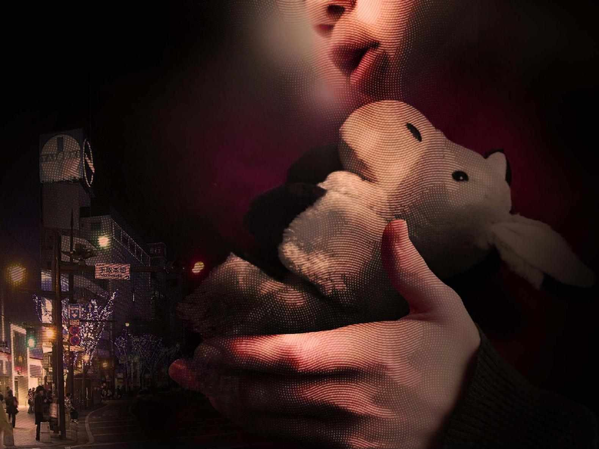
審査員コメント
○不思議な空気感のある文体が好きでした。
●
主人公のやさしさ、とまどいがうまく描かれていました。彼女の距離の取り方から、人に頼りたいけど、人を寄せ付けない孤独感を感じました。そこがどこかしら主人公と被っていたような気がしました。そういう人同士、出会うのかもしれないな。
005：サンタが家にやってきた
小学三年生の二学期が終わって、いまは冬休み。
さっきまで、三田くんの家でテレビゲームをして遊んでいた。
でも、ぼくは怒って、ゲームを途中でやめて帰ってきた。
サンタクロースは、お父さんがやってるんだよなんて、三田くんがうそをつくからだ。
三田くんのことを信じられない気持ちでいっぱいだ。サンタは絶対にいるに決まってるのに。
今年のクリスマスこそは、サンタがプレゼントを届けるのを絶対に見てやろう。夜は寝ないでずっと起きていよう。そう決意した。
でも、寝てしまった。
布団から飛び起きて、真っ暗な中で時計をはっと見る。夜中の二時半だ。
二階のぼくの部屋には、カーテンの脇から月明かりが差し込んでいる。
そして、枕の横に何かが置いてあるのに気付く。包み紙に入ってるけど、きっとプレゼントに違いない。
うれしいよりも、サンタが来てしまった後なのかという、残念な気持ちの方が強い。
ぼーっとしながら、起き上がって吸い込まれるように、窓の方に足を運ぶ。
サンタがまだ見えるかもしれない、そんな願いの眼差しで三日月を眺める。
バタン。
ふと玄関を閉める音が聞こえる。
窓から下に目線をやると、外に向かって走り去る人影が目に飛び込む。大きなバッグを抱えているオジサンだ。
ぼくはすぐにサンタだと確信する。
（まさか、さっきまで家の中にサンタがいたなんて）
（あれ？）
（あのオジサン・・・見覚えがある・・・）
（三田くんのお父さんだ・・・）
（そういえば・・・、三田くんが言ってたな・・・）
（サンタはお父さんだって・・・）
気付いたら朝になっている。いつの間にかまた寝てしまったらしい。
枕の横には、プレゼントが置いてある。夢じゃないことがわかり、はしゃぎながら一階に降りる。
なんだか一階のリビングが散らかってる。ぼくのパパが110番だって騒いでる。
「ねえねえ、パパ。サンタさんからプレゼントもらったよ。」
「そうか、ゲームは無事だったか。良かった。」
審査員コメント
○ほんわかとしたエピソードに浸っていた最中、突然落とし穴に落ちたように背筋がゾワッとなった。その刺激がくせになりそう。
○えっ！と思えるところが2箇所あり、最後まで楽しめました！
○優しい嘘の代表格、サンタクロースの話で三田君で終わらないひねりがgood
○サンタクロースはお父さんだよ、の意味が最後にわかる！
●
子供の口調で語られています。かわいらしい話かとおもいきや、オチがおもしろかった。サンタを待つ気持ち、誰もが味わったことがあるのでは。小さいころの夢見る気持ちとほんの少しの疑う気持ちが入り交ざったような。
006：バ美肉おじさんの憂鬱
「バ美肉おじさん」という言葉をご存知だろうか。「バーチャル美少女受肉おじさん」の略で、昨今流行りのバーチャルユーチューバーなどで美少女になりきるおじさんのことである。何を隠そう、俺はバ美肉おじさんなのだ。おじさんってほどの歳でもないけれど。
最初は自分好みの3Dの美少女モデルを作ってみたかっただけだった。ところが、いざ完成してみたら動かしたくなってきて、やるなら徹底的に、とボイスチェンジャーで声を変えて当ててみた。面白くなって試しに動画をUPしてみたら、思いのほか反応がよく、じわじわファンが増えていった。気がつけば専用のTwitterアカウントのフォロワー数も1万人に達した。
俺がバ美肉おじさんだということは誰にも話していない。仲のいい友達にも、なんだか気恥ずかしくて話せていない。それなのにある日、親友がこんなことを言ってきた。
「雛河ぴよよってVTuber知ってる？最近人気出てきたみたいなんだけど、俺結構好きでさ」
心臓が止まるかと思った。思わず声も出そうになった。雛河ぴよよこそ、俺が受肉した美少女だ。
「...お前そういうのに興味あったんだ」
「いやー、声も喋り方もめちゃくちゃ可愛くてさ、絶対中の人も可愛いよアレ」
どうやら中の人は女だと思い込んでいるらしい。それだけ完成度が高いのだと嬉しい反面複雑だ。中の人が目の前にいるだなんて、まさか言えるわけがない。
「あんな女の子と付き合いてーなぁ。どっかに居ないかな...」
なんかごめんな、と俺は心の中で謝った。
それだけで終わればよかったものの、あとになって親友のアカウントからぴよよのアカウントにDMが届いた。可愛い、好きだ、応援している、そんな内容のメッセージだ。
俺は少し迷ったあと、「ありがとうございます♡」などとぴよよになりきって記入した。なにがハートだよ。俺だっつうの。そんな言葉を飲み込んで、俺は深いため息をつきながら送信ボタンを押した。
審査員コメント
○思わずググってしまいました。中の人を女性だと思う人、たしかにいますよね
○のじゃロリおじさんが引退してから失速気味なのが残念。
●
なりきることの楽しみも複雑さもうまく書かれていると思いました。自分とは知られずに自分を褒められるのは本心のような気がして、特別な思いだろうなと想像できました。バレたくないような、バレてしまいたいような。続きも読みたい！
007： 悲報もまた救い
電車とご対面する前に、書き残しておきます。
私の名前は本村景子、昭和24年5月15日生まれの天涯孤独なお婆さん。
ただ、5年前のある日だけは、名門料亭「山河」の女将「山河佳恵」でした。
ブランド物のスーツに身を包んだ不動産業者の男性が、私に挨拶を述べる。
「女将さん、本日は料亭山河の土地売却に応じて頂き、ありがとうございます」
料亭の女将さんらしく和装に身を包んだ私は、毅然と挨拶を返した。
すると、業者が神妙な面持ちで問いかけてきた。
「土地売買の交渉に入る前に、女将さんが本物の地権者かどうか確認させてもらってもよろしいでしょうか？
赤の他人が地権者を装い、土地の売買代金をだまし取ることがあるんで」
心に針でつついたような痛みが走る。
それでもグッと抑えて、「確認していただいても構いません」と応じた。
業者は問いかける。「生年月日とお名前を教えていただけないでしょうか」。
私はすかさず答える。「昭和27年5月17日生まれ、名前は山河佳恵でございます」。
矢継ぎ早に業者は質問を繰り出す。「生まれや育ちはどちらで」。
私は間をおかずに応える。「生まれも育ちも料亭山河、大阪北新地に育てて頂きました」。
業者の表情が緩むのが見えた。私も安堵する、想定問答を練習してきた甲斐があった。
これで土地の取引は進むだろう、何億ものお金が手に入る。
安心もつかの間、心臓をぎゅっと絞られる感覚が現れた。
あれから5年、私は西成の安アパートに身を寄せております。
取引の担当者は、会社の屋上から飛び降りたとの噂です。
逃亡生活は過酷でお金を使い果たし、心の痛みも増すばかり。
一旦、人生の幕を下ろさせていただきましょう。
そう書き残し、駅に向かう身支度をしていると、「ピンポーン！」と鳴った。
「誰かしら？」とドアを開けると、そこには警察官が3名。
肩と膝の力が抜け、顔の筋肉も緩み、お尻から地面にへたり込んだ。
心臓を絞る痛みはもうない。
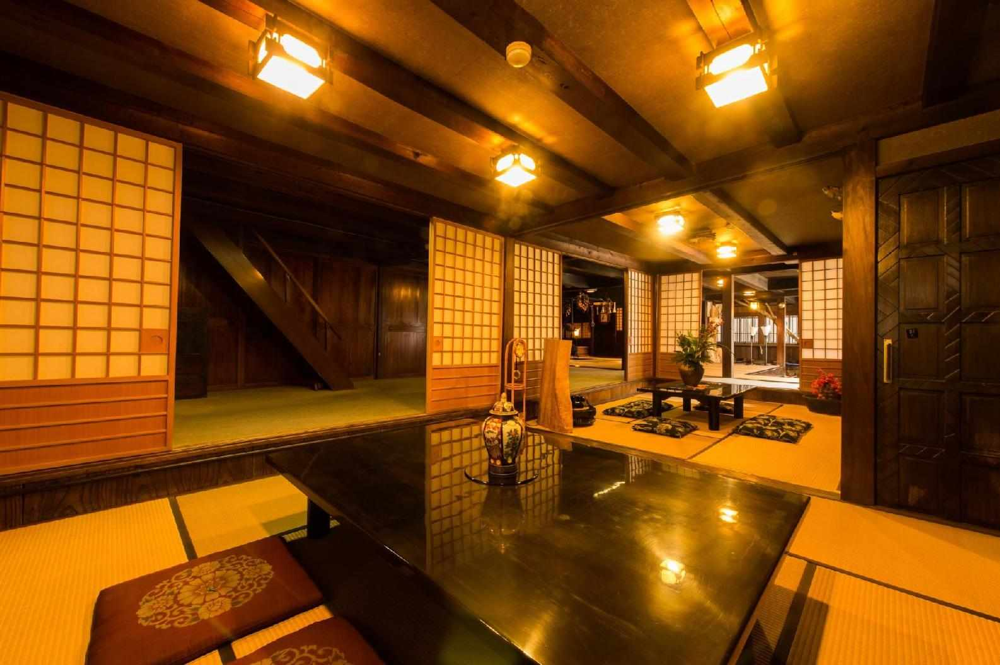
関連・参考URL：https://ja.wikipedia.org/wiki/%E5%9C%B0%E9%9D%A2%E5%B8%AB
審査員コメント
○大胆な嘘よりも、嘘をつきとおす日々の方が大変だという、2つの嘘が書かれていてよかった。
○長編のものを読んだような満足感がありました
●
主人公の語りからにじみ出てくる品の良さ、行動とのギャップに闇を感じました。最後の脱力感、よかったです。どうしても嫌いになれず、むしろよかったなと思えてしまうキャラクターの作り方、上手だと思いました。
008：おっちょこちょいのサンタさんとおかあさん
まい日いい子にしていたら、クリスマスにサンタさんがプレゼントをもってきてくれるの。
サンタさんは、みんなのことをお空から見ていて、みんながほしいおもちゃをこうじょうでつくって、もってきてくれるねんて。
でも、わたし、クリスマスのまえに見ちゃったの。ベッドの下にあるレゴ。
おかあさんがサンタさんに、お手がみをかいたっていってたけれど。
ベッドの下に、ディズニーのレゴが入ってた。
まだ、クリスマスじゃないのに、サンタさんはやくきたのかな？
でも、わたしがほしいのとはちがうやつやってんよね。
おかあさんにはなしたら、おかあさんがバタバタし出して、あとでもう一かい見たらなくなってた。
なんでやろう。
クリスマスは、ばぁばのいえですごしたの。
あさおきたら、だんろの中に、大きなくつ下がおかれてた。
くつ下の中には、トトロのおもちゃが入ってた。
わたしがほしかったレゴとちがう。
サンタさん、ちゃんと手がみよんでくれた？
そう思って、だんろのえんとつを見上げたら、サンタさんの赤いおしりと、白いヒゲが見えたよ。
サンタさんを見たおはなしは、ばぁばにはないしょ。
がまんできなくて、おかあさんには、はなしてんけどね。
おかあさんは、「サンタさんは、ほんまにいるんだね。」ってわらってた。
サンタさんって、えんとつをとおるときは、からだを小さくできるのかなぁ？
クリスマスのつぎの日、わたしは、おかあさんのいえにかえったよ。
あさおきたら、めっちゃ大きなくつ下の中に、ほしかったレゴが入ってた。
うれしくて、おかあさんに見せにいったの。
そしたら、「わかった！まえにベッドの下にあったレゴは、サンタさんがまちがってたから、一かいもってかえってとりかえたんちゃう？」っておかあさんはいってた。
サンタさんっておっちょこちょいやね。
でも、ほしかったレゴがもらえたからうれしいよ。
サンタさん、ありがとうね。
審査員コメント
○かわいい。気持ちがホッコリしました
●最初から最後までとにかくかわいい。子供の目線で書かれていて、大人をよく観察しています。お母さんもおちゃめ。母の立場としては共感できることも多かったです。楽しく読ませていただきました。
009：黒い排気ガス
昭和四十年頃は、大阪の市バスにも女性の車掌さんが乗っていた。
腰から黒い鞄をぶら下げマイクで行先案内をし、停留所では、扉を手動で開閉していた。
出発準備が整うとブザーを二回鳴らし、運転手に知らせてバスが発車する。
そんな市バスが大好きだった僕は、いつも一番前の席に座り運転手さんの操作を見ていた。
運転手さんに何かあれば即座に運転を代われる心の準備は、できていた。
小学校一年生のとき、週に一回、習字教室に市バスで通っていた。
習字教室の日は、小学校から帰ると机の上に往復の市バス代が置いてあった。
ある日、小学校からの帰りが遅くなり、急いで習字教室の用意をして市バスに飛び乗った。
市バス代を払おうとしたらお金が無い。ポケットやカバンをいくら探しても出てこない。
机の上のお金を取り忘れたのだ。呆然と立ち尽くしてしまった。
「お金を忘れたのか。仕方がないね。今日はイイから次からは、気を付けてね」
車掌さんが優しく言ってくれた。
停留所に降り、市バスを見上げると車掌席の窓から車掌さんが手を振っていた。
初めて友達からお誕生日会に誘われた。
プレゼントを買うお金が、おこづかいで足りなくて市バス代を貯めることにした。
少しの間大好きな市バスは、お預けになった。
その日も、小学校から帰るのが遅くなった。
歩いて習字教室に行けば絶対に遅刻する。
思い切って、お金を持たないまま市バスに飛び乗った。急いで一番前の席に座る。
降りるバス停が近づいてきた。心臓の音が聞こえ、血の気が引いてゆく。
ポケットを探るマネをし、鞄を探るマネをした。
車掌さんの顔を見ることが出来なかった。
いつもの停留所で降りた。
走り去る市バスの黒い排気ガスを浴びながら、唯々立ち尽くしていた。
嘘をつくのと人を騙すのは、違うことに気づいた。
審査員コメント
○納得し共感しそして考えさせられました。
○あまり物がなかった時代。お金もあまりなかった時代。それでも人は人のぬくもりから学んでいくんだと思いました。いい時代だったんだろうなと思います。好きなストーリーでした。
○大きな気づきがあって良かった。
○教訓めいたお話はたくさんありましたが、No.9の「黒い排気ガス」はそのなかでも話の組み立て方が上手で、すっきりと心に落ちました。最後の一言も「なるほど」と思わせるものでした。
○車掌さんと子供に心の交流があった良き時代を思いました。主人公の美しい気持ちに感動します。嘘をつくことと人を騙すこと。主人公の気付きにガーンとやられました。
名文でした。タイトルも良かった。
○黒い排気ガスが、主人公の心境と時代背景に上手くマッチしていて秀逸
○グッときました。
●
僕の小さかったころ、いつごろでしょうか。古き良き時代を感じました。子供心が丁寧に書かれていて、胸が締め付けられました。きっと僕は素敵な大人になっているんだろうと思います。
010：初めて運動会で一位を取った時の思い出
秋雨漆莉(あきさめ うり)
あれは小学生のときだった、初めての運動会でワクワクしていて今で言う瞬足みたいなのを買って貰ったんだ、当時はおジャ魔女どれみが流行っていてピリカピララと変身したくなるような魔法に引き寄せられて思わずママに買ってと駄々をこねて仕方ないわねとだだをこねて買ってもらった。当時の靴としては高かったと思う。その靴を履くとおジャ魔女ドレミのように可愛くて強くなれたような気がした。
ただ足が速くなる靴を買うだけではいけない練習も頑張らないとと思った私は友達や母と楽しく走れるように鬼ごっこを朝から晩まで近所の公園でしたっけな、もちろん逃げる役で。クラスで1番足が早い女の子と一緒にやったから最初は直ぐに倒れてしまってたくさんのお菓子を食べないと回復しなかったけど1ヶ月くらい経つと走ってもフラフラせずにお菓子を食べなくても平気なくらいにはなって身体が強くなったと思った。
もうひとつ母のススメでやったことがあって横になって空中足漕ぎ30回×3セットをやったのある意味走る以上にこれがきつかった。
それと母が鳥のササミを毎日食べさせてくれた。 50メートル毎日はしった。
当日雲ひとつない空が広がり爆竹の音を聞くと心が踊った。
走っている感じはほぼ覚えていないが、足が見えなくなるくらいに必死に走っていたことだけはおぼえている。それをずっとしていたら人が周りからいなくなり1番にゴールしたという感じだ。
1位になったお礼に東京ディズニーランドとディズニーシーに行きアトラクションに乗れないのでひたすら劇を見た記憶がある。
この出来事を私は一生忘れない。
最後に、テーマは｢嘘｣なのに何故この話かって？
私は本当は歩けない、だから文章の中だけでもかけっこで1位になりたかったのさ。
審査員コメント
● 勢いのある文章だと思いました。どこまでも突き抜けていくような爽快感を「走る」という行為に感じました。最後を読んでなるほど、と唸りました。
011：圏外のイケメン
中2のバレンタインデー、片想いの彼にある嘘をついた。
中学2年生の時、同じ水泳部の後輩に恋をした。全国大会に出るほど泳ぎが速く、何よりイケメンだった。彼は毎日スイミングスクールに通っているため、部活にはめったに顔を出さない。だから彼と話したことは一度もなかったが、遠くにいる彼の見た目だけで好きになってしまった。
夢見る乙女でも、叶わぬ恋になることは察しがついた。彼の誕生日さえ知らず、相性占いも満足にできなかったくらいだ。それでもクールな顔立ちの彼を諦めきれず、バレンタインデーの日に告白することを決めた。奇跡を信じる小心者の、無謀で大胆な挑戦だった。
2月14日、彼を屋上へ続く階段の踊り場に呼び出した。彼はやじ馬の男たちを引き連れながらも、指定の場所に来てくれた。もう、勇気を出すしかない。引き返したい気持ちを抑え、チョコを入れた紙袋を片手に階段を上がった。
そして、あの大好きの彼が踊り場にいた。彼との距離は約1m、今までで最も彼に近づいた。初めて彼と対面し、最高の瞬間になった、はずだった。しかし、ここで想定外の出来事が起こた。あんなに恋い焦がれた人の近くにきたのに、私が感じたのは喜びではなくむしろ衝撃と失望だった。なぜなら、彼が全然かっこよくないのである。少し出っ歯で両目は離れ、背も高くない。顔で恋に落ちたのに、顔が好みではなかったのだ。
原因は私にあった。当時視力が低下し、黒板の小さな文字が見えづらくなっていた。眼鏡を買うか迷いだした頃に、遠くにいる彼を好きになったのだ。私が知っている彼は、校内の離れた場所で歩く姿か、大会でゴーグルをつけて泳ぐ姿だった。つまり、私は彼の顔をはっきり見ていなかったのだ。ぼんやりと捉えた彼の輪郭を、理想の顔に美化してしまっていたのだ。
イケメンでない彼に用はなかったが、さすがに後戻りはできず、偽りの告白とともにチョコを渡して足早に去った。叶わぬ恋で終わってしまったのが、不幸中の幸いだった。
審査員コメント
○ある～(涙)！自己嫌悪に陥りそうなほどのガッカリ感...覚えあります。やるせなさが胸に染みました。
○すごく皮肉っぽくて面白かったです！一番好きです。
○最後の不幸中の幸いに、一緒にほっとしました。モジモジしていながら、堂々としている。
●これ本当の話なのかな。嘘みたいだけど、本当だとしたらまず告白した勇気に拍手！結果は喜んでいいのかわからないけど、なんともいえない気持ちに。タイトル、素敵でした。これからはメガネかコンタクトで！！
012：小さな衝動
小学校の頃、妹の友達が家に遊びに来たことがあった。わたしの部屋にかばんを置いて外へ遊びに出たようだ。机で本を読んでいたわたしはふと、かばんに目をやった。友達の開いたかばんの口から何か見えている。お菓子だった。きれいな色のついたゼリーのようなお菓子。
母は体に良くないからと合成着色料の入ったお菓子をなかなか買ってくれなかった。
立ちあがり、かばんの前でしゃがみ込む。お菓子はまだ開いていないようで、透明のカバーがかかっている。黄色やピンク、ミントグリーンの丸い粒が小さな窓からのぞいていた。手に取ってカバーを引っ張ってみる。パリッと音がしてカバーは外れてしまった。お菓子を手に持ったまま、じっと見つめる。
玄関の方で妹の声がした。急いでお菓子をかばんに戻し、廊下を抜けて居間のドアを開けた。テレビを付けてソファに座る。
足音が聞こえて、妹が息を切らせて入ってきた。
「お姉ちゃん、友達のお菓子、開けたやろ」
胸のあたりをぎゅっとつかまれたような感じになった。前を見たまま言い返す。
「開けてないよ」
妹はさらに意気込む。
「だってお姉ちゃんしかいないやん。まだお菓子開けてなかったって友達は言ってるもん」
「そんなこと言われてもやってない」
わたしは妹をにらんだ。妹もにらみかえす。
「お母さんに言うし」
妹はぴしゃりとドアを閉め、出て行った。テレビの音に混じって母と妹が話す声が小さく聞こえる。
後ろでドアの開く音がして、母がソファの横に立ったのが見えた。わたしの顔を覗き込む。
「あんた、友達のお菓子開けたんか」
「開けてない」
テレビの方を見たまま、吐きだす。母がゆっくりと息を吸う音が聞こえた。
「色のきれいなお菓子、欲しかったんか」
急にテレビの音が遠のいた。わたしは黙ったまま、少しだけ頭を縦に動かした。
「欲しかったら買ってあげるから。もうしたらあかんで」
母の声にわたしはうつむいてもう一度、小さく頷いた。
審査員コメント
○親の愛が感じられる素敵なお話でした。
○母と子の絆を感じてしまう作品でした。
○読んでいるうちに遥か昔の、小学生の自分に出逢えました。
心がほっこりしました。優しいお母さんで良かった。
○ついやっちゃうこともあるよね。お菓子の色、姉妹の描写が素敵です。
○子どものあるあると、お母さんの優しさにホッとしました。
○母と子の絆を感じてしまう作品でした。
○作者バレバレやけど好きな作品でした
●小さいころ、私もたくさん嘘をつきました。やっぱり家族には嘘が多かったんじゃないかと思います。甘えなのかな。それもまたいい思い出。
013： 嘘の流儀
嘘をついたことがないという人はいないだろう。
ただ、嘘をつき続けたいという人はいないのではないだろうか。
嘘は隠し通すものなのだから。
しかし世の中には嘘をつく事を求められる職業もある。命に関わる現場でそれは行われていた。比較的最近まで。
『1991年初版「医者が癌にかかったとき」竹中良文著 文春文庫
大腸癌で手術を受けた日赤の外科部長が、自らの患者体験とそれを通して医のあり方、癌告知や死の問題を考えた清々しいエッセイ集』
私がこの本に出会ったのは図書館だった。ふと目に止まり手にした一冊の文庫本をその場で最後まで読み切ってしまった。臨場感溢れる場面、豊かな表現力そして細やかな心理描写。
医療を施す側から一患者になった時の心の移り変わり。どのように人が患者になっていくのか。医療現場の問題点を医療現場から発した問題提起作のように感じた。
この本の中では様々な嘘が著者である医師から、また同僚医師の口を通して語られる。全ては重い病にかかった患者のための嘘だ。患者になった医師が癌だと気づいていないふりをする。医師が口をつぐんだ事実もあった。
時代は進み、最近では嘘を言う事の方が少なくなってきているのではないかと推察する。
祖母が脳腫瘍に倒れた時、私は父に連れられ共に担当医から説明を聞く機会を得た。その場に研修医2人が同席する事を父は承諾していた。だが緊張感のない私語は如何なものだろうか。振り返っても私語をやめなかった2人には退席してもらった。
急速に移り変わる時代の中一読していただきたい本である。
関連・参考URL：医者が癌にかかったとき (文春文庫)
https://www.amazon.co.jp/dp/4167343029
審査員コメント
●医療では嘘はタブーなんじゃないでしょうか。深いところに切り込んだ作品だと思いました。こうなると嘘が善か悪かという判断は一概にはできないように思います。誰が決めていい物でもないような。考えさせられました。
014： 嘘と常識
嘘は付かない、ルールには黙って従う。幼い頃の私はとても真面目な子どもだった。どちらかと言えば裕福な家庭で、常識的な親の元で育った。食事は毎食手作り、家は綺麗だったし、私の服は可愛かった。今の私とは大違いで、私の母は常識のある良い母親だと思う。
綺麗好きでお洒落で年齢よりも若く見られる母だったが、彼女が髪の毛を洗うのはなぜか週に1回程度だった。そのため、幼い私が髪の毛を洗ってもらえるのも週に1回程度だった。髪を洗うのは週に1回というのが我が家の常識で、私がそれを疑い毎日髪を洗うようになったのは高校生になってからだったかと思う。
小学生の頃、「昨日髪の毛洗った？」と同級生の聞かれるのが毎日怖くて仕方がなかった。「洗ってない」と正直に答える度に、汚いと馬鹿にされた。そう言われることが分かっていても、私は嘘を付けない子どもだった。嘘は決して付かない、ルールは必ず守るいい子だったが、会話が苦手で、よく虐められていた。幼い私は自分を守るための嘘もつけず、我が家の常識を疑うことも出来なかった。
大人になった私は沢山の嘘をつけるようになった。常識やルールは常に疑い、柔軟に変えることが出来るようになった。友達も増えたし、生きるのが楽しく、楽になった。親になった私は、我が子には嘘をきちんとつける子になって欲しい。人を傷つけるための嘘ではなく、自分や周りの人を守るために嘘は有効な手段の一つだと思う。そして、我が家の常識は非常識かもしれない。常に自分で考えてルールは変えられる人に育って欲しいと願ってる。
夫はよく私の言葉に傷つけられると言う。愛する人を傷つけるつもりなど全くない。おならが臭いとか、見た目が気持ち悪いとか、、、心を許しているからこそ、つい思ったことをそのまま口に出してしまう。やっぱりあの頃から私は全然成長していないのかもしれない。
審査員コメント
○親近感と共感がありました
●
主人公のまっすぐさ、好きです。私も毎日髪を洗っていませんでした 笑。いい嘘と悪い嘘があるとは思いますが、それすら自分の判断でしかないのでは、と最近思います。どっちの生き方もきっと意味があるんだと思いました。
015：夜は遠く続く
20時30分。付き合って3年の記念日のレストランでのディナーは、ロマンチックになると期待していた。
しかし実際は目の前の君は、フルコースにも関わらず4回も席を外してしまい、不完全燃焼のまま私達は店を後にした。
2人で手を繋いで駅構内を歩く。
響く案内のアナウンス
『21時23分 東京発、新大阪行きの新幹線』
は、遠距離の日常に戻ることを冷たく告げていくように感じた。
油断していると足取りは重くなり、目の前の視界は水に変わってしまう。右横の君に気がつかれないように唇を合わせていた。
『食事の時、何度も席を外してごめん。』
何か聞かれたら「笑ってる」と答えようと思って必死になって用意してても、急に声を掛けられビクッと驚いてしまった。
席を外していたことを思い出した。お腹に両手をあてるのを3回、ようやく2人で楽しめるのかと思っていたら、次は電話に呼び出されてしまった。
「何度も謝らないで大丈夫だよ。仕事だし、最初から電源切っておけばいいのにと思ったかも笑」
遠距離になってからのこの1年間は、もう何度使ったのかわからない
【大丈夫じゃない大丈夫】
を今回も言っておどけてみせた。
21時10分。２人で新幹線がくるのを待つ。
ドンッ、後ろから勢いよくきた女性の鞄が私の腰にぶつかり押されてしまった。ふらついて前に倒れそうになっていたのに、気がついてたら黒いコートに包まれていた。
早くなってる鼓動が聴こえてきた。
『ごめん』
『言うのが遅くなってごめん、結婚しよう』
助けたのに謝る？思ってたら、プロポーズが上から聞こえてきた。
私は目を開き、そして体を起こした。
『ごめんなさい！お姉さん、あたって』
『さっきの彼氏！指輪ちゃんと渡せたん？』
『お手洗いわからなくてロビー歩いてたら、自分の顔色悪いのに私に教えてくれたんよー！』
『幸せにやるんよ。おおきに！』
「嘘でしょ」と私が言ったのは消され、女性のハツラツした声だけホームに響き渡った。
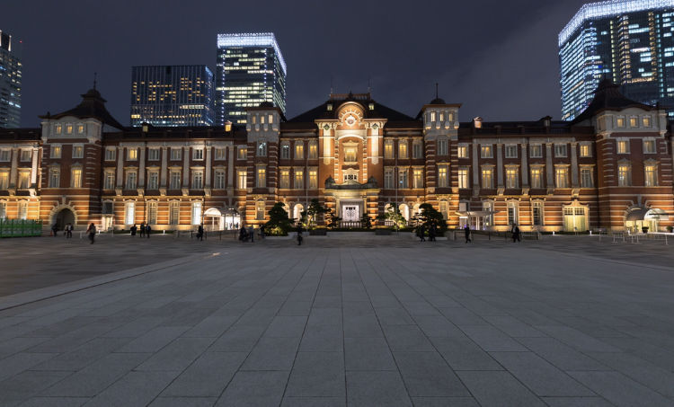
関連・参考URL：https://www.pakutaso.com/
審査員コメント
●目の前の視界は水に、の表現、すてき。女心。時間ばかり経っていく焦りもうまく書かれて伝わってきました。プロポーズ、言葉が降ってきた、のところもキュン。
016：女子高生の17年後
「私、社長になるから」
爽やかな春の風が吹き抜ける教室の隅っこで、椅子の背もたれに体重を預けながら、高校2年生になったばかりのマキは言い放った。同じ輪にいた３人の同級生は、「またいつもの冗談が始まった」と言わんばかりの苦笑いを浮かべながら、マキの話に耳を傾けてやる。
「エリ子は法学部志望でしょ？ そうしたらウチの会社の顧問弁護士として雇ってあげるわ。アヤはキャビンアテンダントだっけ？ ならばマナー研修担当かな。 リサは教育学部？ 先生なら公務員だから雇えないね。退職後に掃除のおばちゃんお願いするわ」
そもそも顧問弁護士とは"契約"するものであって、"雇用"するものではない。経営の知識が皆無ながら、よくも堂々と偉そうなことが言えるものだ。
進路学習が本格化し、志望校や将来の夢などを書いて提出することが求められる。まだあどけなさの残る高校生に拒否する権利などない。否が応でも現実と未来の間に存在する真っ暗な谷間を意識せずにはいられない状況から逃げ出したくて、マキは"社長になる"などと言ってのけたに違いなかった。
あれから17年。マキは妻となり、母となり、そして社長になった。蟻の鼻息で飛んでいきそうな小さな小さな会社だが、紹介で仕事が来るようになり、少しずつ成長していると言う。
あの時のマキの言葉の真意は未だにわからない。だけど、ただ一つ。ただ一つ言えることは、マキが社長になったという事実があるということ。
噓から出た真（まこと）にせよ、言葉が持つ力の強大さを思い知らされたのだった。
審査員コメント
● 私が女子高生のころ、こんな話をする友達はいませんでした。きっとそういう人の周りにはそういう人が集まるのでしょう。すごいなと思いました。きっと見ている先がずっと同じだったのでしょうね。かっこよすぎ。
017：ウソテトラ
海だ。
広くて青い海だ。
浜辺には、波が打ち寄せられている。
海は、おだやかな表情を浮かべそこにある。
私は、そこにいる。
私の近くに家族や友人、会社の同僚たちがいる。
そして私たちの前にはテトラポッドがある。
ときとして波は、大きく表情を変え私たちに押し寄せてくる。
私たちが傷つかないようテトラポッドが守ってくれる。
自分を守るテトラポッドは、自分で用意する。
テトラポッドの積まれかたは人それぞれ違っている。
小さなテトラポッドを2、3個並べただけの人がいる。
数えきれないほどのテトラポッドを高く積み上げた人がいる。
高く積み上げられたテトラポッドは、バランスを取るのが難しく崩れやすい。
テトラポッドが崩れると、その高さが高ければ高いほど、自分や周りの人を傷つける。
そこで周りが見えていなかったことに気づく。
個人を守るテトラポッドのほかに集団を守るテトラポッドがある。
一番身近なものは、家族を守るテトラポッドだろう。
親は、子供を育てるときテトラポッドを積まさせようとはしない。
小さな子供にとってテトラポッドは、あまりに大きすぎて広くて美しい海が見えなくなってしまうから。
子供に波が押し寄せてくると、親は家族のテトラポッドに入れるか、身を挺して守るだろう。
私たちがこれまでに積んできたテトラポッドはどんな形をしているだろうか。
数多く広げすぎていないか。
高く積みすぎていないか。
私は、人や海が好きだ。
私のテトラポッドは、胸のあたりの高さで止めておくことにする。
審査員コメント
○とりあえず、自分のなので笑
○自分を守る鎧をテトラポットになぞって切り口が面白かったです
●テトラポットの例えがいいと思いました。映像が浮かぶようです。自分で用意できるなら、私はどれくらいなのかなぁ。視界を塞ぐくらい積み上げてしまっているかもしれない。でもきっと自分で取ることもできるんだろうな。胸の高さまで、素敵です。
018：嘘が、鳴る。
聴いたことのない音だった。絶対音感のある私にとって、たいがいの音は音符として聞こえてくるのだが、それはどれだけ耳を澄ませてもついにどの音にも属さなかった。
長崎県、五島列島福江島。ロケハンを兼ねて立ち寄った展望台からは、岬の端に映画『悪人』の舞台にもなった大瀬崎灯台が見え、その先は東シナ海が広がっている。雲間からは幾筋もの光線が海面を神々しく照らし、きらきらと揺れていた。 「すごい」とも「きれい」とも声にすることができず、いたたまれないほど胸の奥がざわざわとした。「今日はずいぶんと海が鳴っていますね」と案内してくれた人が言った。
思えば、長く生きてきた分だけずいぶんと嘘をついた。終わった嘘もあり、今なお続く嘘もある。許し難い嘘もあったし、何人かの友を傷つけ失いもした。重ねるうちにいつしか現実になった嘘もあれば、嘘を持ち寄っていただけの恋もある。あるときは懺悔と称し、あるときは生きていくためにと決めて、私は嘘を水に流してきた。
九州本土最西端で聴く海鳴りは、怒っているようでも嗤っているようでも泣いているようでも喝采のようでもうめきのようでもあった。蠢く鈍色の水面を見つめながらふと、水に流したおびただしい人々の嘘はこの海に流れ着いているのではないかと思った。忘れていたはずの痛みを、この海鳴りは思い出せと迫ってくる。
「風が強くなったから車に戻りましょう」と言われてなお「生まれて初めてなんです。もう少し聴いていてもいいですか」と、その音からしばらく離れられなかった。
私の嘘が、鳴っていた。
審査員コメント
○海の描写と最後の一行に収束していく流れに、胸がキュッと鳴りました。
○ラストの一文、「私の嘘が鳴っていた」のフレーズに、どきりとしました。
○水に流した嘘が海に流れ着いて鳴るという着想がよい。海を前に立ち尽くす主人公の表情まで見えてくるような、力のある文章。
●
海が見えるような表現で素敵です。同時に音も聞こえてきます。あらゆる嘘さえさらっていってくれるような海の轟きと懐の深さ。ずっと聞いていたい嘘の音。好きな作品です。
019：解き放つ心
ＳＮＳに写真を掲載されることが嫌だった。彼がどこかで私の情報を得て、詮索し興味本位に質問されることを恐れていた。
私は電車の運転士だ。5年前の冬、現在の職場へ異動した。そこで三歳年上の彼と出会った。私の指導担当だった彼は、運転している私の隣で「下り坂の先に駅があるから、早めのブレーキな」注意すべき箇所を伝えてくれた。仕事以外でも「この職場は年配の運転士が多いから、挨拶はしっかりな」親切な先輩だと感じていた。
ある日、詰所で二人きりになったとき「お金儲けのことばっかり考えたらあかんで」怒りの目線で私を見ていた。状況が理解できず「どういうことですか」と尋ねた。「全部知ってねんからな」怒鳴り声に変わっていた。嫌われたくないと思ったからか無意識に自分の感情を押し込め「すいません」と俯きながら謝った。
彼はより高圧的な態度になった。「あいつと何をしてたん」「電子レンジでカレーを温めるときは、ラップで覆わないと飛び散って次の人に迷惑かかる」まるでストーカーだった。彼は自分が直接見たこと聞いたことを話すのではなく、又聞きで得た情報を自分勝手に解釈していた。関わりたくなかった。
そんなとき、セラピストの講座を受講した。対話の中で「変化が欲しい」と心を揺さぶられ、ためらわずに話をした。状況を把握するとすぐに具体的なアプローチを提案された。それは、現状の「問題解決」よりも相手との「関係性」を築くことだった。最初はストレスを感じるが、まずは相手にグッと近づくこと、その後、距離感が変化することを恐れず適切な距離感を再調整する。近づかずに調整しようとすると、失敗してしまう場合が多くみられる。彼は強く語った。その言葉を信じ、行動を続けた。
携帯電話の着信音が鳴った。彼からのメールだった。「職場の人間関係で悩み事があんねん。話を聞いてくれへんか」「私でよければ」間髪を入れずに返信した。
審査員コメント
●相手との関係性、まさにそうだと思います。そこにみんな悩むよねと共感を覚えました。距離感を再調整していく、という希望。その言葉だけで希望を見せてもらったような気がします。私も学びたい。
020：クシの記憶
夏生
夫と訪れた和倉旅館は自分で温泉卵を作ることが出来る。スマホのアラームを20分セットし、二人で源泉に生卵をつける。待ち時間で入ったお土産屋の隅にプラスチックの白いクシが見えた。１つ100円のそのクシは私の古い記憶を呼び覚ます。
23歳の頃だ。付き合って半年の彼、明が慰安旅行で奄美大島に行った。旅から帰った明に渡されたお土産は、ホテルの洗面所で見かけるようなプラスチックの白いクシだ。＜奄美大島のお土産がこれ？＞と頭によぎる。しかし、せっかく選んでくれたのだ。私は笑顔で受け取った。
翌日、友人の京子の家に遊びに行き、明が昨日まで慰安旅行で奄美にいたことを話す。すると京子が、あれっという顔をした。
「彼の会社、なんてとこ？」会社名を伝える。京子が目を見開く。
「そこ、私の友達の勤めてる会社や。その子も昨日まで奄美に慰安旅行に行ってたから、もしかしてと思って」
「ほんまに？すごい偶然」
「友達、その会社で明って名前の彼氏できて、慰安旅行もラブラブ旅行やったらしいけど、まさか、なぁ」
予期せぬ偶然と「明」の名前。私の不安を察した京子が友達に電話をしてくれた。しばらくして戻ってきた京子は、両手を固く握りしめている。
「同じ彼やった、友達は一か月前に告白されたらしい」
掴んだままのコーヒーカップがカタカタとなった。
その夜、明に電話した。私の番号は着信拒否になっていた。彼女に詰め寄られたのだろうか。詰め寄る機会ももらえない自分と、白いプラスチックのクシの軽さが重なった。
和倉旅館で、お土産を見ていた夫が、何かを持って私の方に歩いてくる。
「ずっとクシ見てるし、このクシどうかなと思って」
夫から渡された丁寧な細工のツゲのクシが、重厚感とともに手の平で広がった。
私の中で何かがリセットされる。
「クシ貰うんはじめてや」
スマホのアラームが鳴った。
温泉卵のできる時間だ。
審査員コメント
○辛い過去を忘れることはできないけれど、今のパートナーに大事にされていることで満たされている心情が伝わってきました。
○2種類のクシの対比、スマホのアラーム、温泉卵。構成が見事すぎます。僕もこんなの書けるようになりたい！
○温泉卵ができる時間に回想する、構成がすごいと思いました。
○切なさと温かさが同居していて良かった
●クシ、卵、うまく象徴が使われていてすごいと思いました。きちんと整えられている印象。ラスト、とても好きです。いろいろあるけどきっといまは幸せなのかな。とても文学的。
●クシは、髪をとく物。なんとなく女性の美しさを表すような物が男女の関係とつながっていることが印象に残りました。
021：一雫の響き
宇宙人
夜明け前、澄んだ静寂。漂う霧の向こう側に、うっすら浮かぶ滑らかな水面。妖艶な霧の舞いを照らし捉える、満ちた月の光。
私の身体は静寂に伴われ、揺らめく水のように辺りを浮遊する。霧の晴れ間に姿を現した水面は、丹念に磨かれた鏡のよう。映しだされたもう一つの満ちた月は、どちらが本物なのか見まごう程だ。
「あ、何か落ちた」
水面の中心から始まった輪っかは、水を押し広げながら外へと向かう。
「わぁー」
笑顔が躍る私。ゆっくりと広がり始めた波紋は、次第にスピードを上げ威力を得る。そしてまた、緩やかな表情へと戻ってゆく。
水の波紋が勢いを失いかけた時、私はうごめく何かに気がついた。
「ん？何？」
目を凝らすとそれは、人だった。波紋を上手に避けた人。タイミングを掴み、乗り越えた人。まともにぶつかり、溺れている人もいる。
「たった一雫で、そんな事に？」
「あ！また落ちた！」
水面に落ちた一雫を合図に、波紋が広がり始める。
「ど、どうしよう」
早く止めないと、とその一心で思わず飛び込む。辺りを包んでいた静寂が一瞬で叩き壊され、水面に大きなうねりが起きた。
「あれ？みんなどこ？」
さっきまでいた人達の姿がどこにも見えない。必死で探すも、自分の息づかいだけが大きく耳につきまとう。
「なんで？どうして？ほんの小さなウソだったのに！みんなどこへ行ったの？」
一雫の汗が額を横切る。硬直した身体。ボヤけた視界で天井をなぞり、長く深い息を吐いた。頭を持ち上げ窓に目をやると、夜明けがこちらを向いていた。
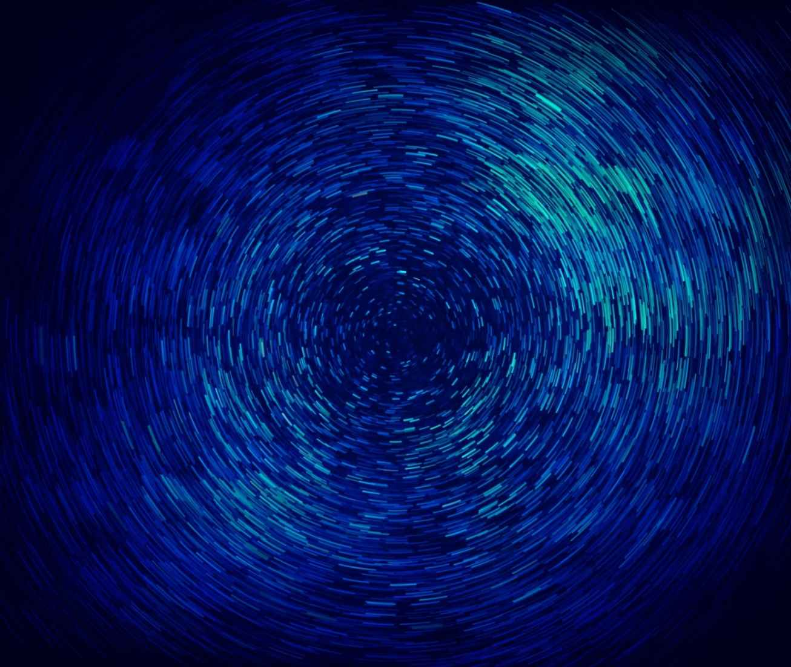
審査員コメント
●描写がきれい。文章も美しいと思いました。水の表現がたくさんあり、どれも素敵だと思いました。セリフもバランスよく入っているなぁと感じました。
022： 健全な身体
遠くで聞こえるサイレンが、どこか現実味を無くしていた。
すれ違う人々が、何か違う生き物のように見える。
とっくの昔に沈んだ太陽は、もう二度と昇らないような気さえする。
この世で彼女だけが本物で、だからこそ目を合わせられずにいた。
「別れよう」と言った口は、今はキュッと結ばれている。
何を言っていいのかわからないまま、俯いているしかなかった。
彼女が語った別れの理由は嘘だったが、それを見抜けないほど俺は子どもではなかったし
それを見抜けないほど俺が子どもじゃないことを彼女は知っているはずだった。
つまり、その嘘はとびきり優しい嘘だった。
俺を傷つけないようにと精一杯込められた優しさが、皮肉にも二人の関係の終わりを強く実感させた。
もう対等ではなく、保護の対象になってしまったのだ。
やっとの思いで「わかった」とだけ答えて、その場を後にした。
家に帰る途中に長いトンネルがあるのだが、徒歩で通るには長すぎるのでいつもは避けていた。
人気もなく、不気味で、昔はあの世に繋がっているという噂もあったが、もうこの世に未練もないと、半ば自暴自棄気味にトンネルへ入る。
トンネルの出口は遥か先に小さく口を開けている。
いっそのこと、一生出口につかなければいいのにと溜息を漏らした。
おかしい。
本当につかない。
出口の光は一向に大きくならないし、墨汁を何重にも塗り潰したような暗闇は、入った時よりも濃くなっている気さえする。
心細さが少しずつ募っていき、うっすら汗ばんでくる。
そういえばお腹も空いていた。
彼女とご飯を食べるつもりだったのに、予定が狂ってしまった。
ふと、「帰ったら何を食べようかな」なんて考えてる自分に気がつく。
薄情な腹だ、もう少し感傷に浸らせてくれよと、笑いが込み上げてくる。
顔を上げると出口は驚くほど近くなっていた。
健全な身体は嘘をつけない。
そんな事実にうんざりしつつも少し感動していた。
審査員コメント
○大人の優しい嘘。嘘を受け入れる優しさ。そして身体の正直さ。これらの人生の奥行きが、トンネルの象徴と重なり、素晴らしいと心から思いました。主人公の心のうちも良かった。過不足のない文章。上手かった！
○イメージしやすくて、読みやすかったです。
○彼女の優しい嘘と正直な身体の対比が印象的で、情景描写や構成もしっかりしている。
●トンネル、うまく使われていると思いました。絶望感もうまく表現されていて、唸りました。何があってもおなかがすくの、わかります！でもそれは若さの特権だったと思い知りました。。
023：正直
真っ黒になったクロムハーツのネックレスを身に付け、鏡の前に立っていた。
押し入れを片付けていて偶然見つけたものだ。僕は引っ越しの準備をしている。
クロムハーツが輝いていた頃、僕は歌舞伎町で働いていた。
「ハルキ。あの席、行ってこい」
内勤に呼ばれ、席を見る。高級ブランドを身に付けた若い女性。珍しいことではない。ホストクラブの客の多くは風俗嬢だ。
人当たりは良さそうだ。少々スベっても平気だろう。顔に微笑みを貼り付け、席に向かう。
「ここ、座ってもいい？」
「いいよ」
「初めまして、ハルキです。ねぇ、俺の写真名刺見る？」
ガイコツの写真に「ハルキ」とプリントされた名刺を差し出す。
「何コレ？」
女性はおかしそうに笑う。
「コレ、俺なんだけどさ。写真を撮ってる時にカミナリが落ちてさ」
誰も傷つけない嘘。
「ハルキ君はいくつ？」
「二十歳だよ」
これも嘘。
指名が欲しい、オカネが欲しい、コイツと寝たい。隠す必要はなかった。正直な気持ちの上に嘘を重ねていた。
ある日、内勤に呼ばれた。
「ハルキ。最近、マミちゃん来てなくないか？」
マミは僕のお客さんだ。ヘルスで働いている。
「なかなか客を取れてないみたいで......」
「割の良いソープ、紹介してやろうか？それかＡＶに売っちまえばどうだ？」
「まぁ、保留で......。ビラ配ってきます」
外に出て、いつもの場所に行くと、道路には白いチョークで人型が描かれていた。
ホストクラブの売掛が払えなくなった風俗嬢が飛び降りたらしい。
数日後、僕は逃げた。
それからは歌舞伎町を避けている。あの頃の自分について語ることもない。鏡には中年のサラリーマンが映っている。ホストの面影はない。
定職に就き、結婚し、子供も生まれた。近々広めのマンションに移る予定だ。社会人として、夫として、親として、すべて順調なはずだ。
嘘をつくこと、それ自体は少なくなった。
鏡の中の自分をしっかりと見る。クロムハーツは僕の胸で輝きを失っていた。
審査員コメント
○文章に引き込まれました
●必死だった日々、何かを守りたくても守れなかった日々の想い出。胸が締め付けられる気がしました。きっと鏡の前の僕も間違ってはいないはず。エールを送りたくなりました。
024：リアルおとぎ話
サンタクロースは、12月24日のまだ日の高い時間にやってくる。
付け髭にカツラ、息はタバコ臭い。サンタクロースのくせに私の欲しいものはプレゼントしてはくれない。いつもプレゼントはお菓子の詰め合わせが入ったプラスチック製の赤い長靴、たぶんスーパーで山盛りで売っている安いやつだ。
私はサンタクロースは実在すると本気で信じていた。友達同士でサンタがいるかいないの話題になると、私は会話の輪に入らなかった。だって毎年かならず家に来てくれるんだから！自分の中には、誰かと議論する余地がないほどの確信があった。
ところで、サンタクロースといえば、私は社会人になってから友人達とサンタクロースに扮したことがある。物心ついた子供にサンタクロースが親だと思われないように、お互いの家にサンタクロースとして行くというものだ。これは実にうまくいった。なんせサンタが家に来たとき、親は素知らぬ顔をして子供の傍にいるのだから。
子供のころに話を戻す。私の父は地元の大きな製鉄所に勤めていた。仕事で毎日遅く帰ってくるため遊んでもらった記憶があまりない。そんな家族を気遣ってかどうかはわからないが、会社は従業員家族への福利厚生の一環として、社内見学やバス旅行、運動会、盆踊りなどたくさんイベントを行っていた。単に景気の良い時代だったからなのかもしれない。
小学六年生の時、毎年恒例の運動会に家族で参加したときのこと。プログラム後半に従業員とその家族をランダムにシャッフルする二人三脚競技があった。私とペアになったのはガタイの良い知らないオジサン。オジサンは私に会うなりビール臭い息を吐きながら笑顔でこう言った。
「こんにちはサンタです。君は来年中学生になるよね？サンタは小学生の家だけ行く決まりになってるから来年は会えないね ＨＯ－ＨＯ－ＨＯ－」
庶民的なサンタクロースに慣れきっていた私には、それはすっと腑に落ちる言葉だった。
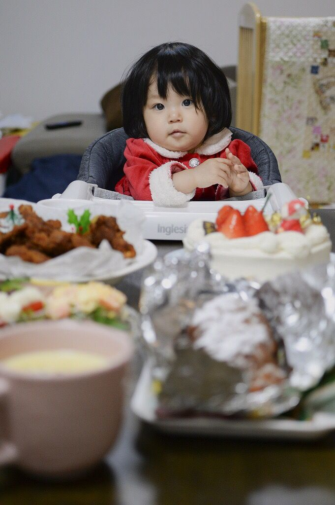
審査員コメント
●ちょっと引いたような主人公に惹かれます。大人の世界と子供の世界の間にいるような。味のある文章で楽しませていただきました。
025：流動的真実
8.7.2.5
「あなたのことが嫌い。」
これは、一昨日のわたしの言葉。わたしは彼との別れ際、こんな言葉を発していた。本当は嫌いなどと思っていない。ただ、寂しかった。
「君のことが好きだ。」
そう言う彼を残し、私は雨の中を小走りでその場を去った。
「彼のことが嫌い。」
一昨日、嘘で言ったことが、いつの間にか真実になっていた。わたしのついた嘘は、自らの言葉によってわたしの心を変えてしまった。
大好きな彼を嫌いになっていた。口先だけの虚構が、実感に変わってしまった。
一昨日の喧嘩を繰り返し思い出すたび、彼を責めるような気持ちが増えていった。
「僕が悪かったよ。」
これは、今日の彼の言葉。彼がついた嘘。わたしのためについた嘘。
彼は仲直りのために、心の真実に嘘をつくことを選んだ。
今、何が嘘で何が真実か、考え悩むことは無駄。嘘が後からほんとになることもあれば、ほんとが後で嘘になることもある。
あなたの嘘も、わたしの嘘も、誰かを思ってついた嘘も、ほんとかどうかはどうでもいい。
その言葉が嘘かまことか、本人にしか分からない。本人ですら分からない。
嘘ってそんなに悪いもの？嘘で救われる人がいる。嘘で救われる時がある。
現にわたしは今、嘘に救われ彼を許した。
一昨日のわたしの「あなたのことが嫌い」という嘘は、のちに真実になり、また嘘に戻った。
わたしはやっぱり彼が好きだ。
僕らはみんな嘘つきだ。嘘とともに生きている。
嘘に踊らされ嘘に救われる。悲しい顔をしないで、あなたも笑って、 わたしも笑って。
最後に笑えばそれでいい。ほんとも嘘もどっちでも。
誰かのためについた嘘も、自分のためについた嘘も、最後に笑えればそれが正義。
さあ、嘘を楽しもう。
審査員コメント
○共感しました！嘘も最後に笑えればいっかと思えました^_^
●わかるようなわからないような、わかりたくないような。嘘にまみれても最後に笑えればそれでいい。救われたような気がします。
026：嘘つきの空に
昨年の秋、心理学の大会で文章芸術と心の関係について発表した。小説には、言葉にしてないけども言葉以上のものが現れる『行間』がある。行間が書き手の心に影響を与えるのではと、小説を書くことが療法につながる可能性を説明した。
大学の教室で視聴する人の中から、質問の手が上がった。
「最悪の事態を防ぐ方法はありますか」
最悪とは自ら命を絶つことだ。予防方法は考察ではあるが持っていた。書きながら読者の目を持つと良い。でも、それを話すことを心のどこかが拒否をした。私は質問者の目を見て答えた。
「どうなんでしょう。太宰治は死んでますからね」
教室の空気が固まった。
冬になり、一人で旅に出て、熊野古道を歩いた。
時々、一人になりたくなる。物を書く私には太宰と同じような危うさがあることが、なんとなくわかる。私だけじゃなく、何かを表現する人には、どこか破壊的なものがある。
登りの路は険しかった。地面から浮き出る木の根っこはささくれて、人々が踏みしめてきたことを思う。息を切らし立ち止まる。木々の隙間から見える空は青かった。
泊まりの宿は、人里離れた山の上にあった。
宿の人が、屋上で星を鑑賞できることを教えてくれた。温泉に浸かったあと、浴衣の上に丹前を羽織り、屋上への階段を登った。
重い扉を押して外に出る。冷たく張りつめた空気。目の前は闇だった。息をのみ、そっと空を見上げた。
手を伸ばせば届きそうなところで、星々が瞬いていた。目が慣れると、無数の星屑が夜空いっぱいに浮き上がってきた。膝が震え、私は目を閉じた。
旅を終えてから、真昼の空を見ても満天の星が思い浮かぶようになった。何かが変わったのか、表現することへの不安が薄らいでいる。
私の中の危うさが目に見えないものを表せるのなら、恐れずに書いていきたい。
時々、青空の中に星を探してみる。見つからず、ただ何事もないように空は広がっている。
審査員コメント
○ほぼ事実だけを並べて、心情を読ませる行間の書き方が、すごいと思いました。
○読んでいる時間にするとたった2、3分でしょうか。私は学会に出席し「太宰治は死にましたからね」の言葉におかしくて椅子から転げ落ちそうになり、気づくと熊野古道を息を切らせながら歩いていました。木々の香りがします。温泉にも連れていってもらい、満天の星空を眺めました。ラストシーンは日常の青空の下に戻してもらって、ついでに星空を思い出すというお土産までしっかりと受け取らせていただきました。ありがとうございました。唸る。
●タイトル素敵です。闇の中で見た光に主人公は何を思ったのでしょうか。青空の中にも探す星はきっとただの星ではなかったのでしょう。表現することの深さ、さらけ出すことへの恐れと覚悟のようなものが伝わってきました。
●わたしのお腹の底にズドンと響いた感じがした。
わたしはに感じている破壊的なところが彼女とリンクした。
人並みの普通の幸せを恐怖していてそうなったらわたしの言葉や思いは消えていく気すらしていた。
わたしの中には、表現することにまだ不安と迷いがあることに気づかせてくれた作品
027：つよがり
SUIREI
祖父が死んだ。
まだ、夏の暑さの残る曇った日だった。
わたしは、葬儀の弔問客に出す煮炊きを手伝いながら、おば達がトゲのある話しを並べたてるのを聞いていた。
遺産の話し、土地の話、祖父の話。
「ほやかておじいさん、死んでくれて良かったが！これ以上続いたらおばあさん倒れてしまうとこやったわ」
「ほんまほんま、お父ちゃんええ時に逝ったわ」
誰も手伝わなかった介護を祖母は、12年1人でやってきた。
見合いで、顔も見た事がない男と結婚し家族を始めた2人。
寡黙な祖父と気が強くよく喋る祖母。
大正生まれの女にしては、祖母はバイタリティに富んでいてよく言えば自立した、いわゆるやり手ババァだった。
あの時代に生きるには生意気な可愛げのない女だったかもしれない。
株をやり、農園を作り、土地を転がして、ひと財産を築いた。
たまに、口が過ぎて祖父の逆鱗に触れて殴られる事もあったそうだ。
わたしの知っている祖父は、いつもダジャレをいい、変な歌を歌い、馬の絵を描くのがとても上手な人だった。
高校に入る頃には痴呆で徘徊し始め、気づいたら寝たきりになっていた。
話に聞く、大きな会社に勤め騎馬隊の隊長をしたという凛々しい祖父は、わたしの記憶とは全く別人だった。
祖母は、一昨日祖父がなくなってから、息子や嫁を叱りつけ細かな事までしきりまくっていた。
声をかけられるお客さんにも
「やっと逝ってくれた、ホッとしたわ」と笑いながら話した。
ケラケラ笑って悪態をつきながら、お客様にお礼を言う祖母をわたしは冷めた目で眺めていた。
おば達の話が、遺産をどう分けるかに終始し始めた頃、ふと廊下の向こうにある、祭壇の前に1人座る祖母が目に入った。
誰もいない祭壇の前に座る祖母は、さっきよりふた回りくらい小さくなっていて、肩が小刻みに震えていた。
審査員コメント
○感動しました！
○力強い祖母をとても感じました。
○うちの祖母の姿と重なる気がしました。悲しい気持ちになりました。
○よかったです。
○ホントは悲しい癖に強がるおばあちゃん。昔のオンナはそんな人多かったのではないかな。
○最後に「祖母が小さくなって・・・」はせつないですね。こういう年配の方はいますよね。
●バイタリティにとんだ祖母、あの時代では見えない苦労もたくさんあっただろうと思います。ラストに泣きました。嘘も真実もどちらも愛おしい。
●絆を感じました
028：チョコレート
西辻佳子
未熟児ギリギリの体重で生まれた私は、退院までの間に体重が減り続けたらしい。
このままでは赤ちゃんが死んでしまうと、新米ママであった母は心配したそうだ。
おっぱいをあげても嘔吐を繰り返す赤ちゃんの世話に明け暮れる、という生活からスタートした母の子育て。一番に心を砕いたことは、丈夫に育てることだったと聞いた。
料理が好きな母は、食べ物が身体を作るという信念のもと、ありとあらゆる工夫を凝らしていたように思う。毎度の食事に五品六品あるのは、当たり前。さらに、母の料理は何かひと工夫加えられたものが多かった。いかに効率よく栄養を摂ることが出来るかを考えたもので、決して見た目の美しさだけを重視したものではなかった。
料理によってはなかなか箸が進まない時もあった。そんな時に母がいつも口にしたのは「騙されたと思って食べてごらん」だった。
ひとくち食べてみると、美味しい事も多かった。「ほらね」と嬉しそうに微笑む母の顔をよく見た気がする。
私がまだ小学生だったある日、夕飯のメニューを聞くと、「今日はチョコレートよ」と返事が返ってきた。
当時滅多に口にすることがなかったチョコレートが食べれると思った私は、大いに喜んだ。勇んで食卓について机の上を見渡して見てもどこにも見つからない。母がチョコレートと言った料理は、なんと鶏レバーの甘辛煮だった。
「だって色が似てるでしょ。身体にいいのよ」
あの時ほど騙されたと思ったことはないかもしれない。子供心にも、それほどの衝撃だった。
私も母となり、子供に料理を作る立場となった。母のように料理が得意ではなく、毎度の食事の品数も寂しい。
けれど、唯一母の真似をした事があった。
「騙されたと思って食べてごらん」
私にとっては魔法の言葉だった。
今、大きくなった子供達からの返事は
「ママはそう言っていつも私達を騙すからな」
「え、そんなつもりじゃ」
審査員コメント
○感動のラストになるかと思いきや、子供たちとのギャップを感じる最後にクスリとさせられました。
○嘘は繰り返される。けれど、どこか温かい空気が感じられる１話でした。
○騙されたと思って食べてごらん、は私もいつも母に言われていました。この作品を読んでそのことを思い出し、母の声が聞こえてきました。心の奥が懐かしさでいっぱいになりました。
●親心にあふれていて、共感できました。チョコレートとレバー、いいですね。お母さんも必死だったのでしょう、愛情が伝わりました。そんな嘘もいい思い出になります。
029：たいていのメロンソーダは嘘の塊だ。
こんなツィートをネットで見つけた。そんなの昔から知ってる。嘘は美味い。なにより本物より美味しい。不倫デートのドタキャンの言い訳は、嘘八百である。子どもが熱を出したから。親が遊びに来ることになったから。騙されたふりをして、他の人妻とアポをとる。嘘から出た現実である。
新社会人になった長女は、ふたりきりのデートの度に「お父さん、お母さんに嘘をついているでしょう!?」とカマをかけて聞いてくる。吐いた言葉は、多かれ少なかれ嘘だよと言い逃れることにしている。娘は、親父のこの戯言を、どのように聞いているのか!?知る由もない。書いたって、喋ったって、吐き出した言葉には、すべて意図がある。ちょっとだけ嘘をついている。どんなに伝え尽くしても、真実は、そこにはない。ちょうどいいくらいの嘘が、ちょっと盛ったりしたくらいの嘘が、要は、バレることない嘘が、未来を創っているわけである。
元気にやっているか!?と聞いたら、元気!と答える。東京は楽しいか!?と問えば、楽しい!と答える。彼氏はできたか!?と突っ込むと、キモい!と答える。娘たちとのやりとりは、ちょうどいい嘘の塊である。そんなの小学２年生の頃から知っている。真実などわからない。親孝行な娘たちである。
今日も友達が遊びに来た。詩吟とダンスで忙しかった。按摩に行く日だったのに忘れていた。毎日のおふくろのメールには、カラカラの元気という嘘が盛られている。こちらも、棺桶まで持っていくつもりのちいさな嘘を散りばめて返信する。
真実よりも口実という嘘を愛してナンボである。目の前の嘘を抱きしめてやる。常備薬のごとき嘘をメロンソーダで流し込む。だからね、好きになった女性には、一生騙し続けてくれと願う。一緒に仕事をすることになった仲間には、一生同じ夢を追いかけようやと願う。家族には、いまのまま、嘘のまま。騙し騙しの事実が、真実になっていく。
だからね、一生のね、お願いだからね。
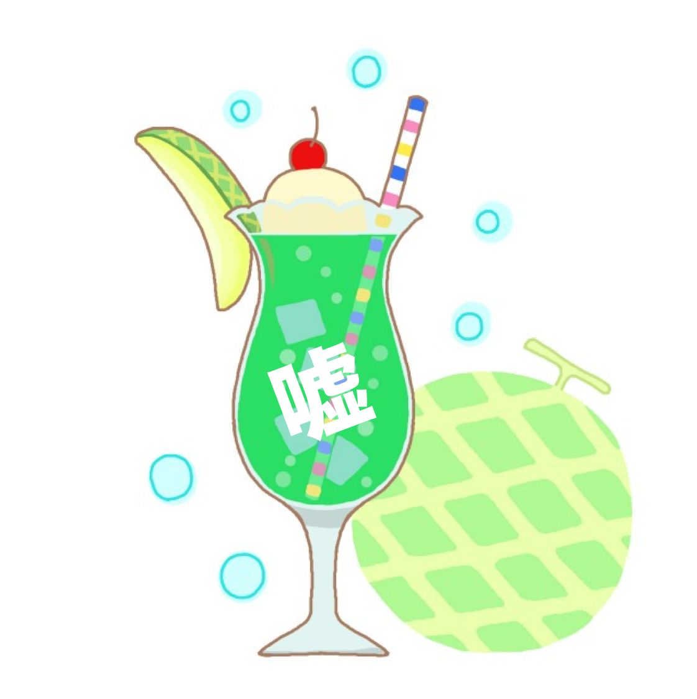
関連・参考URL：
https://twitter.com/mahbo/status/401635094697615360
審査員コメント
○子どもが家から離れて暮らすようになって、お互いに優しい嘘をつくようになる。成長した証。でも少しばかりの寂しさもある。中年オトコのつぶやきが好きです。
○文章の読みやすさ、声に出したくなるような小気味好さ。すいすい読ませて最後にやさしく胸を衝く。素直にいいなと思えた作品。
●どんなに伝えつくしても真実はそこにはない、これこそ本当なんだと感じました。どこまでもやさしさにあふれた文章。救われる人がたくさんあるのでは、と思いました。私もその一人です。
030：その種
なぜ、みんなは同じことができるんだろう
なぜ、みんなで分かり合っているんだろう
なぜ、言わなくても分かるんだろう
なぜ、みんなが出来ることが出来ないんだろう
なぜ、なぜ、なぜ
あなたは、なぜ分からないの？
あなたは、なぜ"普通"にできないの？
あなたは、なぜこれが理解できないの？
あなたは、どうしてその場の空気が読めないの？
なぜ、みんなは"普通"を知っているんだろう
なぜ、"空気"というものが読めるのだろう
なぜ、わたしだけ分からないんだろう
なぜ、人気のものに興味がないんだろう
なぜ、なぜ、なぜ
あなたは、"常識"がない
あなたは、周りに合わせられない
あなたは、なにを考えているのか分からない
あなたは、勝手なことばかりする
できない、分からない、感じられない自分が
この世界では、異質な生き物なのだ
この世界では、劣っている生き物なのだ
異質だと、劣っているとバレてしまえば
わたしの存在を消されるかもしれない
だから、分かる、ふりをして
まわりの様子を、いちいち見ながら
まわりの顔色を、きちんとうかがいながら
その種であるふりをして、生きて、いこう
審査員コメント
●詩のように韻を踏んでいて楽しく読めました。なぜ、が繰り返され、心に響きました。最後には希望も見えた気がします。
031：喜怒哀楽のウソ
喜怒哀楽とは、人間がもつ代表的な4つの感情を表す四字熟語。喜び、怒り、悲しみ、楽しみという感情バロメーターの中で人々は日々を過ごしている。ホントに思ったままの感情で日々を過ごしているのか私生活で考えてみた。昔、親戚のおばさん家に遊びに行った時の話。グリンピースを乾燥させたカリッとしたスナック菓子をもらった時、美味しくて私は、とても喜んだ。それから行く度に同じお菓子が出てくるが、喜んでいるという仕草を見せていた。また、彼女との初デートが楽しくて、最後に楽しかったと言った。それから毎回、合言葉のように、楽しかったと伝える作業に変わった。また、友達から理不尽なことを言われて怒っていたが、聞かれると怒っていないと言う。また、悲しい時も同じで聞かれると、悲しんでるのではないと、違う理由を言う。これだけ並べると完全に、私はウソつきである。さらに、あなたはウソつきですか？と聞かれると、自信満々にウソつきではないと言い切る。完全に大ウソつきである。ここまでは、相手や自分の気持ちを考えてのウソが多い。しかし、今回は、自分を調整してより良い生活にするウソを話したい。喜ぶ、楽しい感情の時に、セロトニン、オキシトシンといわれる幸せホルモンが放出される。効果として、体内の自律神経を整え、ストレス軽減、免疫力アップ。便秘や肩こりの軽減、血圧を正常に近づける。脳の疲れをとり認知症予防にもなる。さらに人に優しく接することができ人間関係の改善にも繋がるという魔法のようなホルモンなのだ。また、脳は騙されやすく、悲しい時に無理矢理に笑う、楽しいと思い込むことで、脳は楽しいと勘違いし、幸せホルモンを放出するのである。これから人にウソをつくのではなく、自分の脳にウソをつく生活に変えてみてはいかがでしょうか。そうすることで、あなたの人生は大きく変わるはず。まずは騙されたと思って笑いまくってみませんか？？
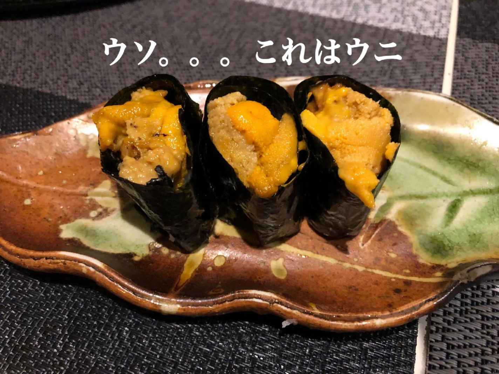
関連・参照URL：
http://www.japanclinic.co.jp/counseling/detail.php?id=135
審査員コメント
○試してみたくなりました。
ありがとうございます。
●なるほどなるほど、と最後まで整理された印象。脳に嘘をつく。本当に変わっていくのかも、と思ったりしました。名コラム！
032：ポケットの中
水川すみれ
窓の向こうから野太い声が聞こえてくる。廊下の窓に手をかけてグランドに目をやった。
白いユニフォームの野球部が練習を始めていた。
大橋くんがいないか目で追った。どこにいるか分からない。
少し離れた窓にミサトが立っているのが目に入った。風で髪が揺れている。ミサトの隣に足が向かった。
「大橋くん見てるの？」
少しこちらに目をやったあと、グランドに視線を戻してミサトが頷く。風に吹かれて髪がなびくと彼女の白い頬があらわになる。
ミサトがわたしに顔を向けた。
「クミコは？誰か見てたの？」
聞こえないふりをして制服のポケットに両手を突っ込んだ。
「ミサトは大橋くんのどこが好き？」
口をついて出た。
ミサトが窓枠に頬杖をつく。
「好きかどうかわからない」
「好きかどうかわからないのに付き合ってんの？」
「大橋くんは結婚したい人」
白い頬から目を逸らした。
大橋くんの学生服の背中が目に浮かんだ。
授業で黒板を見るたびに大橋くんの背中が目に入る。ノートをとる指に目が止まる。少し長めの袖から伸びる太くて日焼けした指に目が止まってしまう。
グランドから大橋くんの声が聞こえてきた。
内野で構える姿が見える。ファーストに投げるボールが逸れそうになる。
ミサトが廊下に向き直った。
「大橋くんと一緒にいると安心する」
わたしより背の低いミサトが俯くとさらに小さく華奢に見える。小さなつま先をまっすぐ揃えて立っている。
ポケットの中の両手を握りしめた。
「大橋くん、ミサトの話ばかりしてくるよ」
返事をせずにミサトが窓に向き直った。わたしの顔を見上げて言う。
「クミコは好きな人いないの？」
「いないよ」
ポケットに隠した両手をもう出せない。
審査員コメント
○少女マンガみたいな感じが好きです。
○忘れかけてた青春の一場面が目に浮かびました。
ちょっぴり切ないけど、イイね。青春バンザイ！
○出せない両手が、どんな思いなのか、読む人によって違ってくるような書き方が、うまい。
○グランド・ユニフォーム・揺れる髪。砂埃に混じってシャンプーの香りが届くようです。野球部・窓枠・頬杖・乙女の気持ち。黒板・ノートをとる大橋くんの日焼けした指。
ファーストへの送球が逸れそうになるのを見ながら、クミコより小さなミサトの大きな気持ち「大橋君と一緒にいると安心する」をクミコはキャッチしちゃったんですね。今も耳元で聞こえそう。頑張れクミコ。
●うわぁ、私も野球部の子、好きでした。窓から見ていたのを思い出します。好きな人がかぶること、ありますね。切ない嘘。誰のための嘘なんだろう。こういう嘘はなんだか青春を感じます。
033：優しい嘘
人は誰かを守るときに嘘をつくようだ。
別れた夫に会いに行く時、子ども達は何も言わずに出かける。何処かに買い物に行くようなふりをしたり、友達に会いに行くようなふりをする。ところが、3人いると誰かが口を滑らし、会いに行ったことを知ることになる。私は平気なふりをして、ボールに入ったポテトサラダ用のジャガイモをキッチンのテーブルの上で潰し、元気にしているのか聞いてみた。大学4年の長男は椅子に座り、カバンの中から見覚えのある腕時計をとりだした。「これ、くれた」と私に見せる。新婚旅行で私と一緒に買ったブルガリの時計だった。ジャガイモを潰す手に力が入る。
長男は人差し指と親指で時計をつまみあげた。「就職決まらんかったら、後継がへんかって言われた。断ったけど」私はふうんと言い、調理台でささみのチーズフライにパン粉を付けた。
元夫は小さな運送業の2代目だ。12年前に私と別れた後、すぐに再婚して養育費の支払いを放棄した。子ども達に手がかかる頃には知らん顔だった。自分の生活で精一杯だったのかもしれない。癌にもなったらしい。健康を取り戻し、長男が大学に入って酒の相手が出来るようになった途端に、元夫から連絡が来ているように感じる。それまでは子ども達から連絡して会いに行ってるようだった。冷たくあしらわれたせいか、涙の跡をつけて帰ってきたこともあったように思う。
フライパンに油を入れ、ささみのチーズフライを揚げる。時計をテーブルに置く音を背中で聞いた。「パパと飲み過ぎて、二日酔いやわ」長男がため息混じりに言う。菜箸を持つ手が震え、左手に油が跳ねた。慌てて水道の蛇口をひねり冷水をかける。冷たい水は渦を巻いて排水口に吸い込まれていった。「火傷したん？大丈夫？」心配そうに私の隣に立ち、菜箸でフライをひっくり返す長男は、いつの間にか私の身長を超えて、見上げるほど背が高い。「私はいつでも大丈夫やで」渦巻く水が滲んでいく。
審査員コメント
○なんとも言えない臨場感や、感情か伝わってくる作品でした。
○子供の嘘は親は見破ってしまうものかと思います。暴くことは簡単だと思うけど、それをしないのはやはり愛情なんだろうな。
どんな嘘も想いがあれば温かいのかもしれません。
○正しい嘘の使い方を教えてもらった様な気がします。
○切ないです。
●料理をしながら話が進む、構成がいいですし、象徴的にも思えて素晴らしかったです。複雑な思い、はち切れそうだけれど本当のことを言えない。それも大事な人を守るためだったりするのでしょう。とても好きな作品です。
●母と息子、父と息子、そして元夫婦の関係に、共感しました。
034：せつないような嘘
織歌
そうだ！思い切り嘘をついてやれ！
「私は男だ。」
うん、確かにこれは嘘。だけどただホントのこととは真逆なことを言っただけ。
「私は美しい。」
これも自分を大袈裟に卑下した裏返し。
「明日人類は滅亡する。」
これは限りなく可能性が低いことを言っただけ。
｢嘘・うそ・ウソ｣
嘘をつくとは、どういうことなのだろうか。
私は嘘をついた。恋人のゆうじに｢好きだよ。大好きだよ。｣と嘘をついたのだ。本当は、彼はもう私の一番好きな人ではない。私が一番好きなのは別の人なのだ。だけどその人には家庭がある。不倫してるわけじゃない。その人は絶対に家庭を裏切ったりしない。私が一方的に好きなだけ。本当に心から、その人のことが好きなのだ。
ゆうじを嫌いになった訳じゃない。一番でなくなっただけ。だから別れることも考えてない。一緒にいて楽しいし、私のことをとても大切にしてくれる。彼の隣にいるとホッとするしのびのびといられるのだ。そんな心地よい場所を失いたくはない。だから別れるなんて考えられない。
私は嘘つきでずるい。安定とドキドキ感の2つを同時に手に入れたい。欲張りなのかな。いつか神様から罰を受けるのかもしれない。
ゆうじに嘘をつくたびに心がチクリと痛む。ごめんね。本当に好きなのはゆうじじゃないんだよ。心の中でこっそりと謝る。
ゆうじが私の本当の気持ちを知ってしまったら、どうなるのだろう。ゆうじは怒るだろうか。怒らないとしてもとても傷つくに違いない。傷ついて私を絶対に許さないだろう。別れを切り出されるだろうか。
ゆうじに別れを告げられたら、私は泣いて謝ると思う。だけど何を謝るのか。別に不倫してるわけじゃないのに。一番がそうじゃなくなったという、この心の変化は罪なのだろうか。
だから一層私は嘘つきになる。｢ゆうじが大好きだよ。｣と笑顔で嘘をつくのだ。いつかこの嘘がばれたとしても、私は嘘をつき続ける。
審査員コメント
●切ない。好きってなんだろう、嘘ってなんだろう。もうこういうことに答えはないのだと思い知らされました。嘘をつき続ける覚悟、伝わりました。ありがとうございます。
035：悪い女
追いかける恋が好きだった。
ベッドに寝ている彼の背中越しに、生き様や世界観を見るのが好きだった。
彼は売出し中のデザイナー。二人でおしゃれをして夜な夜な派手に遊びを楽しんだ。彼は華やかな世界に身を置き輝いていた。彼の創作の苦悩やプレッシャーをわたしは誰よりもよく知っていた。彼の目線はいつもわたしより遠くの夢を見つめていた。わたしは才能ある彼を愛していた。彼に心を傾け、彼の帰るところでありたいとずっと思っていた。
同棲して三年、わたしは三十歳を過ぎた。与え続け待ち続ける日々に疲れが出始めた。
彼に女性の影が見え隠れした。もう何度目だろう？
わたしは、暑い夏のさなか彼の元を去った。
その後、シライシさんと知り合った。
三十代半ばのありふれたサラリーマン、今までのわたしなら絶対付き合わない。
シライシさんは毎日電話してくる。
わたしだけを見てる。
わたしが料理をしていると嬉しすぎて、周りでうさぎ跳びをしてしまう。
今まで、こんなにも愛されたことってあった？
もしかしたら、自分の気持より、愛され望まれて結婚するのが女にとっての幸せなのかも、という考えがわたしを捉えていた。
その年末、仕事帰りのシライシさんと待ち合わせをして、ブランドのセールに行った。
「外で待ってるからゆっくり見ておいで」
わたしは店に入る。
買物の紙袋を彼に預け、別の店に入る。
二軒目、三軒目と預ける紙袋が増える。
シライシさんは善良で従順だ。嫌な顔ひとつせず待っている。
何かが私を苛立たせる。
わたしが求めてるのはこれじゃない！
まるで復讐のようにわたしは買い物をする。
最後の買い物を済ませて店を出た。
華やかな女性でごった返す中にいくつもの紙袋をぶら下げて立っているシライシさんがモノクロで見えた。
くたびれたグレーのスーツ、年の割には薄い髪の毛が乱れてはねている。
わたしの姿を見つけて、満面の笑みで無邪気に手を振ってきた。
ごめん、もう、自分に嘘はつけない。
審査員コメント
○感情の表現がとても上手い。静と動があって印象に残る。
○100篇の中でいちばん起承転結がはっきりしていると感じました。字数制限のあるなか、１つの物語としてまとめあげられているので読み応えがあります。せつない女性の嘘ですね。共感の声は多いかもしれません。
●始まり方、素敵。文章も引き締まって無駄がないように思いました。だんだんせり上がってくる心の叫び。モノクロの姿、切ない。それでも嘘のつけない苦しさ。見事でした。
●とてもわかる、30代の頃わたしも自分に嘘はつけなかった
40代になって、置かれた場所で咲くこともできるのかもしれないと思い始めた。
もしかしたら、今まで見えなかったものが見えるようになったのかもしれない。
そんなことを考えながらよんだ。
036：竹取りの女(ひと)
みぞいほううん
「貴方のやりたいように生きてください」と言われ段ボール箱一つ渡され、音信不通。
自由自在と嘘ぶき。
虚しい穴は、塞ぎようもなく。
小さな車で、町を幾つも通り抜け、一見自由気ままだけども、ウロウロするだけ。やがて綾という町に迷いこみました。
木々が覆い被さる様な場所ですが、小さな庭の向こうに家があり、廊下で何やら仕事をしている人がみえました。竹細工です。それはまるで昔々の物語。
「こんにちは、」「ごめんください」
振り向いた人は、色の白い小柄な女の人でした。
「どうぞ、どうぞ、上がってください。」
仕切りや戸がなく三十畳位が、見通せるのです。柔らかな物腰に隠された強い意思が感じられました。
香草のお茶を二人向き合っていただきました。
地元の竹を使い、古くから伝わる大型の喰籠を作っているとのこと、その技法は複雑で
美しく、魅力的だ。
この人は、自分の信じる道があり、確信をもち生きている。部屋にピアノが異彩を放っていました。
彼女は、仕事にかかり、私は、立ち去りがたく、陽は傾き、赤みを増した光が、部屋の中にハッキリと陰をつくりました。彼女は仕事の手を止め、陰に入りピアノを弾き始めたのです。太鼓を合わせました。
力強く鍵盤を叩く彼女は、別人のようです。
私も合わせて、高めていきました。
二人の音は言葉を越えて、波のように高まり、そして引き、冬の空に絡み合って昇っいきました。
やがて終わりをむかえ、彼女は仕事に、私は玄関に。「それじゃ」「どうも」
突然の別れの挨拶。
すでに空は暗く、風がでていました。
あの堅牢な竹の入れ物の中に、彼女の生きざまがあり、私の生きざまなど「まだまだ」と跳ね返されたのです。
「ええい、全部引きずって生きてやる」
「合わせて、自分」
十五年ほど前の話です。
審査員コメント
○800文字で切りとられた世界が、美しかったです。
○綺麗な文章でした。
好きです。
●です、ます調って難しいと私は感じるのですが、とてもいいと思いました。味があります。陽が傾く、そして音が絡み合う。竹の入れ物、も象徴的。独特の世界観、好きです、このセンス。
037：舞台
演じるのは嘘をついてることになるのだろうか...。
もしそうでも私は演じ続ける。
小さい時は演じることもなくごく普通の子供だった。
だけど10歳くらいだったか人生という舞台に上がり幕があけられた。
それからずっとずっと舞台を降りることもなく演じ続けている。
勉強を一生懸命し成績優秀。
お行儀よくいい子。
バイトもし、少しはやんちゃなこともした。
それでも勉学に励み就職した。
仕事も結構こなし役職につく。
そして結婚。
演じ続ける事に疑問を感じ、舞台から降りたいと思うけど、降りる事に罪悪感を感じてしまう。だからまた演じ続けた...。
親の子として。妻として。母として。女として。
親を尊敬し、いい子でいる。
人から良妻といわれる妻でいる。
みんなのお手本のような母でいる。
誰からも好かれる綺麗で可愛い魅力的な女でいる。
幕が下りるまでたった独りでいろんな役を演じる。
本当の自分の姿はどれなのか。
本当の自分の姿はどこにもない。
演じるこの姿を誰もが疑わない。全てが本当だと信じてる。
それに答えるようにいい子でいい妻でいい母でいい女を演じ続ける。
でも疲れた...。代役なんていないからずっと演じ続けなければならない。
誰かの声が...もういいよ。とどこからか聞こえる。その声に何故か溢れる涙。
もう終わり。もう演じなくてもいい。
安堵に包まれ舞台を降りる。
嘘で囲まれた舞台。演じることをやめたその時こそ本当の私にもどれる。
でもそれは人生を終える時...。
審査員コメント
●誰しもが少しは持っているかもしれないこんな闇。素で生きることは本当に難しく、演じている方が楽なんだろうなと思うこともあります。溢れる涙の意味はなんだろう。きっと大丈夫な気がしました。
038：あーちゃんは嘘つき。
あーちゃん。
私は嘘つきだ。
子どもの頃から、周囲の顔色を伺い、生きてきた。
周囲の期待に応えるために、必死で"いい子"を演じてきた。
本当は、外に出たかった。
本当は、友達と遊びたかった。
本当は、学校帰りに寄り道してみたかった。
本当は、学校帰りに買い食いしてみたかった。
本当は、違う学校に行きたかった。
本当は、夜遊びしてみたかった。
本当は、違う仕事に就きたかった。
本当は、一人暮らししたかった。
本当は、みんなに優しくしたかった。
本当は、みんなに甘えたかった。
本当は、.........。
本当の気持ちに蓋をして、"いい子"を演じて、自分の欲求に嘘をついてきた、今。
私は、私のことがわからない。
自分が何をしたいのか、何を求めているのか、わからない。
でも、きっと、私はこれからも周囲の期待に応える為に、"いい子"で、嘘をつき通す。
私が嘘をつき通すことで、周囲が笑ってくれることが、多分、私の求めていることなのかもしれないから。
審査員コメント
●たくさんの飲み込んできた欲求。小さいころのことはなおさらいつまでも心に影を落とすこともあるような気がします。嘘が悪いとは思わないけれど、きっと主人公はもう答えを知っているような気がします。エールを送りたいです。
039：優しい嘘
進藤 泰世
皆さん嘘と聞くと何を思い浮かべますか？
私は嘘には3種類あると思うのです。
１つ目は優しい嘘
２つ目は分かっていて相手を落とし入れる嘘
３つ目は天然で悪気無くついてる嘘
皆さんにも心当たりが有るのでは無いでしょうか？
今回は１つ目の優しい嘘のお話です。
私の父は20年前 61歳で亡くなりました。
叔父も同じ年に75歳で。
違う病院に入院していて、お互いが心配し合っていました。
伯父が先に亡くなり、父には元気であると、嘘を言っていました。
叔父の葬儀の日にも、私達家族は出席出来ないので父の妹(叔母)さんに頼み、病院に行って貰いました。
その日も父は、伯父のことを心配していたそうです。最後まで打ち明けられずに、伯父の100日目の法要の日に、父は亡くなりました。
伯父夫婦には子供が無く、父と伯父に、血の繋がりは有りませんでしたが、本当に仲が良く、一緒に家族旅行に行ったり、毎年のお正月の3日間の参拝は 必ず一緒だったりと沢山の思い出が・・・
私も娘達も大事にして貰い、大きな愛に包まれて 育ちました。
父は本当は分かっていたのかも知れませんが、父は 私達の前では最後まで伯父の事を心配して元気でいると信じている様子を見せてくれてました。
20年前の私は、主人は仕事が1番忙しい時であり、子育てで余裕が無く母も伯母も運転が出来ず、両方の病院を行ったり来たりと病気と闘っている2人に 優しい言葉がけが出来ていたのだろうか？
娘が結婚し、孫が生まれて父のことを思い出します。
今年20年目を迎え、今では父の優しい嘘だったのかも知れないと思えてきました。
本当に優しい父と伯父で、誰からも言われていた2人。いっぱい愛情を注いで貰い感謝、感謝、感謝で
私も優しい心遣いの出来る生き方をしていきたいです。
優しい嘘は何年たっても心に残り忘れません。
審査員コメント
○楽しく読ませていただきました。ありがとうございます！
○自分も 親を亡くしているので 気持ちがよく分かります。優しいお父さんだったんですね。
●まず3つ目の嘘でドキっとしました。心当たりあるかも 笑。読んでいて切なくなりました、優しい嘘なら私もつける人になりたい。嘘をつくのは容易でもあり、そうではないこともあるのだと思いました。
040：私は嘘
私は働きたい。嘘。
私は貧しくてもいい。嘘。
私は本を読みたくない。嘘。
私はお酒を飲みたくない。嘘。
私は煙草を吸いたくない。嘘。
私は恋をしたことがない。嘘。
私は人を愛したことがない。嘘。
私は嘘をついたことがない。嘘。
嘘がない世界なんて考えられない。
今日まで生きてきて、まるで世の中は嘘で構成されているかのように思える。
もしもこの世の中に嘘がなかったとしたら。想像もできない。
それほどまでに、日常の中で嘘を感じる。
何気ない会話の中での作り笑い。嘘。
寝坊する。とっさの言い訳。嘘。
私は何か口を開けば、嘘が飛び出してくるような人間だ。
そう、嘘は日常。本当は非日常。それが正解だと。
しかし、嘘は諸刃の剣である。「バレる」その時点で、全てが終わってしまう。
だから、嘘をつくにはそれなりのリスクが必要だ。
けれども、みんな嘘をついている。自分を守るために、大きなことも小さなことも。
その嘘が永遠にバレないことを願って、嘘をつきながら生きている。
そんな世の中が私は好きだ。
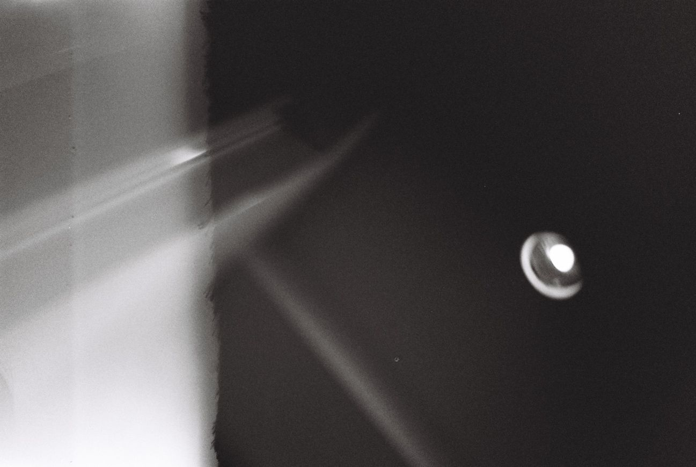
審査員コメント
●全部の嘘にいちいちドキっとしてしまいました。鋭いと思います。嘘のない世界、もしあっても私なら怖くていけないかもしれない。嘘にまみれたこんな世界を私も好きになれそうな気がしました。ありがとうございます。
041：Usoから出向いたShirahama Onsen USO
monchoponcho
「あんな、クロ 当たったよ た か ら く じ お肉食べ放題！」
「そうだな、俺は何放題にしようかな？」
「新車 外車買い放題 マセラッティ アルファロメオ ベントレー うぅ～ん」
「その前にサウナを作って、まったりしたいなぁ 寝起きにサウナね」
と犬を相手につまらない戯言を土曜の昼下がりに呟いていました。
携帯の着信「ねぇ、幹夫君！わたしは取り敢えず、明日温泉連れてって日帰りで良いから」
「どこ行こうかしら？」
「日帰りだし、でも美味しいものね 白浜にしよう 宿とって あっ日帰りか」
美咲からだった。
「ねぇ 返事は？」
いつもの調子だと僕は思った。
「なんでいきなり温泉？」
「だって当たったんでしょ、宝くじ いくら当たったの？」
「宝くじ？」
「クロちゃん相手に話してたじゃない 当たったんでしょ」
「何で知ってるの？ 通話切れてなかったんだ」
「そんなこと良いから、いくらよ？」
「フっ 嘘だよ 当たったら良いなとクロ相手に適当に話しただけだよ」
「エぇぇえ！ そうなの でもガッカリさせたんだから、明日温泉ね」
マジかよ、何でそうなるのと僕は思いつつ温泉も良いかなと考えた。
機嫌を損ねて面倒になるよりはマシである。
「そうだね、クエ鍋にしような」
「うんうん、よろしい」と美咲も上機嫌。
「オーシャンビューの大浴場ね、夕日を眺めた後にクエ鍋よ」
「テレビで観たんだけど、円月島の夕日が良いわね、調べてね、ねぇぇ聞いてる？」
「あぁ えんげつじま ゆうひ オーシャンビューでしょう」
結局いずれにしても面倒くさいことになるんだなと考えながら、
楽しい旅になりそうだなと僕は思った。
クロはお構いなしに丸くなって昼寝である。
僕はサウナには入れそうだし、まぁ寝起きではなさそうだが。
クロには、そうだなクジラのジャーキーでも買ったら良いか。
審査員コメント
●犬との平和な日常が目に浮かびました。なんだかんだ言って幸せなんだな、きっとこの僕は。温泉いいなぁ、行きたくなりました。
042：ダンスフロア339
ある土曜日の早朝、アスちゃんは、モノレールに乗り込む。そして、お気に入りのソウルミュージックのバリトンサックスの音を耳で追いかけながら、モノレールの窓の外をじっとみつめる。小箱を重ねたような画一的なマンション群、人気のないがらんどうの街並み、そして東京湾。アスちゃんの向かう先は、339号室だ。
アスちゃんは、海や川に面した場所に住んだことがない。人は、いつも孤独。人は、時に過剰な言葉で塗り固められた関係を築きあげ、時に言葉を徹底的に排除した関係を築き上げる。人が関係を築く上で、水際で暮らすということは、何か影響するのだろうか。アスちゃんは、しばしば途方もないことを考えたりもする。
アスちゃんの周りには、沢山の人がいて、アスちゃんは、一瞬でその場をダンスフロアにできる。ただ、アスちゃんが手にするその圧倒的な煌めきは、アスちゃんの孤独そのものだ。そして、それはアスちゃんがついている唯一の嘘。アスちゃんは、既に知っている。この世で一番不可解なものは、自分の感情と行動の間で起こる摩擦なのだ。
だから、アスちゃんは、339号室でダンスをする。まるで、自らついている嘘が本当であることを願うかのように、不器用で情けない自分をひたすらに抱きしめるのだ。
審査員コメント
●タイトルに惹かれます。なんかいいです。自分の感情と行動の間で起こる摩擦、この言葉好きでした。全体的になんだか無機質な感じがいい味出てると思いました。名前も性別不明でそれもまたアリかと。
●なんか夢みたいな情景が浮かんだ
043：Re:
普段あまり連絡を取らない友人からメールがあった。内容は「ひさしぶり」の一言だけで、こちらも「ひさしぶり」とおうむ返しで応じる。
「あれから、どう？ 連絡がないから気になって」
すぐに返信が来るが、内容には心当たりがなかった。「あれ」も「どう」も、何を指しているのか見当がつかない。「何の話？」と途中まで打ちかけた手を止めて、メールボックスで以前のやりとりを確認する。最後のメールは向こうからの返信だった。
「そっか、わかった！ お大事に！」
具体的なことは一切書いていないメールだったが「お大事に」という言い回しから、連想するように思い出した。
半年ほど前、そのときもひさしぶりの連絡を向こうからもらった。大して用があったわけではないようで、共通の友人にばったり会ったとか、そんなくだらない内容だった。とりとめのない返信は続いて、話の流れで二人で会うことになった。最初は自分も乗り気で日取りもすぐに決まったが、直前になって何となく気が変わってしまった。どうしても行く気になれず、仮病をつかって断った。
最近ずっと体調が悪くてさ。よくなったらまた連絡するよ。自分が送った断りのメールには、白々しい言葉が並んでいる。あらためて考えるとひどい話だが、こうして連絡が来るまですっかり忘れていた。今さらすべてを打ち明ける気にもなれず、話を合わせるように返信を打つ。
「おかげさまで」
それだけ打って、指が止まった。何かが腑に落ちないように胸の内がそわそわして、次の瞬間、無性に腹が立っている自分に気付いた。自分が騙した相手に「何、騙されてんだよ」といらだっていた。自分でも理不尽だと思うが、気持ちが抑えられず「おかげさまで」の六文字を一息に消す。あれから、どう？ 再び画面に表示された文章から目を背けるように、すばやくメールを削除する。
審査員コメント
○二人のメールのやり取りの話なハズなんだけと、実は世の中ってそういうふうに成り立っているよね......と妙に納得してしまいました。見事な視点だと思います。
●タイトル、好きです。最後、いらだった理由、なんとなくわかる気がします。おかしいですけれど。そのあたりから二人の信頼関係が見える気がしました。それからどうしたのかなぁ。気になります。
044：でも会いたい
今日もやはり来てしまった。会社の中では平凡で空気みたいな存在の事務員な私が唯一輝ける場所がここ、ホストクラブである。36歳になって結婚する相手どころか彼氏さえいない私に潤いを与えてくれる場所。先月初めて足を踏み入れたのに、みんなが私を常連のように接してくれる。付いてくれているホストくんはまだ22歳。ナンバーとかにも入ってないし、売上も大したことはないのかな？だからなのか、親身に私の話を聞いてくれる。ここにいる時間だけが私のすべてになってきていた。
彼は高いボトルは決して頼まない。私の負担になるからと毎回セット料金だけで楽しませてくれた。次第に私は毎日彼に会いに来ていた。高いボトルは頼まなくてもそれでも、安月給の私からしたら飛ぶように貯金は消えていく。定期預金を解約しホストクラブに通う日々。まだ彼とは店以外では会ってない。ただ毎日LINEとか電話もくれるし、私はどんどん彼という沼に嵌まっていった。
僅かな貯金はあっという間に消えてなくなった。でも彼に会いたい！その想いだけで初めて無人のキャッシュコーナーで借金の申し込みをしていた私。ガクガク震えているのが自分でもわかった。でもそんな思いをしてでも夜には彼に会える。この頃には銀行の引き落とし日ばかりが気になっていた。彼は相変わらず優しかった。この頃になると、お店の支払いは掛けでいいよと言ってくれた。
とうとうサラ金の返済にも行き詰まり、彼に会うのは最後だなと店に訪れる。彼は何も変わらずに店の売掛について話をしだした。でも、ごめん。払えないんだ。そういうと彼は笑いながらこう言った。｢いいソープ、紹介するから！｣
私は今、地方のソープで働いている。こんなに人生を狂わされたのに、少し手元にお金があると彼の顔をつい思い出してしまう。嘘でもいいからまた彼の笑顔を見たいと。
審査員コメント
○ソープ is GOD
○普通の事務員さんが、ホストにハマっていく過程の描写がまるで滑り台を滑っているようでハラハラしながら読みました。社会の闇が浮き彫りになったような感覚もありました。
○リアルさが伝わって来ました。
夜の世界では日常茶飯事なのかと思いました。
水商売の闇を見たって感じです。
●でも会いたい、のタイトルが切ない。何が間違いで正解なのかはわかりませんが、これでよかったのかな。こういうことは理屈じゃないんだなと思います。本人だけが答えを知っている、きっと。
045：嘘の壁
森羅万太郎
あるホステルの前を通る度、真っ黒な壁が心の中に浮き上がってくる。
ホステルとは、一部屋に見知らぬ者同士が寝泊まりする相部屋形式の宿だ。
2年前、3週間ほど滞在したそのホステルで、気の合う仲間ができた。不動産会社の社長であるYとはよく一緒に食事に出かけ、互いの人生を語り合った。
ある日、ホステル内で盗難事件が起きた。韓国人の若者が、寝ている間に2万円程盗られたらしい。Yは「俺が犯人を見つけてやるから安心しろ」と被害者を励まし、ご飯を奢っていた。正義感がある優しい人だと、私はますます彼を好ましく思った。
次の日、再び盗難事件が起きてしまった。今度は6万円もなくなったらしい。Yは被害者に「今日の仕事が終わったら、必ず犯人を見つけ出す」と告げて、スーツ姿で出かけていった。
私も少しでも力になりたいと思い、ホステル内で聞き込みを始めた。そこで、ホステル滞在歴が長いある若者が、「Yが他人のベッドから出てくるのを何度か見た。最初は疑ったが、Yが堂々としていたので友人のベッドを借りただけだと思った」と、話してくれた。
引っ掛かるものを感じた私は、ネットで検索することを思いついた。まず『Y被害者の会』というサイトが見つかる。Yという人物は不動産仲介詐欺の常連で、大阪に潜伏しているのだという。年齢も合致した。それでもまだ半信半疑で、Yから聞いた会社や自宅の場所を検索したが、存在しない。嫁の妹がやっているというクラブにも直接問い合わせたが、心当たりがないという。3つ全てが嘘だった。
気の合う仲間を信じたいという気持ちがまだあるのに、Yの話で本当だったことが見つからない。何が本当で何が嘘か見分けが付かないことに気が付いた。Yと私の間に、真っ黒で分厚い壁が突然出現したような気持ちになった。とにかく会ってもう一度話がしたい、そう思った。
その願いは叶わず、2年が過ぎた。今でも私は人混みの中にYの姿を捜してしまう。
審査員コメント
●なるほど、こういうこともあるんだなと思いました。信じていると急に事実を突きつけられても、にわかには信じられないこともあるような気がします。これほど心の存在は大きいと私も思うことがあります。きっと人は何かを信じていきていたいのかな。
046：遠距離恋愛
大学を卒業して就職した彼は、すぐに埼玉に赴任することになった。
４月の中旬の日曜日。新大阪駅で見送るときにも、淋しくて気が狂いそうだった。
携帯電話はまだない、メールもない、そんな２５年も前の話だ。何万円も払ってワンルームマンションに電話を引けるようになるまで、彼は、毎晩のように、公衆電話から私の家に電話を掛けてきてくれた。今日あったことや今度会ったときにはどこへ行こうかなど、たわいもない話をして１日が終わり、日が過ぎていった。
６月に入り、私は、彼に会いたい気持ちを我慢することができず、日曜日に、日帰りで埼玉まで会いに行くことにした。
当時は、彼と外泊するなんて絶対に許してもらえなかった。
母には、お金を節約するために、行きは高速バスを使うと伝えた。仕事が終わってから夜行バスに乗り埼玉まで行き、１日一緒に過ごして最終の新幹線で帰ってくる予定だと説明した。
土曜日、仕事を終えて帰宅し、準備を整えてから、夕方５時前に家を出る。
母は、台所で夕飯の準備をしていた。
私はバッグを持った。
母は、手を止め、振り返った。私はその横を通り過ぎながら、玄関へ向かった。
「いってくるわ」
「気を付けて」
「わかった。また電話する」
ドアをあけて表に出る。隙間から母に手を振った。ドアを閉めたあと、息をフーと吐き出した。
電車で天王寺へ向かう。そして、夜行バスの駅ではなく、地下鉄に乗り換え、新大阪駅に向かった。飛び乗ったのは、東京行きの新幹線だった。
夜１０時前に東京駅に着いた。在来線に乗り、彼の住む駅で降りたのは、もう１２時近かった。ホームには、あまり人がいなくて、心細かった。薄暗い蛍光灯の下、改札口に立つ彼を見つけた。駅前の広場には、誰だか知らない銅像があった。ゆるやかな坂道を、彼と一緒に手を繋いで歩いた。いつも使っているという公衆電話が、暗闇の中、ぼんやりと光っていた。
審査員コメント
○誰もがついてしまう嘘。だから共感できる。
彼がいつも使ってる、闇夜にぼんやり光る公衆電話 いいですね。
○お母さんも勘付いてそうな辺り、いい関係の親子なんだと思いました。
○嘘にカウントできない、人として正しいあり方だなと思いました。
○せつない！！！！！
そしてまっすぐ！！
素敵です。
●公衆電話、懐かしい！よく使っていたなと思い出しました。携帯がなかったころは待ち合わせもドキドキでした。それはそれでよかったんじゃないかと思います。目に映る景色が心情と重なって描写、素敵でした。
●最高すぎる
047：もう帰りたい
敵を逃れ、アジトの奥へなだれ込む。
なんてことだ、大事な夜なのに。
身を潜めた藁の中で外に耳をやりながら、荒い呼吸を押し沈める。
足音が近づくと小さく扉が開き、すぐに閉じられた。
「これでひと安心だな。」
「まだわかるものか。」
遠くで近くで声がする。いつまでここにいるつもりなのかと咎めるように奴は言った。
持久戦だな、と俺は口にした。朝になれば嘘のように誰も憶えてなどいないさ。そんな夜なんだよ。
藁の中はふたりの息でほんのり温まり、朝から何も食べていないことに気づく。
昨日の晩のビスキュイをもう一つくすねておけばよかった。後悔先に立たずだ。
俺は無理やり声に出した。
ああテーブルの上にあったシチメンチョウのロースト！ベリーのソースは苦手だけど、少し冷めてみっちり詰まったもも肉のところを引き裂いてかぶりつきたいなあ！
奴も負けじと、俺んちのメインはアンクルート(ミートパイ)だ。口の中でフォアグラとトリュフとピスタチオが出てくるんだよ。俺はジロル茸の方が好きだけどな、と思い出す。
くん、と匂いを嗅いでみたが、バターのまろやかな香りはおろか、干された藁がひんやり湿っただけだった。
そういえばどこかの家ではでかい鯉だったな。あれは酸っぱくて！二度と食べるもんか！
奴は吐く真似をした。
でも肉の煮込みは良かった、と俺が続けると、普段の方がましだったなとうなづいた。
扉の隙間にコツンと額を当てて空を仰ぐ。
大きく息をして、いくつかの星を吹き消した。
星は戸惑ったように散らばり、ゆっくりと元の位置に戻っていった。
「畜生、帰りてえなあ、いつもの家に。」
「俺たちツリーをぶっ倒しちまったのに、のうのうと帰れるわけないだろうよ！」
審査員コメント
●この二人はいったい何もの？想像力かきたてられる作品。大事な夜だし、ツリーだし？最後の星のところ好きです。そしてものすごくお腹がすいてきた。。
048：悪い癖
枸杞
僕は乾燥機の中でクルクルと回る洗濯物を眺めるのが好きだ。僕のパンツと君のブラが乾燥機の中で絡み合っているのを見ると何とも言えずムラムラとした気持ちになる。クルクルと回る洗濯物を見ながら、僕は、ついさっき酔って君と愛だと錯覚したくなるものを交わした勢いで結婚しようなんぞ口走ってしまったことに苦笑いしていた。
君は結婚という言葉にまだ何も身につけていない身体をピクッと反応させた後、冷静を装って僕の手から喫いかけのタバコを取った。「結婚なんてできるの？」細い煙を吐きながらそう言う君に「だってずっと一緒にいたいだろう？」と僕はまた思ってもいない言葉を重ねた。
僕はまったくもって結婚なんて望んでいなかった。それは相手が誰であっても同じことで、ただ僕には結婚というシステムが理解できないだけだ。愛だとか責任だとか言われたところで、それは遠い国のおとぎ話。それなのに、酔ってしまうとなぜか「結婚しよう」と口走ってしまうのは、僕が22歳で初めて男になった時からの変わらない悪い癖。右に回ったり、左に回ったりする洗濯物を覗きながら今まで僕が「結婚しよう」と口走ってきた彼女たちの顔を思い出していた。そういえば、どの彼女の時でも洗濯をするのは僕の仕事だったっけ。いつもこうやって乾燥機の中でクルクルと絡み合うパンツとブラを見ながら何とも言えない気持ちになってきた。
さてと。もしかしたら僕と結婚ができるかもしれなと期待しているかもしれない彼女に何と言おうかな。僕は決して嘘をついているわけではないんだ、君のことは大切に想っている、でも僕には結婚というシステムが理解できないだけ。そんなことを伝えれば彼女は分かってくれるかな。やっぱり、という顔をするかな、嘘つき、と僕を罵るかな、それもまた僕がこの悪い癖を辞められない楽しみの一つでもあるんだ。僕はこの後の展開を少しだけ楽しみにして乾燥機の重たい扉を開けた。
審査員コメント
●乾燥機、いいです！電化製品の無機質さがいい味出してます。結婚なんてそんなもん、という僕の主張の象徴のようで。どこか憎めない僕もまたいいです。仲良くできるといいけど 笑。
049：嘘の借金
嘘と借金には似てところがある。いちど使ってしまうとどんどん使いたくなってしまったり、使えば使うほど「利子」がついてしまうことだ。
借金の利子ほど生涯払いたくないものもないのだが、払わないとどんどん利子が膨らんでいく。そして元金は全然減らずに借金が重なっていく、という怖さがある。
一方、嘘の利子もなかなかしんどいものがある。嘘の利子とはなにかというと「信用を失うリスク」だ。嘘をついてもバレないうちはどんどん嘘を重ねてしまうものだが、嘘がばれたときはその嘘が大きければ大きいほど信用を失い、下手したら人生が終わってしまう。だから、嘘はつかないことに越したことはないのだ。
と。こんなことを書いていると私はよほど嘘をつかないと捉えられかねないが、虚言癖に近いほど嘘つきである。ものを書く人というのはおおむね嘘がうまい人であり、嘘を積み重ねるからこそモノを書けてしまうのだ。
その嘘が創作に向かっている間はいいのだが、この変な能力を現実で使うとどうなるか。私は一時期、精神の均等を崩して出勤できなくなったことがあったが、身内にはそれを隠し、給料の減りは借金で賄う、という生活をしていたことがある。1年はばれなかったのだが、生活の資金繰りがショートして親戚に借金しようとするに及んで発覚した。そのあとはえらい騒ぎになって家族から絶縁されかけ、今でもこのころの破たんした生活の再建に苦労しているところである。嘘がばれるなら早いほうがいい。
嘘をついている間は楽しいかというと、もちろんそんなことはない。罪悪感もあるし、嘘をつくために偽装工作などに労力をつぎ込むこともあって疲れることもあった。嘘が大きくなれば大きくなるほど苦しむのは自分である。だから、嘘はつかないことに越したことはない。これは人生の真理である。いやほんと。
審査員コメント
●リアルですね、説得力がありました。嘘の上手い人とヘタな人はいますが、こうなるとどっちがいいのか、考えてしまいます。すぐばれる嘘はかわいいものなのかもしれませんね。
050：賢者
「死ぬまでに絶対もう一度会って決着つけてやる！」
何度この嘘みたいな話を聞いただろう。
遡ること30数年前の夏に突然現れた今日から父親だと名乗る血のつながってない男は僕に沢山のわくわくする話をしてくれた。嘘か本当か解らないその話はとっても魅力的だった。
石川直哉が喜ぶライフハックな海で流されて半日漂流した話や食べ物がない時に草や野イチゴを美味しくする方法なんて絶妙で僕の母を恋敵の空手の有段者と決闘をして結婚したという話には悶絶したものだ。
極め付きに「死ぬまでに絶対もう一度会って決着つけてやる！」この話。
今日から父親だと名乗る血のつながってない男は自分の手にある鋭い引っ搔き傷の跡を見せ一言一句変えず設定変更もなく話すのだ。
今日から父親だと名乗る血のつながってない男が詐欺師なら超一流だろう。
「死ぬまでに絶対もう一度会って決着つけてやる！」この話の中身はこうだ。
僕の生まれ故郷にはケンムン（
水
蝹
〔
けんむん
〕又は賢者〔
けんむん
〕）と呼ばれる河童の妖怪がいる。言い伝えでは
ケンムンは
相撲が好きで相撲に負けた相手を川に引きずり込み殺すのだが
突然現れた今日から父親だと名乗る血のつながってない男はケンムンと相撲を取って二勝二敗というのである。
何度も言うが「もう、おなかいっぱい」の僕に自分の右手についた鋭い引っ搔き傷のような跡を見せながら繰り返し嘘か本当か解らない話を一言一句変わらず、設定変更もなく臨場感たっぷりに話すのだった。
しかし、そんな僕も大人になりケンムンがいない物理的な理由を突きつけられる事になる。
そもそも二勝二敗とはどういうことだ！？
今となっては確かめる術もなく突然現れた今日から父親だと名乗る血のつながってない男とは疎遠になった。理由は今日から父親だと名乗る血のつながってない男が浮気し嘘がばれて離婚したからというオチ。
まぁ・・この話が全て嘘なんですけどね。
関連・参考URL：妖怪ケンムン現る！？ 砂浜に謎の足跡／鹿児島県奄美市
http://karapaia.com/archives/51647384.html
審査員コメント
●楽しい嘘をありがとうございます。私はこんな嘘かけないと思いました、素晴らしい想像力！妖怪まで登場、おもしろいです。
051：独白
玉垣 実杏
私、実は宇宙人なんです。
日本人にそっくりなタイプなので、姿を見てもらっても信じられないと思いますけど。
私が宇宙から来たのではなく、両親が他の星から地球へ来たんです。なので私は、生まれも育ちも地球です。それでも生きにくくて、苦労したことは多いですよ。他の宇宙から来てる人もそうじゃないかな。
なぜうちの両親が地球に来たのか、ですが。
2012年12月にマヤ暦が終わるって、地球滅亡ブームってあったじゃないですか。あの時、フォトンベルトの関係もあって、本当にやばかったらしくて。
宇宙には進化した人類っているんですけど、進化の程度で20年30年先の未来まで何が起こるかわかるんですよ。
それで事前に地球が危ないってわかったそうです。
他の星の運命は、放置するのが宇宙の基本ルールなんです。でも地球が消滅すると太陽系のバランスだけじゃなくて、銀河系規模で狂ってしまうことがわかったんで、いろんな惑星から救援が来たらしいです。
私の両親もそのメンバーで、1999年の7月に地球に来たって言ってました。
2013年からは、「地球物語 第２章」みたいな感じで、それまでとは違う地球になる計画が始まっています。
量子力学の普及もそうですけど、引き寄せの法則とかヒーリングとかのエネルギーワーク一の般化もそうです。モノよりもココロにみんなの関心が向くようになってきてますよね。
まぁ、エセスピリチュアリズムは今後淘汰されていきますけど。まだしばらくは、ニセモノに気をつけたいですね。
最近のブームは意識の進化が目的で起こっていますが、現実レベルの変化はいまからです。
これまでの物や条件が揃えば幸せになれるという物質優先の生き方より、それぞれが感じる幸福がもっと意味を持つようになってきます。
貨幣経済も、近い未来では別の形態になる予定ですよ。
2019年も世界的にいろいろと変化が起きる計画が進んでいますから、楽しみですね。ふふふ。
審査員コメント
〇よくこんな嘘のような本当のような話が作れるなぁと感心しました。限りなくありそうな話に、心がブルッと震えるような感覚が降りてきましたよ。ふふふ。
〇現代的で良かったと思います。
〇とにかく楽しませてもらいました。
●宇宙人の告白。フィクションとわかっているけど妙にリアル。ちょっとドキドキしました。最後の、ふふふ。が怖い。
052：仲間 ～18才～
バンドリーダーの風間昇二は浪人が決まった。平成4年3月、男子校に通うのも今日と十日後の卒業式のみとなった。午前、終わりのチャイムが鳴る。昇二は長髪をかき上げ、両手でメガホンを作った。
「渋谷の店に5時な」
昇二はお別れの飲み会幹事だった。
一条誠が昇二の肩を叩く。国立大進学が決まった誠は、体育祭と文化祭後に飲み会を開いた昇二を軽蔑していたが、メガネの奥は穏やかだった。
「風間君、高校最後だから僕も参加していい？」
「おう。誠は酒飲むの初めてか」
「う、うん」
昇二はバンド仲間と渋谷駅へ向かった。コインロッカーに預けていたジーンズに着替え、喫茶店で一服して飲み会に参加した。昇二は頭を抱えた。
なぜ学ランのまま？ 時間もあったのに。
一条誠らは学生服を着たまま顔を赤くしていた。
終宴し人混みの通りに仲間が集まると、昇二は2人の警官を見つけた。
通報されたか！昇二が叫ぶ。
「マッポだ、バラバラに逃げろ！」
私服のせいか、通行人に紛れた昇二を警官たちは追い越していった。
ヤバい、学ランの誠だ！
昇二は警官を追った。誠が捕まっている。昇二が警官の肩を叩く。
「おまわりさん、あっちで人が刺された！」
「えっ、どこだ！」
昇二は誠に目配せし、警官2人と今来た道を走った。居酒屋の前で昇二が指さす。
「ここで人が」
けが人は見当たらない。何かを察したか、警官が昇二の顔を覗き込む。
「君、さっきの高校生の仲間だろ」
「何のこと？」
昇二は交番へ連行された。通報があったらしい。
「どこの高校だ、生徒手帳見せてみろ」
「二浪」
「名前と生年月日は」
「風間陽一。昭和46年8月1日」
昇二はとっさに二つ上の兄陽一の名と誕生日を口にした。
警官も畳み掛ける。
「干支は？」
「・・イノシシ」
二浪の兄が通う予備校名も告げた。奥で照査してきた警官がもう一方に囁く。
「在籍を確認しました」
卒業式で浪人の昇二はからかわれた。誠がやってきた。
「今度ライブ聴きに行くよ」
「おう」
審査員コメント
〇さらりと流れていくスピード感と主人公の留年というマイナス面を全く感じさせない男気が爽やかでした。
〇自分を犠牲にしてまで仲間を大切にすることのなくなった今の時代、心あたたまるお話でした。
〇すごく身近に感じます。
似たような経験ありますが自分にはできなかった行動です。
今思えばこんな嘘もよかったんかなって。
●すごく男っぽさを感じた文章でした。たぶん、女にはない世界。ちょっと羨ましくもなります。男の友情。仲間、という響きがとてもよく似合うと思いました。素敵です。
053：あの場所
そっとスマホを開けてチェックするのはいつものウェブサイトだ。
そこにいけば仲間のいろんなメッセージが残されている。今発信している人もいる。
私はここでテレビより一足早くニュースを知ったり、誰かの思いを聞いたり、悩みを聞いてもらったりする。
特に好きなのは昔の話を聞くことだ。今はもうなくなってしまったコト、季節のちょっとした行事やなくなってしまったモノ、手間がかかりすぎてもう作れない刺繍や凝った染色がされた着物に思いを巡らせるのは楽しい。
ここの人間関係はよくわからない。前はよくしゃべっていたふたりが最近気まずかったり、あんなにケンカしていたのに仲がよくなっていたりする。私も相手もここ以外の日常世界で過ごしている時間のほうが長い。本当のことは知らない。
日常って何だろうか。ご飯という物質を食べて電車に乗って体の移動を行いトイレに行くということが日常なのか。
ウェブサイトの世界は非日常なのか。毎日しゃべって会っているような感覚なのに。
おじいちゃん、おじいちゃんが作っていたダイニングテーブルより大きかったラジオは今は手の指に乗るよ。通信は世界中につながったよ。電話のことじゃないよ。料金もそんなにかからないよ。地球の裏側の人でも宇宙にいる人でも簡単に話ができるよ。今しゃべっているのも見えて会ってるみたいだよ。特別な人だけじゃなくて誰でもできるよ。このIT技術が進んだ世の中を祖父に見せたい。驚くところが見たい。
そう、私が毎日見ているサイトはご先祖様に会えるところ。小さかった時、生まれる前の話、が聞けるところ。どんなに技術が進んでも亡くなってしまった人と話すことはできない。早くできないかな。
審査員コメント
●離れていても会話ができるというのはよく考えたらすごいことで、ちょっと前までは考えられなかったぐらい通信の技術は進んだなぁと感じます。私はいまだに黒電話の夢を見たりします。思い出すのはいつも昔のこと。会いたいのはいつももういない人なのかもしれません。
054：しずく
喫茶店のドアを開け中に入った。店内はカウンターと、テーブルが５つ程並び、席は八割方埋まっている。
彼女の都合で会うのは2ヶ月ぶりだ。早く会いたい。ポケットの中の婚約指輪を指で確認し目で彼女を探す。テーブル席に彼女を見つけ思わず頰が弛む。少し痩せたようだ。白い肌が際立ち美しい。
彼女の隣には知らない男が寄り添っていた。
向かいに座ると彼女は背筋を伸ばし僕の目を見た。
「別れたいの。私、彼と付き合ってるの」
彼女は横目で隣の男を見た。彼女の視線を追う。男は彼女より少し年上に見える。男は笑顔だった。自分の血の気が引くのを感じた。
「あんなに僕を好きだって」
彼女は声を出して笑った。
「嘘に決まってるじゃない。あなたみたいに退屈な人」
僕は立ち上がりテーブルのコップの水を彼女の頭から掛けた。
男が顔を真っ赤にして立ち上がる。彼女は座ったまま男を見上げた。
「座って」
髪から首筋にしずくが伝っていく。男は彼女を見下ろした。
「でも」
彼女がもう一度口を開いた。
「いいの。こんなことしかできないのよ」
男は口を一文字に結び腰を下ろした。僕は彼女を睨みつけた。
立ったままの僕に周りの客の視線が集まっているのに気付いた。視線から逃げるように顔を伏せ彼女に背を向け店を出た。彼女は追ってこなかった。
両手をポケットに突っ込み速足で歩き続ける。頭に彼女の顔が浮かぶ。
確かに最近の彼女は変だった。会っていても上の空で露骨に顔をしかめることもあった。まさか男がいたなんて。
彼女に僕の全てを捧げてきたつもりだ。僕も彼女に愛されていると信じていた。全部嘘だった。
僕はポケットの指輪を握りしめた。
女は水で濡れたまま動かなかった。隣の男が立ちあがり女の顔を拭く。
膝を折り目線を彼女に合わせた。
「お前はこれで良かったのか？」
女は表情を変えなかった。
「お兄ちゃん、どうして私、死ななきゃいけないのかな」
男が何度拭いても、女の顔にはしずくがこびりついていた。
審査員コメント
〇どんな展開になるのかワクワクしながら読みました。そして最後には涙が止まりませんでした(^-^)
優しい「嘘」に感動です。
〇いやぁ〜深い。完全に騙された感じです。
〇真実を告げるよりも嘘をつく方を選んだ彼女の選択が切ない。
〇余命僅かなのか、嘘をつく女性が切ない。お兄ちゃんが後で、主人公に真実を伝えて欲しい。
〇あぁ、そういうことなん！？ってこちらも騙されてた。切ない。
●相手を思っての嘘、ここまでできるのはすごいと思います。続きも読みたいなぁと思いました。水のひんやりした感じが読んだ後も離れませんでした。
●最初から結末が見えていた。
だけど、彼女を思った時きっとあたしもそうすると思った。
愛おしくて切なくて彼女を抱きしめたいと思った。
寄り添って死ぬまでそばにいるのと、嘘をつかれて振られた男として怒りと悲しみを乗り越えて生きるのと彼はどちらが幸せなんだろう
055：赤染衛門
醸司
「藪から棒にわからんようなことを言うなあ」
スッと伝票をテーブルに戻しながら津田が言った。
ラジオが丁度「午後三時です」と時間を告げて、津田
は立ち上がり、工場に戻った。
伝票の八ケタの番号を俺は改めてじっと見つめた。
「ねえ、逢うてみたいん？しのぶと」
「なんか意味ありげに言いよるなあ、気になるがな」
窓の外を見ながら俺は言った。
「しのぶはねえ......」
「もったいぶんなや、何やねんな」
飲み残しの冷コーをかき混ぜながらも、ちづるの背中
をただ見つめるしかない俺は苛立ちを隠せなかった。
ササッと片付けを済ませたちづるは、エプロンのまま
横のテーブル席に座って四人の写真に目を向けた。
「深い話になるけど、聞く？」
怪訝な感覚を抑えながら俺は頷いた。
「転校生やったやん、しのぶは」
「鹿児島の生まれで、東京とか広島にも住んどった」
手繰り寄せるように俺もしのぶの記憶を探る。
「武家の出かなんかで厳しい家やったから、大学へ行
くのも好きにできへんかったらしいんや」
「まあ頭もよかったし、賢そうな顔してたもんなあ」
「でもそんなんやから結婚も、どうやら勝手に親同士
の一存で決められ、その旦那と合わんかったんやわ」
「つまり、しのぶは旦那に愛想つかしてこっちに？」
「気になるやろ。何でウチがしのぶの今の電話番号
をアンタに教えたか。アンタやから教えたんやで」
「身に覚えはないけどな......何かあるんか？」
「しのぶの初恋の人やったらしいで、今さらやけど」
「仮にもないやろ......嘘みたいな話になってきたな」
「何なら今からかけてみる？ここで」
審査員コメント
●いつものこのシリーズ。楽しく読ませていただきました。続きが読みたすぎる。あの終わり方、気になりすぎる。次回も是非！
056：嘘とトイレとクソスチャン
嶋本あきよ
2018.12.10
行ってきます、と嘘をつく。空も嘘のように晴れている。
新婚らしくキスをして家を出た。向かう職場は、無い。
「明日一緒に教会行けたら良かったな」
彼女は玄関で僕の平和を祈ってくれた。僕と妻はクリスチャンだ。
結局今日も切り出せず、近所のモールのトイレで頭を抱えている。
僕は秋田を出て4年。遠距離恋愛の末、妻は愛する長崎を離れ関東に来た。結婚を機に、ボーナスを貰った直後僕は転職活動を始めた。前の職場には「彼女の地元に転職を」と嘘をついた。
前職は外食産業の人事だった。人の出入りが多い(そして、出た人は同じ企業に二度と戻ることがない)業界で、僕は毎日求職者に嘘をついた。
転職の2年前、優秀な新卒を採用した。明るく、誠実な青年だった。
聞けば彼は21でクリスチャンになったそうだ。前科がある訳でもないが、人生を思い直し、額に汗して働きたくなったらしい。
僕は彼に嘘をついた。
「僕もです。多様性に理解ある職場ですから、素直に伝えればいずれ日曜日も休みを取れますよ」と。息をするように。
この会社ではこんなキャリアが描ける。この会社は今後こんな成長を遂げる。いずれ誰もが憧れる業界への転職にも役立つ、と。......実際、ここから華々しい転職をした人などいない。自分含め、希望とともに飛び立った人を僕はひとりも知らない。
彼は日曜休が取れる日が来るのを信じ、誰よりも働き、働き、必死に働いて、そして自殺した。
震える手で書き残した彼の手紙の文字は、線がぐちゃぐちゃに揺れていた。
「"クソスチャン"にお会いできて良かったです。僕が弱く、この現状に耐えられませんでした。ごめんなさい。さようなら」
消えるべきは、僕だったのだ。
皆が思うだろう。「消えてくれてありがとう、行ってらっしゃい」、と。
便器の上に座って泣く、僕はクソスチャンだ。
......明日は教会に行って、懺悔をする。こんな嘘のような話を、誰かに信じて貰えるだろうか。
審査員コメント
〇内容が難しくなく、読みやすかったです。
●懺悔という言葉が重々しく響きました。胸に迫るものがあります。社会の闇が垣間見えたような気がします。言葉のひとつひとつも丁寧な印象でした。
057：身近にある危険な物質
世の中は嘘にあふれている。最初から事実でないものや結果的に事実に反してしまうものはもちろん、故意に誤った印象を与えるものも嘘の一つと言える。嘘を見抜くことは簡単なようで難しい。
例として、ある危険性の高い化学物質の性質について述べる。
ただし、以下の記述の中には一つだけ嘘が含まれている。どの部分が嘘か見抜けるだろうか。
〇使用や所持について、不特定または多数人の生命、身体、重要な財産に危険を生じる場合を除き、法律によって規制されていない。
〇廃棄物内に多く含まれている場合、焼却時に炉の性能が落ちる要因になる。
〇泥、ヘドロにも多く含まれている。
〇現在、多くの大企業において、溶媒や冷却の目的で大規模に利用されている。特に原子力発電所には不可欠と言ってもよい。また、遺伝子操作や動物実験、農薬にも使われている。
〇物語の題材になることも多いが、危険性を強調されることはまずない。
〇おもいやけどの原因となりうる。
〇気体の状態では、二酸化炭素を超える大きな温室効果がある。
〇死亡した末期がん患者の悪性腫瘍から多く検出される。
〇どの国でも、一般的な成人男性が１日のうちに摂取する量は、一度に摂取すると死に至ると考えられている量の３５％～５５％にも及ぶ。
〇はは親が摂取した場合、胎盤を通じて胎児へも伝わることが実験的に証明されている。同様に、授乳期間中に摂取した場合、母乳に含まれることも実験的に証明されている。
〇英語ではジハイドロゲンモノオキシドと呼ぶことができる。対応する和名は一酸化二水素。この他にいくつもの呼び方がある。
〇地形の侵食を引き起こす。
〇2014年の消費者庁による調査で、日本国内でこの物質が原因で亡くなった人の数は、交通事故死者数を上回ることが示された。
〇嘔吐、発汗、多尿、電解質異常などを引き起こすことが臨床的に確認されている。
関連・参考URL：https://ja.wikipedia.org/wiki/%E4%BB%A5%E4%B8%8A%E3%83%BB%E4%BB%A5%E4%B8%8B
審査員コメント
●読んでおいた方がいいんだろうけど、普段読み飛ばしてしまうこういう説明書き。む、難しい・・・。一体何なんだろう。気になる。気になります！！
058：御簾越しの君
婚活会場として指定された貸会議室に着くと、美希は辺りを見回した。受付に人はなく、扉を押して中に入った。
薄暗い灯が室内を照らし、壁に一人の人影を映し出している。今日の美希の婚活相手だ。外見で判断しないための配慮だろうか、男は背の高いパーティションとブラインドで囲まれた中にいて、美希からは姿は見えない。他には誰もいなかった。
美希は母に言われてここに来た。物心ついた頃に両親が離婚し、美希は結婚に興味がない。離婚後父とは会っておらず、記憶にあるのは幼い美希を抱っこした大きな掌と、必死で掴まった太い首筋だけ。理想の相手など分からなかった。
母いわく、今日の相手は美希にとって最良だという。婚活を斡旋されるなど初めてだ。25歳を過ぎても浮いた噂一つない美希に、母は痺れを切らしたのだろうか。
溜息をつきスマホを開く。概要を確認する。30分間会話して、気に入ればマッチング成立のようだ。
電子音がスタートを告げた。美希はブラインド越しに男の前に座った。
ブラインドの隙間から男の姿を垣間見る。御簾越しに顔の見えない相手と語る様は、何だか平安貴族みたいだ。
美希がそう話すと、男は御簾の向こうで笑った。
「僕は50代だから、晩年の光源氏かな。娘も一人いるし」
50代。男の声に驚いた。懐かしい感じが胸に拡がる。鼓動は速くなっていった。
30分はあっという間に過ぎた。
美希は男の前を離れ、入口近くに退いた。まだ落ち着かない。ずっと話していたい気がした。
スマホを開き、主催者に結果を送信する。
手鏡を取り出して顔を見た。頬に赤みがさしていた。
電子音がマッチング成立を告げた。美希は再び男の元へと歩く。
ブラインドが機械音とともに巻き上げられていく。目で追いながら固唾を飲んだ。
濃紺のパンツを履いた男の膝の上に、大きな掌が乗っている。白いポロシャツの上には、太めの首筋。
美希は思い切って顔を上げた。幼い頃に見た顔が、優しく微笑んでいた。
審査員コメント
〇それは秘密です！なのかプロポーズ大作戦なのか。神の御前にて......その後は。
〇秘密がいっぱいまだ秘められているところが優しい嘘。
〇意外性にとんだストーリーで、かつほっこりとした気持ちに包まれました。
●タイトル素敵です。最後にウルっとしてしまいました。文章もすっきりしていて読みやすかったです。懐かしい感じ、体のどこかではちゃんと覚えているものなのですね。
059： 駒鳥の卵
〜私〜
入院生活は突然始まった。後頭部に強い衝撃を感じて倒れた。あれからどれくらい経っただろう。デートで観たトトロもまだビデオが発売されないらしい。彼はたまに来て色々と話してくれるのに「また来る」としか言ってくれない。いつかわからずに待つのは永遠の様に感じる。
彼は研究の為に大学に籠っていた。言葉を研究しているのに彼の言葉には心がなかった。それでも私達が出会った初夏になれば贈り物をくれる。そういう人なのだ。言葉ではない部分に愛を感じている。視点が違えば世界は別物になる。
今日は様子が違った。
何も話さなくても彼だとわかった。
ゴソゴソと鞄を探る音の後、不器用に指輪を左手の薬指にはめてくれた。
少し大きなサイズなのが彼らしい。
小指に当たる石の感触。
彼の想いを想像するだけで心は幸せな気持ちに満たされて涙が溢れた。
〜僕〜
彼女が入院して随分経つ。とうとう平成も終わった。夏の暑さも冬の寒さも彼女がこれまで外で過ごさずに済んだと思えば少しは気が楽になるだろうか。
僕は彼女に想いを伝えたかった。でも彼女の前ではうまく言葉にできなかった。
駒鳥の卵の様な色のリングケースを取り出した。指輪は抵抗なくスルスルとはまった。指輪をはめた彼女の指は一層痩せている事が際立っていた。僕は今まで何を見ていたのだろう。
彼女の目から涙が溢れた。
視点が違えば世界は別物になる。彼女はよくそう言っていた。僕たちの世界は同じだろうか。
いや、わかっている。
僕はあくまで教授だ。
〜報告書(案)〜
被験者ID:01-158
性別:女性
年齢:56歳
2019年5月
今回初めて女性の涙を確認した。教授は検証中に何も言葉をかけなかった。ノンバーバルなコミュニケーションが心を繋ぐという事を更に検討する必要がある。
臨床所見上、女性の意識は依然戻っていない。
検証の継続については検討中。
報告は以上。
＊1989年から2018年までの検証は動画と報告書にて閲覧可能。
審査員コメント
〇もっと長文で練り上げたい作品でした。
〇教授との関係など、ふたりのバックグラウンドを活かした仕立てにしたい作品でした。
●視点を変えて書かれる文章の構成、おもしろいです。淡々とした語り方がまた余計に押し込めた感情を想像させてくれる気がします。エンディングもいいと思いました。
060： オンナの心得
わたしはエミ。優しいパパとおっかないママと住んでいる。パパは毎日のように「エミちゃん、何歳でしゅかぁ」と聞いてくる。面倒だけど、ピースサインを指で作って見せてあげる。
最近の悩みは、毎日のごはんがハンバーグじゃないこと。魚の日は食欲が出ない。でも、パパがいる日は大丈夫。こっそりパパの皿に乗せてしまう。「こらっ」という声が聞こえたら、パパの顔を見て笑えばなんとかなる。
たまに、「ちゃんと魚も食べなきゃダメだよ」とパパが怒る日がある。そんなときは、泣いたふりをする。顔をうつぶせて声を上げるのだ。すると、「エミちゃん、ごめんね」とパパの声が聞こえて、嫌いなおかずも食べてくれる。一度、泣くふりをしながらちょっとだけ顔を上げて、指の間からパパを覗いてみた。バレていない。パパの横で、七夕の赤い短冊が揺れていたのが見えた。
テレビに、クリスマスケーキが映る季節になった。わたしはチョコレートケーキがいいなあ。
ごはんだよ、というママの声が聞こえた。パパはわたしを抱っこして、椅子に座らせてくれる。今日も魚か。いつもの手でパパにお願いしよう。
ママの顔を上目遣いでちょっとだけ見る。スプーンで魚をすくい、ママの目が離れたときにパパの皿に移す。パパが言った。「ちゃんと食べなさい」ママがわたしの方を見る。わたしは両手で顔を覆い、えーんと声を出す。
ごめんねというパパの声が聞こえた。ママがため息をついたみたい。
「嘘泣き、いい加減にしたら」
驚いて顔を上げた。ママがわたしを睨んでから、台所へ行った。パパの驚いた声が聞こえる。パパがわたしの手をつかんだ。わたしの手は、胸元まで下がっていた。
「エミちゃん、嘘泣きしてたの」とパパが聞いてくる。わたしは写真を撮るときにする笑顔で、パパの顔を見た。手も握り返す。パパは呆れたような、苦笑いのような表情だった。今年のクリスマスケーキは、パパの好きな生クリームのを選んであげよう。
審査員コメント
●女は生まれた時から女なんだろうなと思います。そしてパパは気づかない。いや、気づいても気づかないふりをする、そんなものなのかもしれません。かわいらしい語り口調ですが、小悪魔ですね。おもしろかったです。
061： 回顧
たとえば、目が覚めて、"全てが幻だった"
なんて、奇跡めいた妄想を叶えてほしいんだ。
何に対してでもなく、ただ跪いてそう願う。
僕は不幸だ。不幸だから、奪ってしまう、傷つけてしまう。
だれからも望まれない人生のくせに。それでも死ねないからただ滔々と生きるしかない。かなわない明日は見ない。いまここにしか意味は存在しない。
愛してくれたかもしれない人を、無くしたくないから。
外を見る目を奪い、ドアノブにかける手を奪い、靴をはく足を奪う。
だから、僕はなにもかも失う。大切なものが何かもしらないのに、大切なものだと思いこんで、必死になって守る。もともとそんなものは存在しないのに。
致命傷にならない小さなキズばかりが増えて、なんとなく強くなった気になって、気づけば不幸を売り物に、傷を勲章のようにして、へつらへつら生きている。
嘘はついてない。正直に欲しいと勘違いしていたものを欲しいと言っていただけだ。そのほうがみんなわかってくれるみたいだから。そうしてた方が、「頑張ってる」ように見えるらしい。
そして気づく。あの人達が言っていた嘘に。
空の青さに意味がないように、人生の険しさに理由はない。
青い空の下で歩んだあとに、今ここに意味をもたせるのは自分自身なのだと。
この人生をもう一度歩けと言われたら、わかっていてもまた歩く。
その先に、いまがあるのがわかっているから。
審査員コメント
●文章の感じ、好きです。絶望感もありながら、青空で救われている感じ。最後に色が見えたのが希望のようでした。エールを送りたいと思いました、応援しています。
062：聖なる宇宙ロケットの飛ばし方
僕は小学校から同級生に比べ背が低く、顔も幼かった。中学二年生になっても、まだあそこの毛も生えていない。時々小学生に間違えられたこともあった。大人びていく同級生たちからどんどん離れていくようで、このまま大人になれないかもしれない。とても不安な気持ちでいっぱいになっていた。
中学二年生の五月の連休中に同級生の友人二人が、家に遊びにやって来た。「ええこと教えたるわ。」そして友人の一人が僕に仕草をまじえながら、そのやり方を教えた。「最後、お尻がピクピクってなるで。」それは、類人猿が細い木を両手で挟んでくるくると回し、その摩擦で火をおこすような仕草だった。トイレにいって、その通りに試した。まだ黒いわさわさも無くツルツルなのに、僕は初めて宇宙に行った。大人たちはこんなことを隠していて、女子に時々感じていた変な感じのその先に、こんな出口があったのかと安心もした。
数日後に大阪港をサンフラワーで遊船する子どもの日のイベントに小学生の弟も連れて家族で行った。僕は家族から離れ、一人で甲板にいって「もう子どもやないんやけど。」と眼を細め海につぶやいた。
中学三年生の冬休み、同級生男子四人で受験勉強のお泊り会を僕の家でやった。
コタツを囲みながら、僕はみんなに、やり方の仕草をしながら話した「なぁ、これやってる？これ？」二人が無言でうなずいた。残りの一人が目を丸くして「何それ？」と言った。そして僕らはそのやり方を伝え、彼はすぐにトイレに行った。数十分後トイレから出て来た彼は「白いベトベトやろ。」と初めての性なる結果を自慢げに報告した。
高校一年生になり、新しく出来た同級生の家に男子三人で泊まった。そして僕はみんなに同じように話した。それぞれが遠慮なく言った「そのやり方、ちゃうで。」「まだ一人でそんなことやってんの？」「彼女、つくったら？」。その夜、僕は布団の中でこっそりとビッグバン！をおこしてやった。
審査員コメント
●なんかタイトルが最高じゃないですか。男子の世界ですが、子供から見た大人の感じ、共感できる気がしました。この話、私はわかりませんが男子はあるあるなんでしょうか。
063：星の子どもたち
「おかあさんはねぇ、おほしさまになったんだよ」
わたしの人差し指の先には夜空があった。五つになった娘はなにも疑わなかった。もうすぐ遠い場所に行かなきゃいけないの、病床でそう言い聞かせていた妻のおかげかもしれない。どのおほしさま？ 娘の問いに、ひときわまぶしく光る星を示した。その星が金星であることを娘から知らされたのは、それから五年後のことだった。
娘は天体に夢中になった。毎晩毎晩、夜空を眺めた。科学の本を読みあさり、夏休みには、観測イベントのため別の県までわたしを駆りだすのが常だった。中学の入学祝いに天体望遠鏡を贈ったときのあの子の喜びようときたら。子どもにはずいぶん高価なおもちゃだったが、わたしには、はんぶん贖罪のあかしのようなものだった。
天文学を学べる大学へいく。高校二年の夏、娘がそう言いだしてから、わたしの罪の意識はそれまでの比ではないくらいに膨れあがった。わたしの吐いた嘘が呪いとなって、娘の人生を縛りつけているんじゃないか。どうして望遠鏡の世界だけで満足してくれなかったのか。娘の望みは出来る限りなんだって叶えてきたつもりだ。それがすべて裏目に出て現在へ集束してしまった。研究職では食っていけないからよく考えなさい、そう言うのが精一杯だった。
よこしまな願いも虚しく、娘は志望校に合格した。上手く笑えないわたしに娘が言った。星が死んだあとには元素が残る。その元素が新しい星になって、あたしたちになる。あたしたちは、星から生まれた星の子どもなんだよ。だから、父さんの言葉は、あながち間違いじゃなかった。子供が親のこと知りたいと思うのは、あたりまえでしょ？ 自分のルーツなんだから。
涙の出る思いだった。わたしの呪いを、娘は、自分の力で運命に変えた。いつか、いつか何処かで母さんを見つけたら、そのときは、父さんにも教えてくれよ。娘は妻に似たまなざしで美しく笑った。
審査員コメント
〇テーマから推測できる話たちの中で一番良かった。
〇とても素敵な作品でした。お父さんの思いと、娘さんの思いと。
「星が死んだあとには元素が残る。その元素が新しい星になってあたしたちになる。」ここに残された者の魂の救いと慰めがあると思います。
優しくて美しい終結でした。
〇身近な人の死に対するありふれた嘘に対し、それを真摯に受け止め、途中で事実ではないとわかったであろうと思われるけれど、真実であると思い続け、現実と結ぶストーリーにホロっときました。
〇読みやすかった。お父さんの気持ち、罪悪感、がよく分かる。そして、それも知った上での娘の言葉にグッときた。
〇お父さんの苦しい胸中と最後の娘の言葉の下りに泣かされました。
美しさと優しさに満ちた作品でした。
〇とても素敵なお話でした。
〇好きなストーリーでした。親も子供も一緒に成長していくし、どこまでも真っ直ぐな気持ちに胸打たれました。
●泣きました。親の思いにも子の思いにも共感してしまいました。美しい話、文章も綺麗だと思いました。セリフのカギかっこは最初しか使われていませんでしたが、後半あまり気にならず読めました。素敵でした。
●自分が言った一言が、子どもにどれだけ影響するのかは、常に悩みの種ですが、良い方向に向かってうれしく思えました。
064： 教えて下さい。
「ブーブー」と、スマホのバイブの音で僕の朝はじまります。
外はまだ暗い5時30分、私はベランダに出てライターを手にタバコを咥え「カチッ」と火を付ける。外の気温は6度くらい、僕は震えながら空をみあげ消えかけそうになっている星を眺めながら白い煙を吐く、その煙はとても生暖かく僕の体温を奪っていくかのように広がっては消え広がっては消える。「モワモワ」っと広がり消えるその煙は依存という形で僕の身体に取り憑く、そして、ベランダに残るのは灰皿に積もったタバコの灰とニコチンの匂いだ、僕はその匂いなど気にもとめずに冷えきった体に追い討ちをかけるかのようにトイレに駆け込み用をたす。そうするとさっきまで冷えきっていた体がより冷えるのでだいたい目が覚める。後の「ブルブル」も気持ちよかったりもする。
また、それに追い討ちをかけるかのように顔を洗い歯を磨いたら確実に僕の目は「バチバチ」に覚めて頭は気分爽快になるのだ。
あっ、そうだった.........。
今回のお題の「嘘」とは関係ない話になっているよ。「嘘」とは真実でない事を言う事でなんだけど、本当に上手な人は上手だよね。
悪い事には使いたくないが、上手な人にどうしたら上手になれるか教えて貰いたいくらいだよ。
嘘が上手な人は話しをするのが上手ってイメージが僕の中にあり、友達と会話していても沈黙ってのが無いような気がする。僕は沈黙が嫌いだから憧れてしまう。
でも、出来ることなら人を不愉快な気持ちにさせるような「嘘」だけはつきたくない、人を幸せにする事が出来る嘘であればドンドンつきたいけどね。
そんな人を幸せに出来る嘘をつけるかたを募集します。是非、僕にその嘘を教えて貰えませんか⁇
審査員コメント
●確かに話すのが上手い人はいるなぁと思います。うまいこと言う人、なのかなぁと思います。いかにも、という感じの人でしょうか。私自身は沈黙もアリかなと思いますが、うまく話せるにこしたことはないんだろうなぁと思いました。
065： 脱走癖
我が家の猫には、脱走癖がある。名前はモナ。
一階の窓やドアを開ける際には、細心の注意を払っていたが、二階は換気のために窓を開けることもあった。二階から飛び降りたら、ただでは済まないことを、モナも自覚しているのだろう。一応、網戸はするようにしていた。
その夜も換気のため、二階の窓を開けていた。子ども達が寝静った頃、モナの姿をしばらく見ていないと気になった夫。二階の窓に目をやると、閉めていたはずの網戸が開いている。「ワー」と微かな鳴き声が聞こえる。
「まさか二階から飛び降りた？」
夫が外を確認。
「モナが屋根の上にいるんだけど」
「嘘でしょ！？」
私も外へ出てみると、三角屋根の煙突にもたれかかるようにして、モナがうずくまっていた。
開いていた窓の下は庇のようになっていた。そこに飛び降りてみたものの、思ったより傾斜は急。滑り落ちそうになって慌てて屋根を駆け上がり、降りられなくなったのだろう。
とにかく救助せねば、と脚立の脚を一直線に開き、ベランダの手すりに架けた。夫が登り、屋根に手を掛けモナを呼ぶも、足がすくんで動けないようだ。
次は猫のおやつを手に、私が登る。恐る恐る足を出し、降りる体勢に入ったモナ。が、滑り落ちそうになり、さらに上まで駆け上がってしまった。これじゃ埒が明かない。
「仕方ない、俺が行く」
「嘘！？」
夫は二階の窓から庇に降り、僅かな出っ張りに手をかけて進む。趣味のボルダリングがこんな場面で役に立つとは。ついに屋根の頂まで登り切った。
次は私の出番。ペット用バッグにロープを括り付け、屋根の上まで放り投げる！が、ぼすっと音を立てて地面に落下。あぁ、夜遅くになんて近所迷惑な。異変に気付き外に出てきた隣家のお父さん。事情を説明して選手交代。私に代わりバッグを投げる。数回目にして、バッグは夫の元へ。モナを乗せ、上からロープで降ろし救出は成功した。
我が家には予想だにしない「嘘！？」が溢れている。
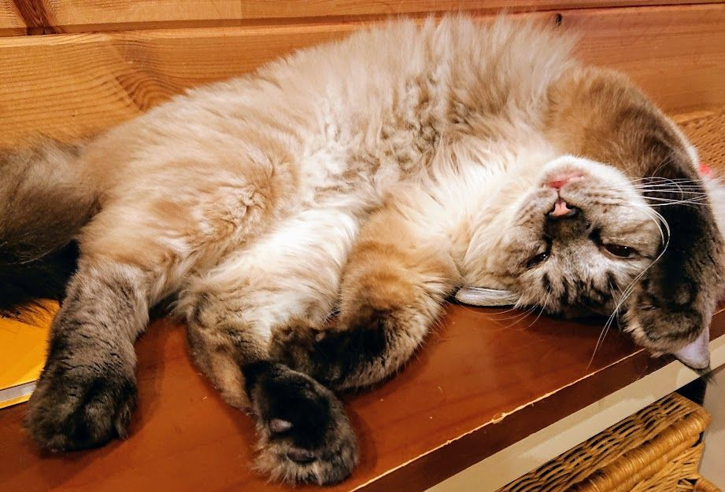
審査員コメント
〇モナさん救出劇の一部始終、ハラハラドキドキでした。猫は脱走しますよね。順を追った細かい描写が上手いですね。すごく臨場感がありました。
驚いた時、確かにウソって叫びますね。嘘じゃないのに。「嘘」のチョイスも面白いと思いました。
●猫が上がって降りられない話は聞いたことがあります。当たり前ですが、言葉が通じないので大変だなぁと思います。お疲れ様でした、みなさん無事でよかったです。ときどき、嘘？と思うようなことほど、いい思い出になったりしますね。
066：菅原道真を目指して「一日一嘘」励行
「正直者であれ」「嘘つきは泥棒の始まり」。私たちは子どもの頃から「嘘をつくな」と諭されてきた。でも私は嘘をつきたい！それも千年の伝説になるほどの大嘘を。
そもそも責められる嘘とは、どんな嘘なのか。
浮気をごまかす。お金の使い込みを隠す。偽りを信じさせる等々。何か不都合なことや悪事を隠そうとしたり、人を陥れるようと騙したりする嘘だ。つまり悪いこと、人を困らせることを目的にした嘘が悪いのだ。目的が悪いから、悪い嘘になる。ということは、目的が悪くない嘘は、悪くないのだ。
そこで私が励行したいのは、善悪を超越して展開する「健全な嘘」だ。例を挙げよう。駄菓子屋のばあちゃんが子どもからお代を受け取る。「はい、おつり三百万円」。これは嘘だ。でも悪い嘘ではない。しかも「はい、おつり三百円」って言われるより、何かほっこりする。これが「健全な嘘」だ。嘘をついた瞬間に消えてしまうほど、無害で無益で無意味なものだ。後腐れもない。でもなんかちょっぴりほっこりしてしまう。
スケールがデカい嘘や、理解のナナメ上すぎる嘘だと、伝説になることもある。私が最高位と讃える伝説的な「健全な嘘」は、飛梅伝説だ。
飛梅伝説とは、平安時代に藤原氏の陰謀で九州の大宰府に左遷された菅原道真の話だ。「東風吹かば にほひをこせよ 梅の花 主なしとて 春を忘るな」と別れを惜しんだ道真。すると庭の梅の木が一晩で京都から大宰府まで飛んできたという。
嘘やろ！と言いたくもなるが、多分当時から誰も困っていないし、その嘘で道真もちょとほっこりしたんじゃなかろうか。一生に一度でもこんな嘘がつけたら最高だ。ちなみに飛梅の木は今も太宰府天満宮に植わっている。
私も「健全な嘘」をついてみた。「ハーゲンダッツを横取りする奴は鼻毛が10センチ伸びる」...このレベルで千年後の伝説など片腹痛い。修行不足だ。伝説的な大嘘をつくため「一日一嘘」に励む。
...という嘘は伝説になるだろうか？
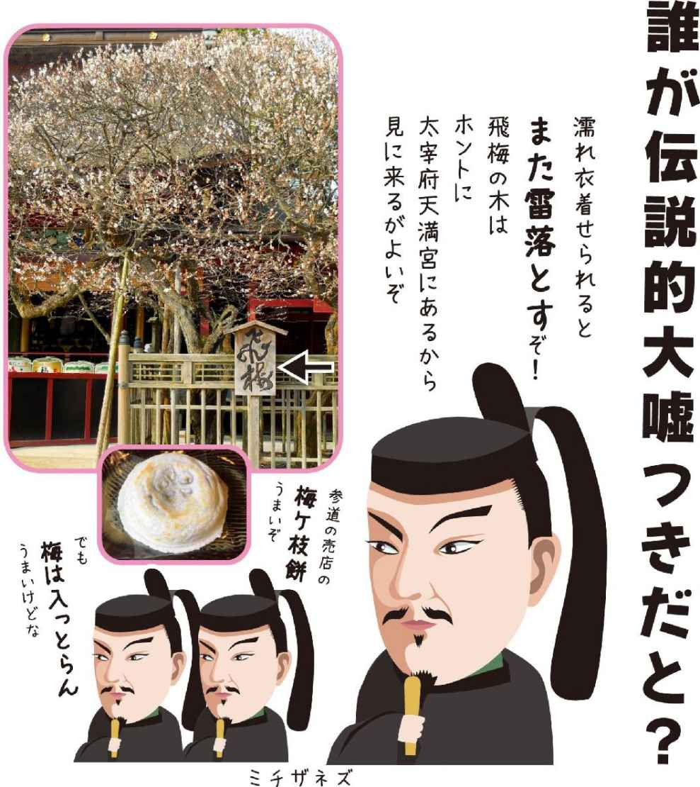
審査員コメント
●おつり三百万円に吹き出しました。こんなおっちゃん、いる。菅原道真の話、想いを伝えるためにあえてつく嘘もあるんだなぁと思いました。なるほど。
067：殺夫計画
1年前にフェイスブックを始めた。歳が近い路子とは同じアイドルのファンということで友達になった。一度だけライブで会っている。女性というのは同じ趣味同士、見知らぬ者と繋がることに敷居が低いらしい。
ライブは泊りがけで行くことが多い。夫は快く出してくれるがおそらく愛人の所に泊っている。夫と別れる事よりも、私は夫の豊かな年収で暮らす事を選んだ。しかし、妬みの感情を捨てきることはできなかった。
ライブの抽選に路子が外れ、私が当選した。落ち込む路子にメッセージを送った。「私の名前で代わりに行ってもらえる？どうしても行けなくなってしまったの。よかったらホテルも泊まって」彼女は二つ返事で承諾してくれた。
ライブ当日、まだ夫が寝ている間に家を出た。駅のトイレで着替え、まんが喫茶で時間をつぶす。愛人の家には眠くなる煙がタイマーで充満する缶がしかけてある。合鍵をコピーして忍び込むのは簡単だった。後は彼らが眠りこんだ頃、火をつけるだけだ。
夜になった。普段は履かない９センチのヒールを履き、金髪のカツラをつけ愛人のマンションへ行く。あいつがいない間に何度もシミュレーションしている。部屋に入ると夫と愛人がソファーで眠りこんでいた。テーブルには切ったチーズと空いたワインの瓶が散らばっている。持ち込んだ練炭にライターで火をつける。しかけの缶を回収する。非常階段から外に出て、公園のトイレでカツラを取った。路子からライブとホテルの写真が送られてきた。あたかも自分がいるかのごとくフェイスブックにアップし路子をブロックした。これで深夜バスに乗って早朝東京に着けばアリバイの完成だ。
さてと。
私はスマホをテーブルに置き、味噌汁を温め直すためにソファーから立ち上がった。夫に愛人などいない。空想の中で夫を殺すのが私のストレス解消法なのだ。夫が帰ってきた。
「ただいま」
「おかえりぃ」
私は夫の椀に毒を垂らした。
審査員コメント
〇夫に腹が立ったら私もやってみます。
〇綿密な殺夫計画でしたね。リアルでゾクゾクしました。ワクワクも。
ストレスの元凶である夫を自分で殺害しようという空想が凄い。
でもそれでストレスが解消できるとすれば、可愛いものだと思います。
私も夫の椀に毒を垂らそうっと。
〇はじめは本当に殺人するように思いドキドキしましたが、このような妄想をしながらストレス解消する方法もあるんだなと、最後に笑えました。メリハリが面白かったです。
●最後、怖い！空想だけじゃなかったの？こういう普通っぽい主婦が一番怖いんですよ、きっと。ぞっとしました。
068：『嘘』と真剣に向き合ってみた結果。
「嘘」ってなんなんでしょう？
調べたら、
【事実でないこと。人をだますために言う、事実とは違う言葉。】
と、出てきました。
でも。
それって、 視点によって変わる と思うのです。
同じ場所に立っていても
同じ事柄を見ていても
同じ作業をしていても。
相手にとっては事実 でも
自分にとっては嘘 。と感じたりしませんか?
私が体験した
【嘘】
を例に書こうと思います。
雇われとして焼き菓子を焼いていた私は
去年の暮れに自分の店を始めました。
その理由は
【お客さんや食べてくれる人に 嘘をつきたくない から。
身体にも心にも 本当に おいしいものを届けたい。】という思いからです。
なぜそれが雇われではできなかったのか？
それは
"無添加" と言っていてもその基準は曖昧で
怪しいものもたくさんあったから。
"新鮮" と言いながら、いつ焼いたかわからないのも日常だったから。
でも
信じて買ってくれて食べてくれる方がほとんどで。
それはお客さんに嘘をついている と" 私は" 捉えてしまった。
そしてその店で焼いてお客さんに届けるということが辛くなっていった。
その店がヤバいって？
いや。
そんなもの、少し見ようとしたら
たくさん世の中に転がっているのが事実です。
ただ 人それぞれの物差しの範囲が違うだけ。
でも それは 私の視点 からみた 嘘 であり。
相手の視点（お客さんや平気で売る人） では
本当のこと 。
だから相手に違うんです！嘘なんです！
本当はこうなんです！
って言ったて、
相手にとったら
ただの ありがた迷惑 なことで。
どっちも本当で
どっちも嘘。
どっちも悪くはないし
どっちも正解。
結局、
相手を介して出てきた
【嘘】というもの は、
その 嘘と向き合う ことで
自分の視点の位置を確認 でき、
自分はどうありたいか？ の気づきを得られる。
考えられる。
そして
その 【嘘】 は相手がいないと
感じないものだから
その【嘘】も
それを発した相手の存在も
起こったことすべてが
生きていくうえで、とてもありがたいこと だとも思うのです。
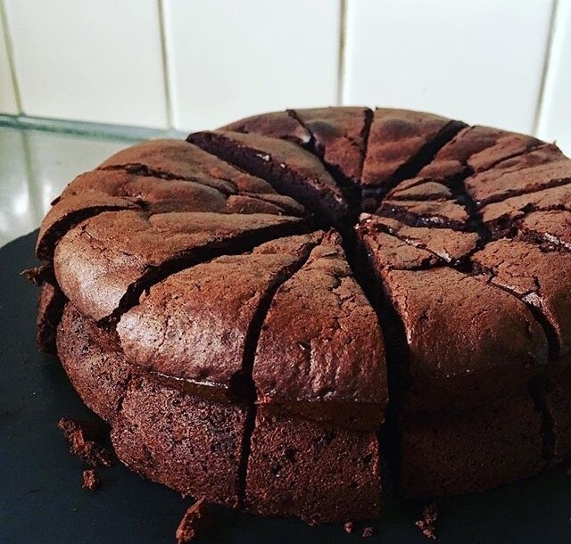
関連・参考URL：https://kotobank.jp/word/%E5%98%98-440021
審査員コメント
〇「嘘」という単語を見すぎて頭が混乱してきたわ。
●視点によって変わる、はそうだなぁと思いました。解釈がみんな違うからなんだろうなと思います。私もよく嘘つきと言われますが、嘘をついてるつもりはあんまりないです。すごく納得できました。
069： ぐちゃぐちゃになりたい。
かすみ
私は自分の気持ちを表現出来ない。
思い切り泣き叫ぶとか、怒りを表現するとか、
人と、真剣に喧嘩をした事がない。
見ざる言わざる聞かざる。そうやって生きてきた。それはたぶん、戸籍に養女と書かれてあったのを、小学生の時に見て、なんとなく、やっぱりな。と思った。育ての両親は、私を愛情たっぷりに育ててくれたのは、間違いないのだけれど、
両親に、反発して、口答えしたり、その反対の、甘えたりが、出来なかった。親子喧嘩は、した事がない。親に対しても、周りの人に対しても、感情を出せなくなったような気がする。
私は、どこから来たんだろう。中学も高校の時も、海を見ながら、考えていた。
そんな私でも、高校を卒業し、就職して2年目、グループ交際から、結婚する事になった。
グループの中で、次々に結婚が決まっていって、私たちも、そんな流れに乗ったと言える。
旦那さんになる人は、大好きだったけど、
プロポーズは無かったし、好きだよ。とか、愛してるよ。とか、言う人じゃなかったし、私も、感情を言葉にするのが苦手だったから、
それでも良かったはずだった。
子供たちを大切にしてくれるから、
ちょっとぐらい嫌な事を言われても、我慢できていたはずだった。
それで良かったはずなのに、
私以外の人に、愛してるよ。って
言ってるのを、直接聞いてしまった日から、
感情が、歪んでしまった。
なんだ、この人、愛してる。って言えるんだ。
なあんだ。
本当は、ぐちゃぐちゃな気持ちを、相手にぶつけていればよかったのだけれど、相手に、どうやって伝えたらいいのかが、分からなかった。
相手がなんて言うのかを、知りたくなかったのもある。そして、私は、笑えなくなった。
結局、私は、自分の気持ちと向き合うのから、逃げている。
自分の気持ちに、気づかないふりをして、
自分にも、周りの人にも、本心を隠している。
私はこのまま、仮面をかぶり、嘘をついて生きていくのだろうか。
心の底から、笑う事なく生きていくのだろうか。
誰か、助けてくれないか。私の心のこの闇に、
誰か、光を当ててくれないか。
愛してる。そう言って抱きしめてくれないか。
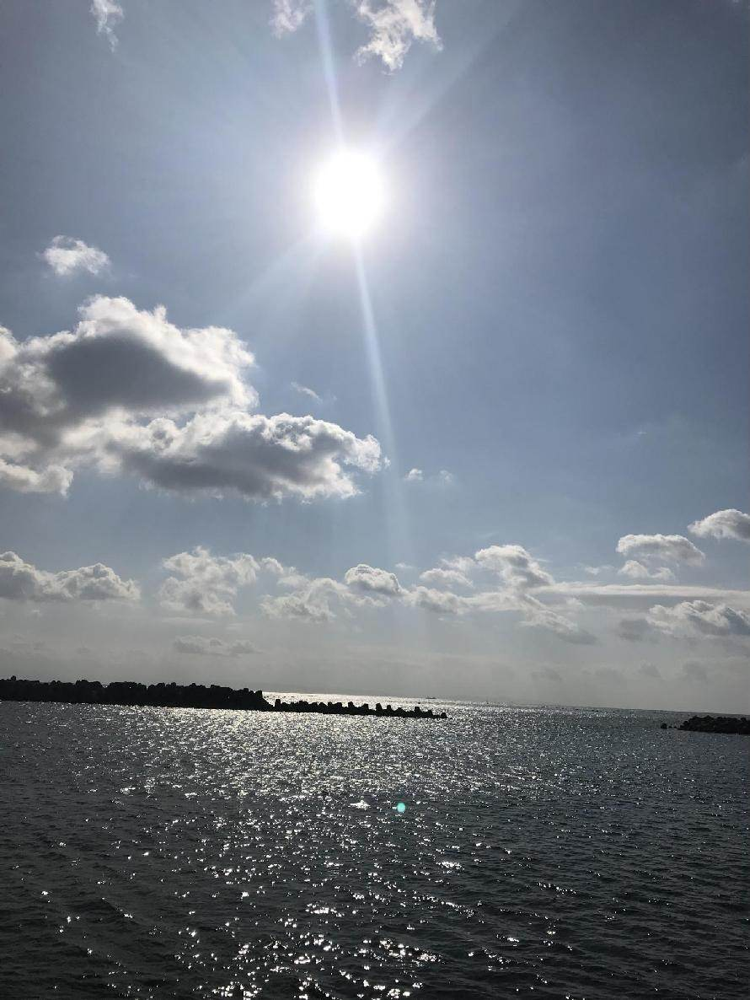
審査員コメント
〇共感します。私も同じタイプです。不器用で喜怒哀楽を表現するのが苦手です。
〇主人公のもがき振りが伝わり、何とかしてあげたい気持ちになりました。幼少期の遠慮が大人になっても現実世界に繰り返して投影されており、内の世界から外の世界に一歩でも助け出してあげくなりました。
●切なかったです。心の叫びがたんたんと書かれています。最後の呼びかけるような問いかけるような文章が胸に響きました。こうやって書くことで少しでも光になっていくことを願います。
070： 雨蘇 ―uso―
「サイテ―！浮気するなんて信じられない！」
―バシッ―思いっきりビンタする女。
パシャタッタッタ...。
雨の中を走り去る彼女。
ザァー...ザァー...ザァー......。
雨の中で自分のしでかした事の重大さに気付く..。
ほんの出来心とはいえ彼女を裏切ってしまった......。
早く彼女を追いかけないと見失ってしまう
...でも足が動かない..。
ザァ―...ザァ―...ザァ―......。
どんどん遠くなって行く..
気が付けば雨の中を歩いてひとり
家路に着いていた。携帯を見ても
彼女からの連絡はない。
電話を掛けようかどうか迷ったけど、掛けても出ないだろう。
シャワーを浴びて部屋でうなだれていると―ピリリッ―携帯の鳴る音が!?
彼女からかな？携帯を見るとそこには浮気相手からの着信。
出れない...。
携帯が鳴り止むとホッとする自分がいた。
彼女は今なにをしているんだろう？
泣いているんだろうか？
それとも自分と同じ様に携帯を持って電話しようかどうか迷っているのかな。
ザァー...ザァー...ザァー......。
雨の音しか聞こえない。
あれから何年経ったのだろうか。
今でも雨の音を聞くと思い出す苦い思い出。
あの時、彼女を追いかけていれば人生が変わっていたかもしれない。
あのあと浮気相手とも連絡を取らなくなり自然消滅。
ビンタして走り去った彼女はどうやら結婚して子供も産んで幸せに暮らしているとの事。
ザァ―...ザァ―...ザァ―......。
雨が降っていないのに雨音が聴こえる。
審査員コメント
●雨の音がずっと響いていて効果的でした。温度まで伝わりました。後悔の苦い想いも。今でも一緒に耳に残っているのでしょう。切ない話でした。
071：嘘のない世界
私は今日、嘘をついていい時代があった事を高校の現代史の授業で習った。
20XX年に嘘禁止法案が可決され、人体に嘘判別センサーを埋め込む義務が発生してから、今年でちょうど100年になるらしい。
嘘が日常的に話されていたなんて、今では想像もつかない。嘘をついたりつかれたりすると、激しく頭痛が走る仕組みなのだ。私は先生が資料として貸してくれた、当時の古い小説本を開いた。
"美雪は夜に、2年先輩の彼氏である剛史から近くの鴨川の河川敷に呼び出された。2人は川沿いのベンチに並んで座った。東山の向こうから満月が2人を青く照らしている。美雪は、剛史の横顔をじっと見つめていた。もうすぐ4月とはいえ夜の河川敷はまだまだ寒い。美雪が手に持っていたストールを肩にかけようと、剛史から視線を外した時「もう会いたくないのです、美雪さん」と声がした。
美雪は再び剛史を見た。剛史は川の向こう岸を見ているのか、横顔のままだった。
「僕は明日卒業式を終えたら長い旅に出る。帰りは年単位でいつになるかわからない。美雪さんは待つと言ってくれたけれど、僕はもう、あなたとは会いたくないのです」
なぜ、と聞きかけて美雪は聞くのをやめた。剛史の目が潤んだように見えたのだ。初めて見る表情だった。美雪はいやだと言う代わりに「なら丁度良かった。私ももう、あなたとは、会いたくは、なかったから」絞り出すような声で返事をした。剛史は美雪の冷たい手を両手で包み込みながら「月が、綺麗ですね」と言った"
頭痛がひどすぎて、私にはここまでしか読むことが出来なかった。しかしセンサーがこんなに反応しているにもかかわらず、どこが嘘なのか私には分からない。普通の別れ話じゃない？ 会いたくないって言ってるし。翌日先生にその事をいうと、今日だけだぞ、とセンサーの設定を旧人間モードにしてくれた。もう一度読むと、頭ではなく胸の奥がキュッと痛くなった。相手を想う嘘、か。元々人間にはこんな風に胸に天然のセンサーがあったが、痛みを感じないよう無視し続けた結果、今では退化してしまったのだそうだ。
審査員コメント
〇嘘に込められた人の感情の機微を、SF仕立ての話で表現されているところが、上手いと思いました。
〇行間を読むAIのようなものが出てくるとこんな世界になるのでしょうね。
●こういうのもSFになるんでしょうか、素敵です。嘘って人間くさいなぁと思います。最後まで好きなお話でした。
072：メッキと純銀
音楽業界の飲み会で、たまたま目の前に座った業界古株の男性がさっきから過去の栄光話をとうとうと喋っている。彼は出た腹を突き出して、あごひげを撫でている。古狸のようだ。
内容が耳になかなか入ってこないのは、周囲がガヤガヤとうるさいからなのか、心のどこかでそんな話聞きたないわと感じているからなのか、あやふやなところだ。
彼の両サイドに座っている彼の後輩たちは、その話の捌き方を知っているのか、適度に持ち上げてもてはやしている。
それを私は目を細め口角だけを上げて、黙って聞いていた。
古狸は、「そういやさー。あいつもさー、俺が育てたんだよね」
ずっと芽が出なくて最近になってメデイアでちらほら見かけるようになったミュージシャンのことだ。
「ヤツは いっとき病んでてさー。金もなくてね。それを俺が救ったんだよ」と鼻を膨らませている。
いかに手厚く面倒みたか、愛がどうたらこうたらとも話していた。
そろそろお開きという時になって、古狸が「みんなも昔お世話になった人にはちゃんと感謝しろよ」と締めくくった。
飲み会の帰り道は肩がずっしり重く感じた。
途中でふと、私が駆け出しの頃お世話になった先輩を思い出した。
私が仕事で辛い時相談に乗ってくれ、お金がないタイミングに誘ってきては「今日はパチンコで勝ったからなんでも好きなもん食えよ！」とご馳走してくれた。私は密かに先輩がギャンブルをしない事を知っていたし、先輩とて裕福とは言い難い状態だったのは、想像に安かった。
空腹に絶えきれず、先輩の優しい嘘に何度も騙されるふりをした。
その先輩に電話をしてみたくなった。
「今からそっち寄っても良いですか？」
「おー」と気の抜けた返事が返ってきた。
ロング缶ビール2本とアタリメをぶら下げて先輩のアパートに寄った。
呼び鈴を押すと開いたドアから、先輩の寝ぼけたような顔がヌッと出てきた。
「おーどうした？まぁ上がれや。」
手土産というには簡素なコンビニの袋を先輩に渡すと、先輩はちゃぶ台の側に座り、ここへ座れと言う意味だろう、座布団をポンと叩いた。
持参のビールを一本ずつ開けた。先輩は特に「何があった？」とも聞かなかった。
「アタリメ好物なの、覚えててくれたんやな～」
口からアタリメが突き出ている。
私はビールを一口飲んでから、顔を上げた。
咳払いをした後、私は先輩にお世話になった昔のことを改めてお礼を言った。
先輩は「へ？そんな事あったっけ？」と、大あくびした。
審査員コメント
〇哀愁漂う味わい深い作品です。こういう作品が好きです。
〇業界の古狸と先輩の人柄の対比を、タイトルに絡めているところが、上手い。メッキは剥がれ落ちますもんね。純銀の嘘は、まこと！？
〇純銀の先輩みたいな人達に一人でも多く会えれば幸せだなって思いました。
〇感動的な話でした。
人間関係も上手く表現できていて、世の中にはイイ人がいるんだな〜と思いました。
気持ちよく一票！
●古狸のような人、けっこういる気がします。こんな人に出会えたらいいよなぁと思うくらい、先輩いい人。男同士だからかかっこよく思えました。
073：きいろいちょうちょ
まゆこ
さとこは、朝からそわそわしていた。
今日は幼稚園の出席カードにシールを貼ってもらえる日だ。さとこの幼稚園では、月の登園日数により、皆勤で赤、１日休むと黄、２日以上休むと青の動物シールが出席カードに貼られる。
さとこは入園以来、毎月風邪で休んでいていつも黄か青のシールだった。友達の赤いシールを見て羨ましかった。先月やっと休まずに登園でき、今日は初めて赤いシールがもらえる日なのだ。
「さとこちゃん」
「はい！」
さとこはいつもより胸を張って背筋をぴんと伸ばし、出席カードを取りに行った。
「えっ？？」
さとこの出席カードには黄色いちょうちょのシールが貼られていた。さとこは目が点になった。
「さとこやすんでないのに、どうしてきいろいしーる？」
先生は優しく言った。
「さとこちゃん、ほら、ここ。１月１３日にお休みしたよ。」
「・・・」
さとこは頭の中が洗濯機のようにぐるぐるしていた。
家に帰るなり、母に聞いた。
「さとこ、１がつ、ようちえんおやすみしたの？」
「ああ、休んだよ。家族で城崎温泉に行ったよね。」
母は何事もなかったように答えた。
そういえば、幼稚園に行くつもりだった日に、今日は幼稚園休みだよって言われて出かけたことが頭をよぎる。
「ママがようちえんおやすみっていったよ。あかいしーるもらえなかったよ。うえーん。えーん。うそつきー！」
さとこはこらえていたものが一気に吹き出て泣きじゃくり、母をどんどんと小さなこぶしで叩いた。母は黙ってさとこの頭をやさしく撫で続けた。
あれから３０年。さとこ自身も母になった。
当時、父は休みなく働いていて、やっと取れた休日を家族で過ごそうと温泉に連れて行ってくれたんだよね。
世間的には母の嘘はNGかもしれないけれど、かけがえのない貴重な時間、家族みんなの心に残る思い出、本当に本当に大切にしたいこと・・・母の嘘はいつしか私にとっての最高のプレゼントになっていた。
審査員コメント
〇幼い頃の気持ち、お母さんの気持ち、どちらも分かりすぎて辛い。でも、大人になって分かっていく、親の愛に感動した。
●かわいらしい思い出。大人にとっては普通でも子供にとって嘘が大きく感じることもあると思います。こういう嘘と付き合っていくこともまた大人になるということかもしれません。
074：ウソから学んだマコト。
たまつくし
人はいつからウソを覚えるんだろう・・・。
私はいつウソを覚えたんだろう・・・。
気づいた時には、ウソをついていたのかな！？
もしかしたら、最初の嘘は、
自分でウソだと気付いていないウソだったかもしれない。
1番最初のウソは誰についたのか？！
それを今思い出せと言われても、４０歳の私にとっては
とても至難の技。
だけど、今なんとなく感じることがある。
きっとそれは、
当時の私が、家族のためについてしまったウソだったかもしれない
ということ。
「こう言えば親が喜んでくれる。」
「これをすれば親が褒めてくれる。」
「こう言えば家族が和む。」
・
・
・
逆を言えば、
「こう言えば親に怒られずにすむ。」
「こうすれば、親の嫌な顔を見ないですむ。」
って思って毎日を過ごしていたんだよね。
幼いながらも常に私は、こんなことをずっと考え続けていたなぁ。
今、思い出すことはほとんどなくなったけど、ふと考えた時、
家族の笑っている顔より、眉間にシワの寄っている顔の方がはるかに
スッキリ思い出せるなぁ・・・
でもそれってなんだか寂しい。
その経験があり、今がある。
あの頃はただ家族の雰囲気や、その場の空気がよくなるから
なんとなくついていたウソ。
色々学んだ今だからこそ言える！！
あの頃、家族の機嫌とりのためにやっていたウソは、
実は、自分の機嫌とりのためにやっていたウソだった。
審査員コメント
●これは大きな気づきだなぁと思います。人のためのようで自分のためということはよくあるような気がします。いいか悪いかは別として気づいていくことは大事なことのような気がします。
075：嘘
さくっちのろっと
サクッ。
私は階段から雪の積もっているホームに足を降ろした。青森の雪はフカフカだ。ホームは電車が通ると雪が粉砂糖のように舞っている。キレのある寒さに、ゴトゴトと電車の音。４年前、京都から夫と初めて帰省した冬から、いろんな想いが巡ってくる。４年前は珍しく雪が少なかった。実家に到着すると、庭の小さな雪山に数本の一升瓶がキレイに並んで待っていた。お義父さんのお気に入りの銘柄達である。夜には十数年ぶりに集う家族と時間を忘れて語り合った。翌朝、雪かきを楽しみにしていた私に、夫とお義父さんが玄関にある少量の雪で、雪かきのお手本を見せてくれた。その翌年だった。お義父さんの癌が発覚したのは...。
車窓からポツ一。ポツ一。と民家の灯りが目の前を横切る。
京都には、お義父さん行きつけのおでん屋があり、そこではいつも、家族の自慢話を聞いていた。夫が到着するまでの限定で。直接言えないのが親子なのだろう。
ポツ。ポツ。ポポポポポー。民家の灯から街の明かりになってきている。
今朝、出張に出たばかりの夫から電話があった。「今から弘前に帰る。」お義父さんが危篤である。実家に到着し、お母さんからお義父さんの本当のことを聞いた。2ヶ月前から入院を勧められ、1ヶ月前には余命を告げられ、一週間前には「延命治療はしない」と主治医に伝えていた。入院すると、もう家には帰れないのを感じたのであろう。最後の最後までやりたかった仕事をして、最後の最後まで愛したお母さんに心配をかけまいとしていた。自分の限界を知った時、どんな事を思ったのだろう。どんなことを感じたのだろう。最後の最後まで「大丈夫」「私は強い」という「嘘」を貫いていた。
ひどい「嘘」
冷たい「嘘」
残酷な「嘘」
困った「嘘」
ややこしい「嘘」
かわいい「嘘」
すごい「嘘」
優しい「嘘」
強い「嘘」
人生いろいろ。嘘もいろいろ。私は初めて心が温まる「嘘」を知った。
最後の時。お母さんがお義父さんの手をとり、「お父さん。まだまだ話をしていないことがいっぱいあるでしょ。」と言っていた。
まだまだ「嘘」は潜んでいそうである。
実家に戻れば、庭に雪に埋もれた一升瓶が待ってくれていた。
審査員コメント
●雪深いところの雪は生活の一部だと思います、伝わってきました。自分に言い聞かせる嘘もまた嘘になるんですね。人はやっぱり嘘からは逃げられないと思いました。一升瓶、素敵です。
076：つかない嘘
スガ ケイト
「お前と結婚したら、毎日楽だろうな」
口癖のように「優しいし、怒らないし......」と数え挙げては、愛おしそうに頬を寄せた。
お高い時計がご自慢の二つ年上の"ダーリン"と付き合って半年。いつも身なりのいいスーツを着こなして、外車もどきの変な車を乗り回す男だ。そしてイマイチ、言葉の選び方が失礼で、頼みもしないのに、よくしゃべる。猫好きで自分でも猫を飼っているくせに、うちのかわいいネコりんを「うわー！気色悪いけど、かわいいね」と言い放った。彼がしゃべるたびに、脳裏で"赤"を入れ続けてしまう。日本語が変なのは編集魂が許さない。「なんでこんな男を好きになった？」
でも惚れた方が負けなのだ。長い髪が好きでスカートが好きで、男がいないと何もできない女が好き。太ったらだめだし、色気がないと抱く気にもならないそうだ。それはわたしの手本となり、赤点は絶対に許されなかった。
わたしは普通の女になろうとした。元来ヘビーメタルを愛し、鋲とヒョウ柄と革製品にまみれてきた女が、突然コンサバに身を落とすと、周囲にすぐばれる。「あたし、恋してましてよ」と看板を掲げて生きているようなものだ。そんなの構うもんか、わたしは心の底からダーリンを愛していた。
その晩も明け方近くになり、帰ろうと仕度する背中をベッドの中から眺めていた。決して泊まることはない。「この人は結婚してる」っていう勘に気付かないふりをして、わたしが朝まだきの空を見上げてきたことをダーリンは知っているんだろうか。
ドアを開けたダーリンの背後から腕を回して、「ねぇ、結婚してる？」とつぶやくと、「そんなこと言ってたら、もう会えなくなるよ」と言いながらキスをして、「俺、嘘はついてないでしょ？結婚してないって、言ったことないよ」と笑った。つかない嘘、なんてずるい。
"さよなら"のデートは、最上級のヒョウ柄と革ジャンで。「嘘つき！」というダーリンに快哉を叫んだ。
審査員コメント
〇可愛い復讐。
嘘ともつかない、演じていた自分を晒すということ。
誰も傷つけないけれど、傷ついているのは彼女だけだったのかも...。
●惚れた方が負け、確かにそうなんだろうな。つかない嘘、ずるいけどこれは気持ちがわかるような気がします。ずるいけど。最後、好きです。切なく爽快。書いてないけど風が吹いた気がしました。
077：kiss me please
唐沢なつみは、朝からベッドの周りに張り巡らされたプロレスラーのポスターを片端からはがしていった。もうすぐ、付き合って２年の恋人、森山武が家に来るのである。
武が自宅に来るのを拒んでいたのは、自分がプロレスオタクで、一時、女子プロ研修生だったこと、その上、実家は資産家でお嬢様大学出身だと嘘をついていたからだった。
「女の子の部屋の割には殺風景だね」
武は、なつみが、料理アプリを見ながら作ったビーフシチューを絶賛、二人は赤ワインでほろ酔い気分になった。
「なあ、今度、俺の両親に会ってみない？」
なつみは、自分の心臓の音を探した。
嬉しくないわけがなかった。でも、本当のことを言ったら嫌われてしまう...でも、「言うなら今」、酒の力を借りたなつみは雄弁だった。
「そ、そんなこと...俺は気にしないよ」
言葉とは裏腹な、武の力強い腕で引き寄せられ、二人はベッドに雪崩れ込んだ。
リングの上...唐沢なつみこと、デンジャー夏美は、宿敵、ファイアー裕子から、顔面にアリアットを食らった。ボキッと歯が折れる音が夏美の脳天を貫いた、と同時に...武の声が聞こえた、愛しい人の声が。
「君の笑った口元、その白い歯が好きだよ」
武の優しい声が歓声にかき消され、デンジャー夏美は、リング上で号泣、口元からは大量の赤い血が流れだしていた。
翌朝、目覚めたなつみの隣に誰もいない。飛び起きて、洗面所のドアを開けた。そこには、バシャバシャと顔を洗っている武と、入れ歯の入ったグラス...武がなつみの誕生日にくれたバカラのグラスが。
「おふぁよう...」
歯がないなつみの言葉に、武は笑った。
「とりあえず、キスでもしようか？」
一巻の終わりとはこのことだ。だが、同時にもう一つの嘘を図らずも、告白できたことになつみは安堵していた。
審査員コメント
〇彼女の過去も、今の彼女をも、大きく包みこむような彼の大らかさが素敵で、彼女の飾り気のない素にもちょっと吹いてしまいました。幸せになってー！と物語に入り込みました。
●タイトル、好き。お話も好き。こういうのほっとします。最初は嘘つくよなぁと超共感してしまいました。素敵な二人。うらやましい。
078：バングラデシュの一喝
中宇縁
私にとって初めての海外は、バングラデシュだった。現地で働いている日本人の医療現場を視察し、今後の仕事に生かすという目的があった。首都ダッカから、バスに乗り、船に乗り、小さな南部の村に着いた。はるばる日本から医療団がやって来るというので、赤ちゃんを胸に抱き、緊張した面持ちの母親が、大勢集まっていた。世話人の一人が「お母さん方に何か質問してください」と私を促した。私は「子育てしていて、思うことは何ですか？」と聞いた。最初のお母さんが「我が子が、元気に育ってほしい」と答えた。次のお母さんも次のお母さんも、そのまた次のお母さんもみんな同じ答えだった。そして、あるお母さんがひときわ大きな声でこう叫んだ。「どこの国でも我が子が元気で育つのが、親の願いでしょ！」私を一喝した。200以上の瞳が、一斉に私を見つめた。このシンプルな答えを私はいつから忘れてしまったのだろう。帰国してから、私は異国での視察で得たこと、学んだことを自慢気に語った。先進国に生まれた私が、開発途上国の話をする。ただバングラデシュのお母さんからの一喝があったことは、誰にも言っていない。それは、私の中の小さな嘘である。
関連・参考URL：http://yawakaze.org
審査員コメント
〇恵まれた自分の境遇と普遍の母の愛を感じた。
●母の立場としては初心に帰らされた想いです。元気でいるという当たり前に感謝だなぁと思いました。見えなくなったときはそこに戻れる自分でありたいと思いました。ありがとうございます。
079：記憶喪失
なんで昨日言ったことと違うの？
「そんな事を言った覚えはない」と夫が言うので「昨日の何時頃にこういう話が始まって、私が貴方にこう返事をして、その結果、貴方がこう言ったからこうしたんじゃないの」
そんな説明を毎日繰り返す。その結果、最終的に夫が言うのは「そんなつもりで言ったんじゃない」
このやりとりが２０年続いた。
そして、私は２００６年９月６日、記憶喪失になった。
朝、起きたら過去の記憶がほとんどなかった。
原因は、むろんストレス。
というと「私も嫌な記憶なら消したい」と言う人がいるだろう。
ロマンチックな映画やドラマの見すぎだと思う。
日本語の記憶もかなり消えたから、必死で集中しないと、相手が何を言ってるのかわからないという事態になった。
しかも、９月６日より前の記憶が曖昧になっただけではなくて、新しい出来事も覚えたそばから消えていく。京都大学医学部附属病院に何度か入院したが治らなかった。
この話をしたら、たいていの人が嘘だと思うでしょうが、本当です。
審査員コメント
〇インパクトのあるお話でおもしろかったです。
〇マジか！？ということをサラリと書いているから、真実味が増す。あっさりなのに深くて迷ったまま放っておかれるのは、嫌いじゃない自分を確認できました。すばらしい。
●テレビや映画ではよくありますが、実際にとなると想像を絶する日常なんだろうと想像しました。忘れたいことだけ忘れるなんて便利なようには人はなっていないのだと思いました。それにもきっと何らかの意味があるのだろうと思います。
080：サンタクロースの真実
20年ほど前、私たち夫婦は３人の幼い娘たちと３Kの狭い公団住宅に住んでいた。
暖炉に繋がる煙突もなければ、大きなクリスマスツリーを飾ることのできるリビングもない。クリスマスをどう演出するか、工夫と腕の見せどころであった。
車があれば大きなプレゼントを密かに買いに行ったり、品物を車に仮収納しておけるが、我が家には車がない。買いに行くのも、家の中で隠しておくのも一苦労だ。
クリスマスプレゼントは、代筆の‵サンタからの手紙‵とともに、彼女たちの枕元に置くのが我が家の慣例であった。長女が３歳頃はイブの夜も楽勝だったが、幼稚園に行くようになると、下２人の娘は寝付いても、彼女はなかなか寝付いてくれない。親サンタはミッションを果たさないと眠りにつけないのである。
家中の電気を消して、我々も寝たふりをする。しかし、翌日仕事の父サンタが先に寝てしまいそうになる。「寝かせてなるものか」と私はサンタコスチュームを取り出し、彼を叩き起こして、帽子と上着を着せる。コスチュームと言ってもプレゼント購入のオマケだから、不燃布のちゃちな造りである。長身の彼が着ると、上着の裾から寝巻がはみ出し、ズボンはブルー。何とも不格好だったが、ミッションを決行した。
子どもが寝てくれないと役目が終わらないことに懲りた親サンタは、翌年から部屋のドアノブにプレゼントをかけた。
狭いベランダに積もった雪の上に‵足跡‵を付けて、証拠作りをした年もある。その甲斐あってか、その後もサンタはやって来た。
末娘が小学校３年生頃のこと。前年のクリスマスプレゼントの本のことで「本屋にあった」と、私はうっかり口を滑らせた。娘は「あれはサンタさんの...」と言いかけて、私の目を見つめる。「しまった」と慌てたが、後の祭りだ。「サンタさんから指令を受けて買いに行った」と、しどろもどろに言葉を繋いだ。
娘たちの所にいつまでサンタが来ていたのか、今となっては定かではない。
審査員コメント
●サンタのミッション、親の立場になるとめちゃくちゃ大変だと実感します。夢を守ってあげたいけど、買うのも隠すのも大変。そろそろカミングアウトしたいと本気で考えています。まだ早いかしら。
081：嘘と素直
「ママのウソつき！」3才娘の言葉に、ついムッとしてしまった。どこでそんな言葉を覚えたのか。しかも、嘘をついたのは彼女のほうだ。弟のベビーせんべいを割ったのを目撃した私が、何で割ったのかと聞くと、弟がしたと言う。「愛ちゃんがしたじゃん、ママ見たよ」と伝えたところ、飛び出てきたその言葉。「嘘はついてないよ」と答える私に、「ウソついた」と返す娘。何度かそのやり取りをしているうちに、だんだんとイライラしてきた。夕方の忙しい時間帯、私はつい「もう愛ちゃん嫌い！」と言ってしまった。(あ、本当に嘘をついてしまった・・・)心の中では怒りの気持ちと、後ろめたい気持ち、それから、"次は何て言ってくるだろう"という興味が渦を巻く。だが、次の瞬間、「ママも嫌い！」というトゲトゲしい言葉が、私の心を突き刺した。私が送ったマイナスの言葉に対する、当然の報いだ。
そもそも、娘にとって"ウソ"とはどんなものなのだろう。夕飯の準備をしながら、娘が嘘をつくのはどんな時かを考えてみる。
①怒られたくないとき。②大人の気を引きたいとき。③遊びの延長。こんなところだろうか。そういえば、娘と話をしていると、子どもの思考は、「想像の世界」と繋がっているなと感じることがよくある。例えば、ブロック遊びをしている最中に突然「これなーんだ？」と聞いてくることがある。私が適当に考えて出した答えに、いつでも「せいかーい」と言ってくれる。彼女の中で本当の"正解"があるのかはわからないが、こちらを喜ばせようと演出してくれているのだろう。
そんなことを考えていると、今日の私の嘘はとても軽薄で大人気なかったと、反省の気持ちでいっぱいになった。
夜寝る前、娘をぎゅっと抱きしめて、素直な気持ちを伝えた。「今日、嫌いって言ってごめんね。本当は愛ちゃんのこと、大好きだよ」と。すると、「愛も、ママ大好きだよ」と、最高の言葉がかえってきた。嘘のないやさしい言葉が私の心を温かくしてくれた。
審査員コメント
●我が家も嘘が飛び交っております。嘘と分かっても見ぬふりしたり、嘘との付き合いは一生だなぁと感じます。ママ大好き、これは本音でしょう。心温まります。
082：令和前夜〜あなたの知らない世界〜
半側空間無視（はんそくくうかんむし）、
三年前の冬の日、父は倒れた。
味気ない薄い薄いクリーム色の救急病院の一室で、兄と私は並んで「多少障害が残るかもわかりません」と医者に説明を受けた。
脳血管が詰まる、または出血すると、細胞に血液が廻らず、その部位は壊死する。
死んだ部位が担っていた機能や役割は不能となる...「高次脳機能障害」と呼ばれる症状が様々あるが中でも「半側空間無視」は、食事の時、左側のものを残す。車椅子で移動すると左側の壁にぶつかるので、左側にケガが絶えない。
それは、決して見えないのではない。
左側をみるように促すとその時は見えているのに、左側のものが認識しづらいのだ。
受傷後、父の生活変化は相応の努力や苦労が強いられた。しかし人は「やらねばならない」状況において、アレコレ考えている余地がないことは一番安穏かもしれない。
（早くに母のいなくなったこの家で兄と私が独立せずにいた理由に気づかなかったとはいえ）結果として、環境は大きく変わらず、父は自分の努力や苦労に集中していられた。目の前のことをやるしかないからこそ、苦労も努力も同じ色に見える様だったし、新しい価値観に押し広げられる苦痛は無認識に見える。
さて、そんな渦中であった２年前、私は子供を産んだ。
厳しい父のことだ。かつてであれば、詳細不明で未婚の母だなんて、どれほど責められたか。しかし、父は、そのことについて多くは聞かず語らず静かだった。
そして、なにかと身体を気遣ってくれたし、
生れてからは、不出来ながらも子供の世話をしてくれる。
まぁね、詳細不明に、未婚・・・であれ、パパにとって、初孫だもんね。
まぁね。しかも、「二人分」のね。
そう目で言い合って、父が「我らが子」をあやしている背姿を右前方に確認し、兄と私は並び、そっと顔を見合わせて、静かに、指を絡ませる。
そう今。父の左側後方、父の知らない世界で。
審査員コメント
〇重くなりがちな状況を柔らかく書き終えていらっしゃるところが素敵だなと感じました。
〇顛末にビックリ！こんなに短編なのに、途中に伏線もあり、話の展開の仕方がプロだと思いました。
〇令和全然関係ないしw そんなオチで来ると思ってなくて、不意を突かれた。
●そうくるか、という感じ。最後までわかりませんでした、すごいと思います。うまく書かれていると思いました。背筋がすーっとなるラスト。
083：願いごと
フィンランドのサンタクロース宛に手紙を出すと、返事が返ってくるサービスがあるらしい。
私が七歳の頃のクリスマスイブの日、クラス中がプレゼントの話で盛り上がっていた。女子に人気なのはリカちゃん人形だった。私の隣の席の男子は、大きなため息をつき、顔を歪ませながら呟いた。
「サンタなんかいるかよ。俺はいつも欲しいものを手紙に書くけど、いっつもお菓子だし」
彼は私の方を向き、顎をしゃくるようにして話しかけてきた。
「お前んちは？」
私は目が合って一瞬戸惑った。
「え？」
彼は目を大きく見開いて私に訊ねた。
「お前サンタ見た事ある？」
「・・・ないけど、いるってお父さんが」
それを聞いた彼は眉間に皺を寄せ目を細めた。
「バカだなお前。それ信じてんの？」
私は口ごもりながら彼に訊ねた。
「いつもお菓子って、それ好きなお菓子？」
彼はのけぞってから大きく息を吐いた。
「そうだけど。俺は新品のグローブ欲しいんだよう」
私も、サンタさんへの手紙に願い事を書いて、お母さんに渡してある。
「サンタさんへ。プレゼントはいりません。お父さんとお母さんと手をつないで一緒に寝たいです。お願いします」
その夜、私は布団を頭まですっぽりと被り、無理矢理目を閉じた。胸の鼓動が段々と大きくなって耳に近づいてくる感じがした。
スズメの声がして目を開ける。枕元に赤と緑の包み紙が見えた。体を起こし、包みを開ける。中には魔法のマコちゃんのペンダントと、綺麗な封筒が一緒に入っていた。封筒を手に取る。封を開けて中の手紙を見た。
「お手紙ありがとう。お父さんとお母さんは忙しいから一緒に寝られないそうです。マコちゃんのペンダントでがまんしてね。いい子でね。サンタより」
台所の方でお父さんとお母さんの話し声がする。ふつかよいかあ。
私は手紙を封筒にしまい、枕元に置いた。布団に潜り込む。鼻の奥がつんとした。布団はまだ少し温かかった。
関連・参考URL：http://www.jf-santa.org/santaletter.html
審査員コメント
●私は3人姉妹ですが、3人とも同じリカちゃん人形をもらったことを思い出しました。すでに私は小学校高学年。3人一緒っていくらなんでも無理があると思ったのを覚えています。が、口に出しては言えませんでした。ほしい物がモノじゃないこともありますね。ちょっぴり切ないクリスマス。
084：瑠璃色のライ
バブル経済が完全に崩壊し
「不景気だ」
「少し前は羽振りが良かった」
そんな会話が定着しだした頃、私は大阪の繁華街ミナミでホステスとして働き出した。
お客様にお酒を注ぎ、
話をすることが仕事だった。
ホステスは本名ではなく、
源氏名と呼ばれる芸名を使う。
年齢を誤魔化している人も多かった。
嘘をつくことに罪悪感はなく
嘘が当たり前の世界だった。
お酒が強く、接客業が向いていたのか、
こんなに楽で、高額時給が貰え、
なんていい仕事なんだ。
働き始めの頃は、本気でそう思っていた。
年齢的にも、精神的にも、
ホステスを続けて行くことに
限界を感じ始めた頃、
働いていたクラブの社長が突然、失踪した。
「ミナミで、知らない人はいない」
そう言われていたほどの社長だった。
不景気の煽りを受け、
お店の売り上げも大幅に落ち、
閉じる店も少なくなかった。
同伴ノルマがあるのはもちろんだが、
担当ホステスがお客様の売り上げの責任を
持つ口座という制度があった。
サインで飲んでいたお客様が飛んだら、
売掛金を担当ホステスが
全額払わないといけないシステム。
作り笑いが板につき、
顔で笑って心で泣くホステス達。
長い付き合いでも、
羽振りが良さそうに見えても、
お客様の懐具合が、
いつ、どうなるかわからない。
『狐と狸の化かし合い』
『金の切れ目が縁の切れ目』
皮肉好きのお客様が冗談で口にする諺は、
笑えないが、笑うしかない。
私は、お店が閉店したのを期に
付き合っていた男性と結婚することに
なり、ホステスを辞めることが出来た。
当時、結婚適齢期と言われた
25歳になる前の春の頃だった。
煌めくネオン
賑やかな繁華街の
空気に触れると
ホステスをしていた頃を想い出す。
人々の概念、常識、色んな事が
ここ四半世紀の間で、
随分変わったように思えるが、
お客様とホステスの関係は
変わないはずだ。
今も、さまざまなドラマが
生まれては、消えているだろう。
審査員コメント
●ここまで嘘編を読んできましたが、やっぱりもう嘘なしでは人は生きられないなと痛感させられます。生きるためなのかもしれません。考えさせられました。
085：嘘
滝口ゆかり
日常生活は嘘に溢れている。意識的なものもあれば、結果的に嘘になってしまったもの、誰かのためを思ったもの。嘘と一言で済ませても、その種類は多い。
嘘をつかれたことに気づくまで数年かかったことがあった。テレビの地デジ化がニュースになるような時期だった。たまたま会った友達に「地デジになればテレビを消していても、緊急地震速報が流れると自動的に点くんだよ。地デジって凄いよね」と言われた。そういう話題に明るくなかったため、単純に「へー。そうなんだ。地デジって凄いな」くらいにしか思っていなかった。数年後職場で地震が起こったときに地デジ化されている事務所のテレビが点かず、あの話は嘘だったとやっと気づいた。その手の嘘をつくタイプの友達ではなかったため、彼女もまた誰かの嘘を信じきって話していたのだと思う。嘘の連鎖になっていて恐ろしい。
つくつもりのない嘘をついてしまったこともある。海外旅行先でのことだった。電車に乗ろうとしたとき、隣にいた見知らぬ人に英語で行先を聞かれた。同じ方面に向かう予定だったためYESと返答したのだけれど、乗ってから反対方面行きだと気づいた。ほどほどに満員電車で、さっき尋ねてきた人がどの人だかわからない。謝ることも出来ず、悪いことをしてしまったなと思いながら「方向間違えた」と少し大きめの声で友達と話しながら下車をした。さっきの人が日本語がわかる人でありますように、と願いながら。でもきっと、その願いは通じていなかった。
ついた側は申し訳なく思い、つかれた側は動揺してしまうのが嘘なのかもしれない。どうせ嘘をつくなら周りがハッピーになれる嘘がいい。
審査員コメント
●嘘の連鎖は怖いですね。気づくのも遅くなるでしょうし、悪気もない分やっかいだと思います。私も同じようにYESで間違えたことあります。後でゴメン！と思いました。気を付けないとなぁ。
086：忘れたと言わせて
私は忘れ物の多い小学生だった。
国語の時間に教科書を忘れ、書道の時間に筆を忘れ、音楽の時間にリコーダーを忘れた。ある時は翌日の持ち物の準備を忘れた。何をしに学校へきたのか、わからなくなることもあった。「このままではいけない」。そう思った私は、『忘れ物をなくす』ことを強く心に決め、先生の話をよく聞き、連絡帳に翌日の持ち物をしっかり書いて、寝る前には必ずチェックをするようにし、それを実行した。
ある日、先生が言った。「明日の図工でハンガーを使うので、持ってきてください」。何に使うかは言わなかったが、『忘れてきた』ために授業に参加できない事態だけは避けたかった。木製、プラスチック製、先が360°回転するもの、曲げて形を変えられる針金のもの、と家にあったあらゆる種類のハンガーを手提げ袋に詰め込んだ。
翌日、万全の態勢で臨んだ図工の時間。さあ何でもこい、と手提げ袋からハンガーの数々を取り出そうとしたその時、クラスのみんなが机に出したのは、先週完成したと思っていた版画だった。
「今日は先週の版画に、色を塗ります」と先生。どうしよう。私、ハンガーだ。
「忘れた人ー？」
私は手を上げた。
「昨日言ったでしょ、持ち物ちゃんと連絡帳に書いた？」
「忘れました」
どうかそういうことにしてほしい。私をそっとしておいて。
単に持ってくるのを忘れただけの人が、何倍も格好よく、まともに思えた。
手提げ袋からそれらを出してしまわなかったことは幸いだった。
目を閉じれば、今でも切にそう思う。
先日、子どもを寝かしつけている時、3歳の息子が聞いてきた。
「お母さんはどんなこどもだったの？」
子どもの質問に答えるのは時々難しい。
「毎日お友達ともたくさん遊んだし、幼稚園も小学校も楽しくて、大好きだったよ」
私の中で『暗黒時代』と呼んでいる私の子供時代だが、今は、そういうことにしておきたい。
審査員コメント
〇うっかり爆笑してしまいました。そして、子どもなりに忘れ物をしないようにとの必死さにキュンとして、可愛らしい過去のようにも思えました。
〇タイトルがとても素敵でした。
●私も忘れ物多い人でした。忘れたときのあの気持ち。子供には忘れるなとは言うけれど、私もひどかったなぁと懐かしく思い出します。頑張っていても忘れることはあります、きっと大丈夫。と自分にも言い聞かせます。
087：騙すということ
自分を騙しながら生きていたことに気付いた。自分を騙して生きることが普通になっていた。思い返してみると小学生の頃からかも知れない。
それは小学校三年生の時の事だった。自分から母親に空手を習いたいとお願いして習いはじめた。道場に通うのにバスで通っていた。初めはとにかく楽しかった。何をしても初めてで、教えてもらった事がちょっとでも出来ると空手の師範にほめてもらえるのがうれしくて仕方がなかった。立ち方から歩法、そして型へと進んで行った。楽しいので上達はかなり早かった。半年で黄帯、一年で水色帯と昇級試験のたびに他校の同年代をどんどん追い越していった。
同じ小学校の友達がその道場にはいなかったので僕はいつの間にか彼らの嫉みの対象になっていた。
稽古が終わりバスを待っていると、特に仲良くもない他校の同年代から後ろから軽く蹴られたりいやがらせをされる事があった。はじめはそのうち、飽きて辞めるだろうと思っていた。しかし、内容がどんどんエスカレートし道着を踏まれたりとイジメの対象になっていった。空手が上手くなるのが、昇級するのが楽しかった。でも、道場には行きたくなかった。そんなときに昇級試験があり次は茶帯だった。茶帯の次は黒帯で、その頃は初段になって黒帯を着けるのが目標だった。昇級試験は無事突破し茶帯を師範から手渡されたけど、うれしさ半分、彼らからどう逃げるかを考えるの半分だった。
その日の帰り、彼らにいやがらせをされるのが嫌で、彼らに茶帯を投げつけてしまった。彼らは面白がってその茶帯を足で踏み、泥水に浸け、ボロボロにして僕に投げつけた。その時僕は笑顔でボロボロの茶帯を受けとった。頭の中ではこれでいいと自分を納得させながら、心の中は泣き叫びたい気持ちだった。
次の稽古の日、師範に茶帯を失くしましたと嘘をついた。師範は何も言わずに新しい茶帯を手渡してくれた。その時、僕は初段になる価値は自分にはないと感じた。その帰りからいやがらせをする他校の同年代と一緒になっていやがらせをする様になった。そんな自分が嫌だった。でも後戻りはできなかった。もう、空手を習う意味はない。そう思うとあっという間に空手から遠ざかってしまった。
数年後、友達とたこ焼き屋の前で話していた。たこ焼き屋の前に大きな白い車が止まった。窓が開き、たこ焼き食うか？と声をかけられた。声の方を見て瞬間的に直立不動でハイと答えた。小学校時代の空手の師範だった。師範は車から降りて来てたこ焼きを三個買ってそのうち二個を僕に手渡し、元気でなと行って車に乗って行ってしまった。何も伝えられない自分に腹が立ったが何もできなかった。
それ以降、自分から何もしないで人の顔色をうかがってから自分の行動をするようになった。自分自身がどうしたいかではなく、他人基準で物事を判断し、他人基準で行動し、他人基準で感情を表現して来た。そんな生き方で三十年以上は過ごしている。人の顔色を見ては都合のいい言葉を思っていないのに口に出し、楽しくもないのに笑っていると何が本当の自分なのかどれが自分の気持ちなのか、自分はどう感じているのかが分からなくなってくる。でも自分を分からなくしているのも自分と知っているだけにやるせない気持ちがつのる。
こんな自分をなんとかしたいと思いはじめた時、自宅の近所に居合道の道場を見つけた。四十歳を超えて新しいことに挑戦することは難しい。でも、ここで挑戦しておかないと最期の時に後悔すると思い、僕は思い切って居合道の門を叩く。
審査員コメント
●自分がどう感じているのかわからなくなる、わかる気がします。今でも油断するとそうなってしまいそうになる自分がいます。門を叩いた僕は、きっと新しい世界をも拓いていく、そんな気がしました。
088：右足の小指
「あんたらのお母さんは産まれた時、右足の指が1本多かったから。」と母は真顔で言った。それは「お母さんの小指、なんでそんな形なん？」と小学生になった３人の子どもたちに聞かれたその時で、私も初めて聴く話だった。
私の右足の小指は変だ。物心がついた頃にはもう、ケロイドのある皮膚に２つに割れたちいさな爪がついていた。「親指が両側にあるの？」とか「芋虫みたい」と言われた。赤ちゃんの時、階段から落ちて扉の隙間に小指が挟まったと、母は説明した。その話を素直に信じ、約40年間そう話してきた。
小さいころはサンダルもゴム草履も禁止だった。「車が来たとき脱げやすいしあぶないやろ？運動靴なら安全やけど、臭くなるから靴下を履いてね」と母は言った。
大人になった私は裸足になるのが嫌だった。幅が広く、左足よりサイズが大きい。サンダルからはみ出る小指がかっこ悪い。かわいい靴が履きたいのに、小指が当たる部分にタコができ痛くて歩けない。今思えば、そこに指があったのだから仕方の無いことだった。
父はヒロシマの人だ。原爆が落とされた日、学徒動員で呉の港にいた。終戦の日、大人たちは戦争が終わったから家へ帰れと言った。市街地がどうなっているのか誰も知らなかった。島根との県境にある実家への帰り道、父はそこを通って、被爆した。だから私が産まれ、右足の指が多いのを見た両親は心配し、すぐに切ってもらったらしい。そして決めたのだ。私が結婚して孫が五体満足で健康に成長するまで言わないと。まだ差別があたりまえにあった時代だった。父は原爆手帳を寝たきりになるまでもらわなかった。「おかげで証人がもう誰もいなくて苦労した」と母の話は終わった。
ああこれは本当に大きな愛だ。今だから受けとることができる。ありがとうお父さんお母さん。私は今、この小指が好きだ。そしてもう平気で裸足になれる。
審査員コメント
〇簡潔で読みやすかった。嘘は悪いだけではなく愛であることは、他の作品にも沢山出て来たけれど、本当にそうだと思う。
〇ノンフィクションなのか、フィクションなのかわかりませんが、心に残りました。
●人と違うということは、小さいころは特に気になって劣等感を抱きがちなのかなぁと思います。いくら大人が説明しても納得できないものかもしれません。大人になってそれが愛だと思えたならこれ以上のことはないのだと思います。
089：共謀
福士乃蒼汰
離れて暮らす60歳になる母が、手術をすることになった、と電話があった。子宮摘出をするそうだ。家から車で30分ほどの、地域の大きな拠点病院で、婦人科系では評判のよい先生が担当で、数日入院するが、大したことはないとのこと。
予定通りに手術は2時間ほどで終わり、摘出した子宮は、ガンかどうか調べるために細胞検査に回された。手術前から、99.99%ガンではないから大丈夫、先生は言い切ったと、母は強調していた。入院中、私は会社が終わってから毎晩、病院に行った。4人の相部屋の、窓の側の右奥が母のベッドで、夜は薄緑色のカーテンで仕切られた。上げ膳据え膳の入院生活を、楽しんでいるように見えた。
私がベッドの脇の丸イスに座った時、母がつぶやいた。
「気がかりやねん」
深刻そうな顔をするので、検査結果をそんなに気にしているのか聞こうとしたら、続けてしゃべりだした。
「ガン保険を掛けててな」
今回の検査の結果が、ガンでなければ、当然保険金は下りない。安い掛金の掛捨て保険を、長年払ってきた。なんとか今回の結果がガンにならないものかと、先生にも保険の事を持ち掛けたそうだ。その時も先生は、ガンである可能性はあっても0.001%もないと、腕組みして唸っていたらしい。
「無理やろなあ」
母はため息をついた。
部屋の外で、甲高い女の人の声が、誰かの名前を呼んでいるのが聞こえた。
病院の昼ごはんの配膳中に、部屋の入口に先生が来て、母に向けて、満面の笑みで両手で大きな丸を作っていたのを見た。検査結果がガンだったことを、わざわざ病室まで知らせに来てくれたのだ。あれを見た時は万歳三唱したと、退院してから、母は何度も話した。
「いい先生やったわ」の後に必ず付け足した。
「お母さんは子宮ガンやったから、あんたも気をつけなあかん」
会社の健康診断の問診票に
「両親祖父母がガンと診断されたことがあるか」
の欄があった。私は迷わず丸をした。
「該当なし」
審査員コメント
●うーん、なるほど。こういうことあるのかと思いました。気がかりなのもわかる気がします。腕組みして唸る、そりゃそうだよなぁ。
090：嘘はナニイロ？
「真っ赤な嘘」という言葉がありますが、何で「真っ赤」なんだろう？って
思ったことありませんか？調べてみたら、「真っ赤」は「明らか」の「赤」だそうですが「嘘」には「真っ赤」よりも「真っ黒」の方が合うなぁと思ったりして。
じゃあ、「嘘」に色を付けたらどんな感じなんだろう？
「青」は落ち着いた感じですごく緻密に計算されているクールな嘘。
「黄」は楽しい感じを含めながらの笑って言える軽いジョークな嘘。
「ピンク」は可愛らしくて憎めない、ちょっとLOVE混じりの嘘。
「オレンジ」はあたたかい心遣いをしている感じの優しい嘘。
「紫」は心の裏側が読めない複雑に入り組んだミステリアスな嘘。
「緑」は嘘なんだけど、なぜか気持ちの疲れが和らいでホッとする嘘。
そして、一番クリーンな感じのする「白」。これが実は一番怖い「嘘」かも。
すごく誠実で嘘なんてつかないと思わせて、まさかのどんでん返し！なんてことが！
そうなると「嘘の上塗り」や「二枚舌」だなんてことになったら
ついた嘘の色はいったい何色になるのやら......
ミックスされた「嘘」、レインボーな「嘘」ってどんな感じ？
取り返しがつかないことになってしまうかもしれないけど、
案外「嘘」が「嘘」でなくなって本当にことになってしまうかも。
まさに「嘘から出た実」！
そう思えば「嘘」は人生のスパイス、駆け引き的なものなのかもしれません。
私の「嘘」はベビーピンク。
あなたの「嘘」はナニイロですか？
関連・参考URL：語源由来辞典
http://gogen-allguide.com/ma/makkanauso.html
審査員コメント
〇嘘の色を考えると楽しくなりました。ありがとうございます。
〇色から嘘の種類を考えてるのが面白かった。
〇嘘の色ってものを考える切り口が素晴らしいです。
筆者の着眼点に一票！
●色を持ってきたところがまたおもしろい。リズムよく書かれていて心地よかったです。自分の嘘を振り返ると黒っぽいものしか思い浮かばない。反省。
091：嘘をつくって素晴らしい
「足が痛いから、抱っこして」
半泣きの娘が、僕を見上げる。
よしよし、と言いながら娘を抱き上げ、幼稚園の教室に向けて歩く。
後ろから、誰かが呼ぶ声が聞こえた。
振り向くとそこには、仲良しの女の子。
「降ろして！」
と言うと娘は、お友達目掛けて走り出した。
足がもつれて、転びそうになるのも構わず全力で駆けていった。
まだ小さい君は、時に涙まで見せながら嘘をつく。
「お腹痛いから、もう食べれへん」
「おやさい、いっぱい食べたよ。あっちで」
"あっち"ってどっちだろう？
「パパなんて嫌い」
「ママなんて、嫌い」
そうやって言いながら、ぎゅって抱きついてくる。
彼女の言葉に、彩りが生まれてくる。
勘違い。
間違い。
冗談。
想像。
妄想。
そして、嘘。
もう、自分の心を表す手段は、泣くだけじゃない。
運動会の日。
緊張で足がガクガクしていた君。
「大丈夫？」と聞くと
「だいじょうぶ」って強がってた。
突然、ひとりで大声で歌を歌い始めて、自分を奮い立たせてたね。
その晩。
「わたし、大丈夫じゃなかったんだよ」
って、ベッドの中でぷりぷり怒ってた。
小さくても、女心ってむつかしいんだなぁって感心した。
料理中、誤って指を切っちゃった僕を心配そうに覗き込みながら、
「だいじょうぶ？失敗しちゃたの？」
「うん」
「でも、パパかっこよかったから大丈夫だよ」
って、なぐさめてくれたね。
強がりも。
優しさも。
とっても大切な、嘘。
娘が嘘をつくたびに、僕は嬉しくなる。
彼女の言葉が、とても鮮やかに彩られていくから。
今日も君は目をキラキラと輝かせながら言う。
「ようちえん、爆発したから行けへんで」
審査員コメント
〇女の子のつく嘘にキュンキュンしました！最後は思わず爆笑です！
〇揺れる女心を見事に描いた力作だと思いました。
〇最後の一言が可愛すぎました。子供の幼い時期はあっという間。日々一瞬一瞬を大事にしたいなと思いました。
〇子どもの嘘は、大胆不敵で優しくて規模が大きい。面白かった。
〇娘の嘘に感心する主人公に、女性として救われるような気持ちになりました。女心に、こんな優しい視線を持つなんて。可愛い娘も、大きくなると「おとうちゃん臭い」とかなるんですね。女は残酷な生き物です。どうかお許しください。
文章も文体も素晴らしかった。
ラスト、やられた！最高です。
●最後の嘘は思わず吹き出しました。子供の嘘はときどきはっとすることもあるような気がします。強がりも優しさも、大切な嘘、なんだか救われたような気がします。
092：嘘にも躾を
LU
きっと多くの人は親にも、学校でも「嘘をついちゃいけません」と教えられた。
小さい頃のその刷り込みのおかげで、人は嘘をつくとき「これでいいのだろうか？」と疑い、自分を責める人もいれば、言い訳をして嘘を固定化しちゃう。「嘘」が当たり前で「嘘」に守られてる人もいるわけで、一概に「嘘」というのは悪いものではない・・・・とそう思いたい。
聞いた話だと、人は一日に２００回嘘をつくらしい。
ちょっと多すぎない？と思うけれども、仕事上でつかなければいけない嘘、大きく話しちゃった嘘、もっといえば家ではだらしないのに、外に出ればきちっとした自分を見せるのも大きな嘘？なのかも
唯一許される嘘と言えば恋愛初期。人は恋愛を始めた途端、大嘘つきになる。「私、料理が好きで...昨日ロールキャベツ作っちゃって、けがしちゃって」なんて今時ありえないけれども、好きな人に好かれるための嘘は人をかわいくする。
が、それも本当に最初だけ。
付き合いが長くなれば、一度ついた嘘は重くなり、「あなた、前こういったじゃない」と疑いが始まる。
だから、やっぱり嘘はよくないし、信頼もない。
せいぜい自分が嘘をつかない人間でいれば、まだそれはいい。どうせなら嘘をつかなくもいいぐらいの「生活」を、人間は持つべきなのだ。
が、ちょっと今日はこんな考えがあると思った話を聞いてもらいたい。
いっそ「嘘」にルールと正義を作ってみてはどうだろうか。まず、ついちゃいけない嘘は学歴詐称なんかで使われる「固有名詞」。「俺トーダイ」なんかはあとにひけない。
せめて許される嘘なら「相手が前に進めるための嘘」
とりわけ「伝言」というのはその人のセンスがでるものだと、私は思う。
「あの子にこれやっといてって言っといて」に「〇〇さんが、あなたにこれをしてもらうと助かるって言ってたわ」と言い、「なんなのよあいつ！私に仕事押し付けて」と愚痴を聞かされたら「それって信頼があるからじゃない？」と相手を諭させるのもまた立派言い回し、ならぬ嘘・・・
嘘だらけの世の中でも、センスも躾もある嘘がつけるなら「粋」な生き方である。
審査員コメント
●読んでいて本当にごめんなさいと思うくらい、私はたぶん嘘ついてると思いました。自覚があるから200回よりもっとついてるかも？いやそんなに？もはやもう嘘なのかどうかわからなくなってきました。混乱。
093：嘘と記憶
「人間の全ての行動は記憶に左右される」という視点で、ウソを語りたいと思います。
嘘は作り話であり、英語において、その作り話を単語のＳＴＯＲＹを充てますが、その中で代表的なものが詐欺行為でしょう。いろんな詐欺が後を絶ちませんが、その詐欺を例に記憶プロセスをモデル化したグラフ※ＭＩＧを使って説明します。
相手に覚えてもらうには好印象を与える必要があります。その場合、グラフの①第一印象②興味③特徴に重点を置きます。
まず①の第一印象ですが、ここで好意を得るか否かで詐欺の正否がかかってきます。この第一印象において、まず気を付けなければならない事、それは美意識です。本物は美意識に優れると言われます。逆に偽物は美意識を有しないと言えますが、その美意識、今回は外見、身なり、理性が言葉遣い、要はバランス感覚が秀逸である事と捉えてください。美意識に優れると人に好感を与え、よい記憶として残り結果、信頼性に繋がります。汚い格好で理性のない語りかけをされても説得性に欠けます。
因みに、どっかの国のパクリ製品やキャラクターにも通用する視点です。
次に②の興味は、相手の興味を焚き付ければ焚き付けるほど話を聴いてくれます。架空話を持っていくには相手の懐に入り込まなくてはならないからです。
この時そのターゲットの興味や関心事を入念に設定する必要があります。
最後に③の特徴ですが、要は特徴的で他にない提案、差別化が計られたモノほど人々は惹きつけられます。このとき簡潔にもっともらしい理由を述べること。
この３要素が完璧にリンクすることで体験型劇場は完成し、虚構の期待感を携えターゲットの記憶は創造されるのです。
もうお気づきと思いますが、この詐欺話、マーケティングやプレゼンにも通じる手法です。記憶と嘘の関連性、ご理解いただけたでしょうか？
詐欺話の対義に「嘘も方便」があります。人に役立つ「作り話」が出回ってほしいものです。
※ＭＩＧ：記憶プロセスをモデル化したグラフ。マインドマップの開発者トニーブザンが作成および提案。マインドマップの基本原理でもある。
関連・参考URL：The Most Important Graph in the world
Tony Buzan with Jennifer Gooddard and Jorge Castaneda
Proactive Press UK
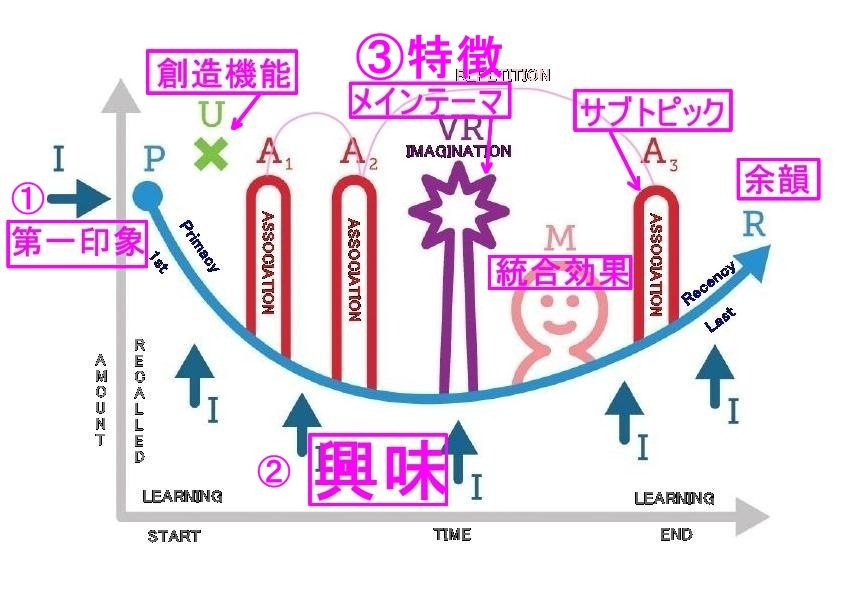
審査員コメント
●なんだかすごい話を読んだような。マーケティングにも通じるとはなかなかですね。使ってみたいようなみたくないような。
094：自分に嘘をつかない生き方を教えてくれた街
自分に嘘をつかない生き方って、どう思うだろうか。
私にとってはこの"自分に嘘をつかない"ってある意味の指針でもあり、
コンパスでもあり。幸せ（Happiness）の秘訣でもあり。
自分に嘘をついている時って、大体、何かしら上手くいってないな～と感じる時です。
私がこのこと（自分に嘘をつくということ）について向き合ったのは、１６歳の夏。
場所はオーストラリア・メルボルン。
あの魔女の宅急便の時計塔のある街でのことでした。
私が高校を選んだ理由、それは学力でもなく、部活でもなく。
プールがない、そして海外留学がある、この２点だった。
親にも学校の先生にも言ったことがない。
ここでハジメテ明かす、高校を決めた理由。
本当、何がしたかったんだろう笑 中学３年生の自分。
ただ、やっぱり間違ってなかったんだって。
帰国して気づくわけです。
そしてコレが、私のHappinessの秘訣へのストーリーとなります。
正直、嘘をつくことが当たり前のように行われている、悲しい今の社会。
「その髪型にあってるね！！」とか、遊びに行きたくないのに行っちゃったり。
人に悪い評判を与えるような陰湿な嘘や、その人の思い込みや決めつけから来る、悲しい嘘。
傷ついているのに平然を装ったり、思っていることを言葉にしなかったり、感情にふたをしてしまったりの、自分への嘘。
自分への嘘、それに向き合ったのが、オーストラリアのメルボルンという街でした。
集団意識や協調性が大事な日本。
学校でも家庭でも褒められるために、気に入られるために、嫌われないために。
そして、みんなと一緒にみたいなことがプログラミングされてしまい、
変わっているのは格好悪いとか、みんなと同じじゃないとなんかおかしいとか。
みんなと同じ。それが当たり前だと思ってたし。
でも、心のどこかではみんなと同じの意味がわからなかったりもしたし。
中学生時代、縁があって英語のスピーチコンテストに出る機会をいただいた私は、その時に海外の考え方に触れる機会がありました。
そこから、この目で確かめに行くという夢（もはや野望ｗ）を心に、中学生時代を過ごしました。
オーストラリアのクラスメイト達は、本当にいい意味で普通をか、当たり前とかがなくて。
"で、君はどう思うの？"みたいな。
本当この、感覚に最初は慣れなくて、しかも英語で伝わるように話せなくて、３日でホームシックになりました。
家があんま好きじゃないくせに、帰りたいなんて思うんだなって思ったのもいい思い出。
いい意味で基準がない。本当に。
そんなホームシックの最中に、次の質問が来るわけです。
彼らに全く悪気はないの。でも、当時の私には追い打ちをかけるのか！！って思ったのは確か。
『あなたの夢はなんですか？』
日本では当たり前に、職業をそこで答えると思うんだけど。
当時、私がなりたいと思っていた、"病棟保育士"と告げた。
もちろんそれもありなんだけどさ・・・。悪くないんだけどさ・・・。みたいな反応。
そこで教えてもらいました。
それは"仕事"でしょって。
仕事は夢を叶える手段であって、夢への通過点にあるものだって。
夢とは自分のなりたい姿、ありたい姿のこと。
自分の幸せ、中心が何であるのかをよく理解したらいいんだって。
とはつまり、自分に嘘をつかないという生き方。
自分のなりたい姿、ありたい姿、それに対して、嘘をつかない生き方をすることが、
夢を叶えるということ。
とにかく、なりたい姿やありたい姿があって、そのために今何ができるのか、何をすべきなのか、何に一生懸命になるのか。
シンプルだけど、とても大切なことが自分に嘘をつかないことなんだなということを、考えた、メルボルンという街。
審査員コメント
●夢と仕事、違うっていうのはすごく大事だと思います。私はずっとわからなくて答えられない人でした。適当に嘘をついていたような気がします。小さいころから夢について考えられる子供が増えればいいなぁと思います。
095：嘘という名の鱗をつけて
私は「嘘」という名の鱗を一枚一枚重ねあわせていった。
それが自分という本体を一瞬で崩壊させるということを知らずに...。
最初についた嘘という鱗は軽く繊細なプラスチックのような素材のものだったかもしれない。小さい嘘だった。
子供というのは、親や友達から嫌われたくないために人に合わせる嘘をつく。
それが次第に大人になり、嘘をつくのに違和感がなくなり、少しの嘘なら平気になる。
そう、嘘に慣れきってしまうのだ。
軽く繊細で壊れやすかった鱗が一枚ずつ付いていくことでより強靭な鱗と化していく。
私が水商売をはじめたときの話だ。
ここには"早坂 真由美"という自分は存在しなかった。名前、年齢、住んでいる場所、職業、まず４つの嘘を一気についた。
しかし、その４つの嘘だけでは済まされないのがこの世界。
好きな人、本当にやりたいこと、家族のこと、プライベートなことは嘘で塗り固めた。
それが自分を守る術だとここではそう教えられたからだ。
長い間、私は早坂真由美ではなくなった。
見せかけの私、本当の私じゃない私に大金を支払うお客様、そんな私を攻撃をする人。
嘘の鱗で固められた私の実体はどこにいるんだろう。きっと鱗が剥がれ落ちたら私はすっからかんの空っぽな人間なんだ。
そんなことをずっと思っていた。
この"嘘"という鱗の鎧が剥がれ落ちてしまったら、私というものが保てなくなる。
それが怖くて嘘をつき続けた。
しかし、人という生き物は不思議なもので、本当に自分が望んでいることと実際にやっている行動が伴わないとバランスを崩し始める。見事に私はそれを体感する日がきた。
ずっと私は素直に生きたかった。
正直に、誠実に、まっすぐに。
嘘で固められている人には同じような人しか寄ってこないのだ。それを知ったとき、私は一気に嘘の鱗が剥がれるような出来事が強制的にあり、嘘の鎧を脱いだ。
鎧を脱いだ瞬間、私の人生は軽やかになった。
私は本来の生き方を手に入れたのだ。
審査員コメント
●誰しも同じような思いをしたことがあるのかもしれません、共感しました。嘘の鎧を脱いだ後、軽やかになった、でほっとしました。きっと大事なものが中には入っていたのでしょう。
096：プライド
恋人に嘘を吐いた。
５キロ、体重をサバ読んでしまった。
彼は「分かった」と笑顔で言って、数日後可愛らしい包装紙に包まれた綺麗なタイツをくれた。
いつも寒そうだから、と優しく笑って。
気持ちは凄く嬉しいが、自分の吐いた嘘に気づく。入るだろうか、まずそこが大問題だ。
部屋で恐る恐る穿いてみる。入った。良かった...。ホッと胸を撫で下ろす。
綺麗な柄のタイツだった。
「今度穿いて行くね、ありがとう」と彼にLINEをして、鏡を見た。
「ちょっと痩せたかも？」
嬉しくなり調子に乗って隣町に出掛けてみたのが大きな間違いだった。
大きなお尻が邪魔してずり落ちてくる。
ちょっとどころじゃない。結構ずり落ちてくる。このままじゃまずい、慌てて駅のお手洗いに駆け込む。
「まずい...危なく痴女になるところだった」
街中でタイツが足元までずり落ちたなんてなったら恥ずかしいではすまない。
足が細いからずり落ちてきた、ならまだ可愛らしいが、お尻が大きくてずり落ちてきたなんて恥ずかしくて洒落にならない。
やっぱり正直に体重を言えば良かった...深く溜息を吐いたが時はすでに遅かった。
一旦腰まで持ち上げて履き直したが、歩く度にずり落ちてくるのが分かる。その度にお手洗いに駆け込んだ。
「いつかダイエットが成功したら姫抱っこしてあげるね」
彼は通話口で変わらず優しく笑った。
貰ったタイツがお尻が大きいせいでずり落ちて大変だった、とは中々言えないが、今の状態で細身の彼が姫抱っこしたら彼がギックリ腰にでもなるんじゃないか。
「ごめんね...実は体重を嘘ついて軽めに言ったの...」
「そうなんだ？いいよ、健康なら150キロ位までなら」
痩せよう。彼女は改めて誓った。
審査員コメント
〇タイツをずらしたことはないけど、似たような経験がリアルにあります（笑）
●タイツが落ちてきたら歩けないよなぁと笑ってしまいました。想像しておかしくなりましたが、本人は死活問題ですよね。どうか痩せられますように！
097：ウソから視えたマコト
わたしはずっと、自分に嘘をついてきた。
思わず、【かっこ笑い】
を各文末に書きたくなるぐらい、嘘をつきまくって生きてきた。
元々物心ついた時から、
『いい子』な自分を見せるのが上手い方だった。
こういう風に言えば、
親や先生は褒めてくれる
友達は好きになってくれる
と分かった上で言動することが多かった。
それが苦ではなかったし、
周りの人が自分に優しいのは幸せなことだった。
ただ、今思えば【舐めて】いたのだ。
自分のことも周りのことも。
幸か不幸か、わりと【器用】だったのだ。
上手くやれていることに【調子に乗って】もいたんだろう。
だから、ホントの自分と向き合うということをほぼしてこなかった。
チャンスはいくつもあった。
大きなものをあげるなら、
高校選び、大学選び、仕事選び。
各ターニングポイントで常に
自分に嘘をついてきた。
向き合うことを避け、【損得勘定】に【逃げて】きた。
ただ、こんな自分でも、
子どものころから、
【時を忘れて熱中】することがあった。
それが
【お絵描きや色塗り】をすること。
なにかしら【作品】をつくること。
それをしているときは、ただ【ありのまま】だったし、
自分の描いたもので誰かが喜んでくれるのを見ると、とても嬉しかった。
これは【ホントの自分】だったのだと思う。
このことに気づいたのは、
大学で、最も興味のないはずの社会学部に入り、マスコミ関係のゼミに入り、
【やりたいこと】ではなく、【できること】【安定していること】で選んだ、システムエンジニアという仕事を4年経たあとのこと。
つまり26年はかかったのだけれど。
いま、ネイリストという職業に出会って、【やりたいこと】で周りの人が幸せになっていく【いま】が、こんなにも心温まるのは、
きっと今までの嘘があった【おかげ】なのだとも思うのだ。
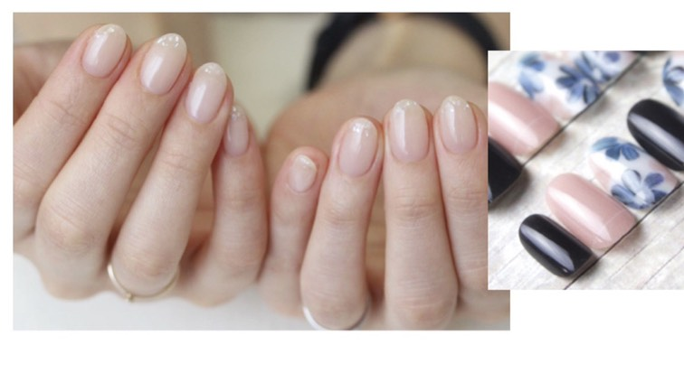
審査員コメント
〇自分も いい子 演じてました！
本当の 気持ちに 早く気づかれて 良かったですね。
●26年かかっても気づけたことは大きいと思います。一生かかっても出会えない人もいると思うので。回り道も必要な道だったのだと思います。よかったです。
098：結婚７年目。旦那に秘密が出来てしまった。
結婚７年目。
旦那に初めて「嘘」をついてしまった。
まさかの
今流行りの「昼顔（不倫）」ネタか？
いや・・・。
旦那が飲み干したと思われるノンアルの空き缶が
部屋に置いてあってさ、
あたし、
漫画読みながら
鼻のゴミをとってたんだけど、
捨てる場所がなくて
その空き缶にいわゆる「鼻◯そ」を捨てたの。
だって空き缶だったから。
そしたら
旦那があたしが漫画読んでる部屋にやってきて
いつものように楽しそうにソファーに座り・・・
「ひいっ！！！！（心の声）」
その空き缶・・・
飲み始めたんだわ！！！汗
どうやら空き缶じゃなかったらしいっ！！爆
「飲んでる途中の缶」
だったらしいっ！！！爆
思わずおもいっきり吹き出しちまったわっ！！！爆
旦那は旦那で大笑いしているあたしに
「どうしたの？漫画楽しい？」と
ニコニコしながら呑気に聞いてくるから
気の毒！！爆
「あははははははは！！！この漫画、
めっちゃうけるわ！！！」って
あたし、初めて旦那に嘘ついたよね。笑
まあ本当は・・・
「今、飲んだノンアル、塩味強くなかった？」
って聞きたかったよね！！！
これを読んでしまったみんな！！
毎日いろんなことがあるかもしれない。
理不尽なこと。悔しいこと。腹立つこと。
でも思い出してくれ！！
知らずに
あたしの鼻く◯飲んでしまった
あたしの旦那よりは
みんな確実に幸せだ！！！
あはははははははははははは！！
とってもスキャンダラスな
ネタを読んでくれてありがとうっ！！
週刊文春もびっくりなセクシーネタで
ゴメンっ！！！
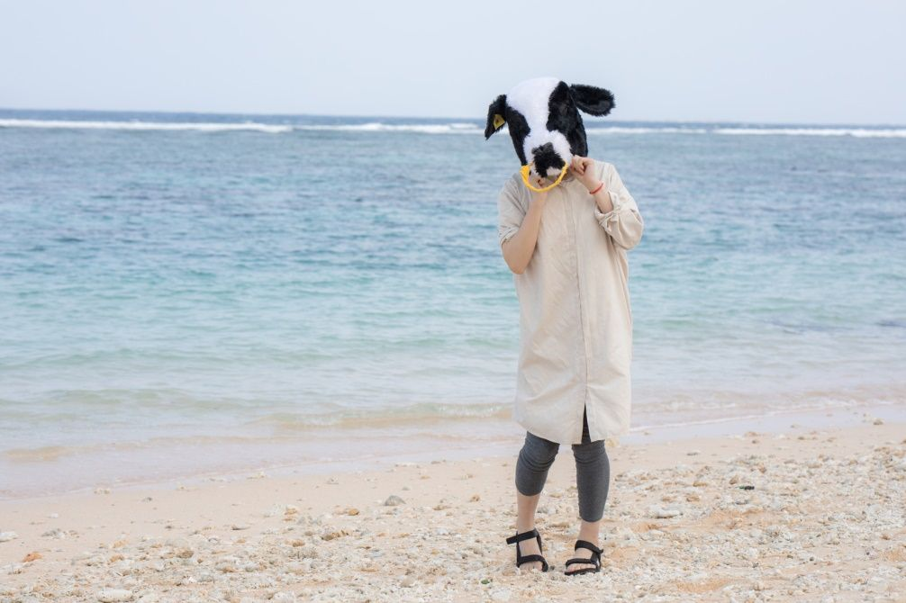
審査員コメント
●もう、こういうの大好きです。よくぞ書いてくれました。一緒に笑わせてもらいました。辛いことがあったときに思い出すことにします。バレなければいいんです、たぶん。ね？
099：明るくハッピーな嘘
小野田 隼人
人の人格は、自己認識と他者認識で形成される。
私が私自身をバカと認識することと、
他者が私をバカと認識することが相まって、
バカな私が出来上がる。
自己認識と他者認識のどちらかを変えれば、
自分を変えることができる。
ただし、他者認識からは変わらない。
他者認識が変わることを期待して待っているのは時間の無駄でしかない。
変えるならば、自己認識である。
自己認識は自分の意思で変えられる。待つ必要はない。
自己認識を変える方法は、「嘘」。
自分に嘘を付くことである。
自分は頭が良いと嘘をつけばいい。
嘘をつく相手は、自分自身である。
決して他人ではない。
頭が良いと嘘を付き続けることで、自己認識を変える。
自己認識が変われば、行動が変わる。
頭がよくなる行動をするようになる。
自己認識が「頭が良い」に変わったかどうかの確認は、勉強しない時間が気持ち悪くなるかどうかだ。
まるで枕元にゴキブリが這っているかのような気持ち悪さを感じるかどうか。
ゴキブリがうろちょろしていたら、大概の人は眠れないはずである。
勉強しないとゴキブリがうろちょろしているくらいに不快で眠れなくなる。
さて、自己認識が変わり、行動が変わると、結果が変わる。
テストで点数を取れるようになる。
結果が変わると、他者認識も変わりだす。
自己認識が「頭が良い」。
他者認識が「頭が良い」。
そうだとしたら、その人はもう「頭が良い」。
まずは、自己認識を変える。
変える方法は、自分に嘘を付くこと。
嘘の内容次第で、自分の人生は如何様にも変えられる。
「自分に価値がない」なんてマイナス思考の嘘は意味がない。
明るくハッピーな嘘をつこう。
自己認識が変わるくらに思いっきり。
審査員コメント
〇内容がわかりやすく、明るく元気な気持ちになれる！
●自己認識、なるほど。自分をだます感じですね、やってみようと思います。どこまでなりきれるかどうかがポイントですね、きっと。
100：嘘じゃないけど、正解もない世界
スペインへ個人旅行した時、マドリッドからスペインの新幹線AVEに乗って、
アルハンブラ宮殿へ行った。
初めての乗り物にウキウキしていたが、１時間を過ぎた頃、
何かおかしい。。。。と不安になってきた。
車内にある電光掲示の「nextstation」が２つ前の駅から変わらない。
次は私の降りる駅なのに。
予定時刻を過ぎても変わる気配はなく、電車は進む。
そして１時間後、やっと変わった。
終点駅の名前。
おい！！！と思ったその5分後、いきなり到着した。
こんにゃろ〜！嘘つき掲示めー！5分前に言いやがってー！と、
スペインの果ての駅でプンスカ怒り、現地へ着いたのは、もう夜だった。
街を散策する時間はすでになく、くっそ〜！な気分で、帰りのルートを確認した。
翌日、完璧ルートを駅の窓口で確認。
電光掲示に出ている停車駅を見て、駅名のスペルもきっちり確認。
万全で電車に乗った30分後、
「乗車券拝見〜」と車掌が来て、私のチケットを見て一言。
「間違ってるよ」
席、間違ってるのかな？と確認したが、ご合帳。
何を間違っているの？とお隣に聞くと、
「この電車、君が降りたい駅には停まらないんだよ」と言った。
「嘘やん！ありえへんし！確認したし！」と噛み付いたが、
「停まらないんだよ〜」としか言わないお隣さん。
そんなことをしてるうちに、電車のスピードがおもむろに落ち停車した。
停車駅の名前を見ると、私が降りたい駅。
わけは分からなかったけど、とりあえず降りた。
すると、私の他に５０人ぐらいが降りてきて、ホームがいっぱいになった。
えーーー？これ、みんな間違った人ってこと？
この電車４両しかない電車やで？笑
ほんで、何で停まったん？真実はどれなん？
真相を確かめる間もなく、マドリッド行きの電車が到着。
マドリッドへは、予定時刻の１５分前に着いた。笑
こんなに「嘘？ホント？」を往復したのは初めてだ。
スペインの人がどうやって旅をするのか？未だに謎でしかない。
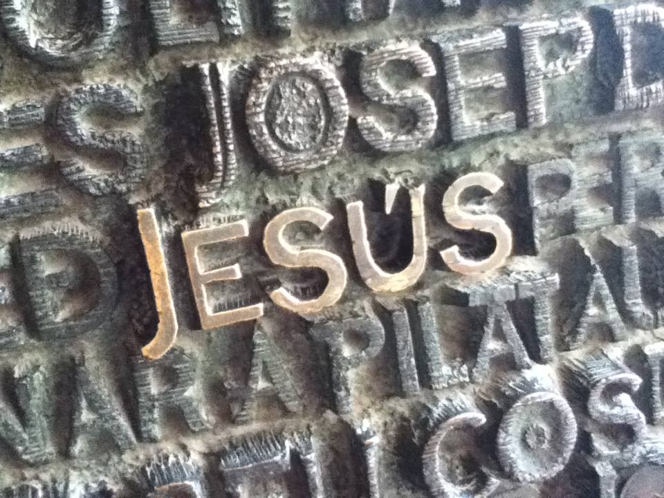

審査員コメント
〇自分も 30年前に スペインにいきました。
本当に 皆さんのんびり生きてますよね。
光景が 目に浮かびました。
●海外じゃないけど、田舎のバスはそんなんでした。暗くて外が見えないあの不安な気持ち、久しぶりに思い出しました。海外では普通なんでしょうか、住んでいたら慣れるものでしょうか。で、やっぱりそのあたりは日本素晴らしいなと思わせてくれます。
投票結果
100人共著プロジェクト「100人で書いた本」を最後まで読んでいただき、ありがとうございました。今回で7回目となるのですが、きちっとした枠組みがあるわけでもなく、時間も少しかかりすぎたなと反省しています。また今回は100人共著プロジェクト初となります3作品が同数で1位（MVA）となりました。おめでとうございます！
［第7回100人共著プロジェクトMVA受賞作品］
作品番号9番：黒い排気ガス（ネイビーブルー）
作品番号12番：小さな衝動（峯本雅子）
作品番号63番：星の子どもたち（7e）
投票していただいた皆様、ありがとうございました。またMVAを受賞されたお三方、おめでとうございます。Amazonからの報酬は振り込みまでに時間を要するので果報は寝て待て、みたいな感じでお願いします。
今回はGoogleフォームを利用して投票していただきました。投票に関しては、初めてコメント必須としたために普段より投票数が少なくなっておりますが、結果をGoogleスプレッドシートに保存しております。［
全投票とコメントはコチラ
］
100人共著プロジェクト 100人で書いた本～嘘篇～
2019年5月10日 第一版発行
発行 100人共著プロジェクト
編集 100人共著委員会
100人共著プロジェクトでは、文章を書きたい人を100人集めて1冊の本として出版します。定期的に開催してますので、あなたのタイミングがいい時にぜひ参加してみてください。
また本書の文章や写真を許可なく転載することは禁止です。著者の皆様におかれましては自分の作品に限り、転載が可能です。
ただし、本書を読んだ感想などは積極的に拡散をお願いします。